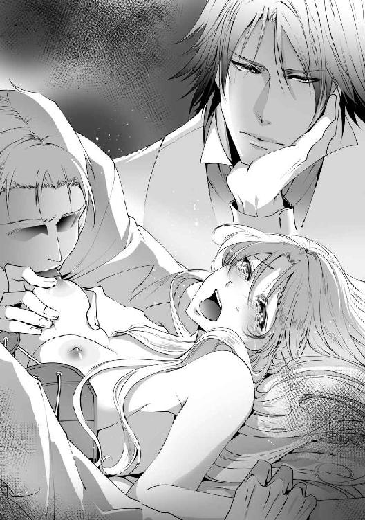

| 麗しの歌姫は黒侯爵に愛を捧げる【書下ろし・イラスト10枚入り】 (トパーズノベルス) | |
| 深雪まゆ | |
| (2016) | |
トパーズノベルス
麗しの歌姫は黒侯爵に愛を捧げる
著作 深雪まゆ
Illustration 深山キリ
この物語はフィクションであり、実在の人物・団体・事件とは一切関係ありません。
麗しの歌姫は黒侯爵に愛を捧げる
プロローグ
どうしてこんなことになっているのだろう、と寝台の上でボンヤリと考えていた。二人の見知らぬ男の手が肌の上を這い回り、体は恐怖でブルブル震えている。少し前までは恐慌状態で、力の限り抵抗していた。
手首を押さえられ、ドレスは床へ落とされ、コルセットから両方の乳丘が露出していた。下半身はドロワーズだけで、羞恥が全身を支配する。男の力は強く、掴んでいる華奢な手首は彼らにとって小動物を押さえているようなものだろう。
部屋の中には二人の男の他にもう一人男がいて、彼は金の彫刻が施された肘掛け付きの椅子に座していた。
男はウィングカラーとシルバーのウエストコートと同じ色のトラウザースを身に着けている。長い脚を組んでアームレストへ肘を置き、腕を立てたその手の平で気怠げに自分の頭を支えていた。助けを求めるように視線を送っても彼は微動だにせず、瞬きさえもしないでこちらを凝視しているだけだ。
冷たく感情の見えない瞳。なのになぜか奥歯を噛みしめるように、咬筋が盛り上がって見える。それが静かな興奮からなのか、それとも別の感情であるかは分からない。
いつ終わるとも知れないこの蛮行に耐えながら、声を我慢しようと思うのに卑猥に撫で回す手によって淫靡な声を引き出された。嫌なのに、頭の片隅で抵抗を緩めている自分に気付いて奥歯を噛みしめる。
「あっ......、あぁっ......」
「いい声で啼く。やはり誰でもよかったのか？」
背筋がヒヤリとするテノールに体が強ばった。このやわらかく甘い声を知っている。だから余計にこの現状も、彼の声音にも心が傷付く。
こんなのは違う、と言い返そうとしたが、二人の男のまさぐるような手が両脚を大きく広げてきて、ドロワーズの隙間を探り始めた。
「ひっ......、やっ、あ、あっ」
指先が陰唇を忙しなく撫で、秘裂の縁をくすぐるように行ったり来たりする。男達の手を振り解こうと藻掻いたせいで、穢らわしい指が秘芽を掠めた。
「んんっ、あっ、あぅっ！」
自分で敏感な場所へ当ててしまい、痺れるような刺激が太腿の肉を揺らす。瞼の裏がじわりと熱くなり、男の視線がそれを見透かしているような気がして、さらに羞恥は降り積もった。
男の手が乳丘を乱暴に掴み、揉んでくる。その先端は尖りジンジン疼くようで、思わず自分で触れそうになってしまう。ダメだと思いながらも体は否応なく反応し、やり場のない感情は体を焼く勢いだった。淫靡に乱れ、感じている声を聞かれ、男達の行為にどうしようもない悲しみの涙が浮かぶ。
「ほら、もっと脚を開いて」
押さえられながら、両脚をさらに広げられた。ドロワーズの裂け目から秘所が淫猥に開いていくのが分かる。男の指が秘芽を包む皮をグイッと捲り上げた。顔を見せた芽をぐりぐりと乱暴に擦られると、今までとは違う刺すような鋭い刺激が背筋を駆け抜けた。
「ああっ！ いっ、んっ、ああああっ！」
暴れる腰を男が押さえる。それでも秘芽を擦る指先を緩めてもらえず、ビクビクと腰が過剰に反応した。
（どうしよう......私、濡れてる？）
そうと分かったのは、男の指が陰部をその濡れた蜜で掻き回し始めたからだ。ぐちゅぐちゅと淫らな音が部屋の中に響き渡る。理解できない恥ずかしさと興奮がドッと襲い、さらに自らの愛蜜をあふれさせた。あまりに顕著な反応に、二人の男の息づかいが激しくなる。
「すごいな......。気持ちいいのか？」
興奮気味に唇を舐め、見下ろしてくる男の目はふるんと揺れる乳丘を視姦してくる。いやというほど擦られた乳首は乳輪から赤く膨れて赤みを増し、その先端が硬く凝っていた。
下半身で秘所を掻き回していた指が今度は秘孔を探り始める。
（見も知らぬ男達に、暴かれるなんて......いや！）
恐怖で体を震わせながら、細い腕を伸ばして男を押しのけようと突っ張った。だがそんなわずかな抗いなどで男達の動きを止めることは出来ない。膝頭を閉じようとしても力強い手で押しとどめられた。太い指は意味ありげに秘裂をなぞり、そしてくちゅりと指が侵入してくる。
「ひぁっ！ いっ......た、ぁっい」
鋭い痛みが走り体が強ばった。ありありとした異物感を体の中で感じ、同時に怖くなる。しかし自分があふれさせた蜜を纏った指は、滑らかに抽挿を始めた。
「ふっ......くぅ、んっ、抜いて......いや、ぁっ、抜いて......んんっ」
ゆっくりと出入り始めた指が慣れたように肉腔を撫で回す。不快感しかないはずなのに、なぜか違うなにかを運んでくる。こんなのはおかしい、そう思っても、内側をグッと押し上げられるとえも言われぬ快楽が押し寄せた。全身が痺れるようなその刺激に、蜜がトロトロとあふれていくのが分かる。
「僕の手でなくても、君は濡れて......啼くのだろう？」
「そんな......やめさせて......ッ。私は、はっ......あぁっ！」
そう叫んでも、彼は男達にやめろとは言わなかった。やわらかな乳丘の緩い稜線を男の舌が這い、嫌悪に顔を歪ませる。指は激しく抽挿を始め、淫靡な音を響かせた。腰の奥に溜まるむず痒い部分がたまらなくて腰を浮かせる。
「ひっ！ い、いやぁ......あっ！」
いやなはずなのに、思考が崩れ落ちてしまうような愉悦を連れてきた。体がどうにかなってしまったのではないかと思う。肉腔の襞が勝手に男の指を食い締め、さらにその摩擦を感じ取ろうとする。自ら体のコントロールを失い、淫らに官能を貪る自分自身が急に怖くなった。

「んんっ！ い、いた......っ、ぁっ」
胸の先をきつく引っ張られ背中が弓のようにのけぞる。瞳に溜まった涙が一筋、眦からあふれた。これはきっと悪い夢なのだ。そうでなければ彼がこんな乱暴を許すはずがない。
心の中で何度もそう呟いた。
男の顔が近づき首筋に生暖かい呼気が当たる。
「いっ......！ や......やめて」
上も下もいじられ、わけが分からなくなってしまう。男の指戯で心とは裏腹に体が高められていき、それを見られていることでさらに感じている自分がいやになった。
もうこれ以上は無理だと思っていると、勢いよく指を抜かれ安堵の吐息を漏らす。これでようやく終わりなのかと頭を上げれば、隣に膝立ちになった男が目の前で性器を露出していた。そこには浅黒く太い雄が天を向いてそそり勃っていて、それは凶悪な武器のように見えて恐ろしくなる。
「いや......そんなの、いやよ......」
手首を掴まれ強引にその雄を握らされる。熱く息づくそれを手の平に擦りつけられ、脈打つ感触に背筋がゾッとした。張り出した傘の部分が指の関節に引っかかる。性器の先端からは透明な液体がツプリとあふれてきた。
「ああ......、気持ちいいよ」
腰を動かす男が吐息交じりに声を漏らす。もう一人の男が、猛った雄を擦りながら先端を太腿へ押しつけているのが見えた。徐々に足の付け根辺りまで辿ってくると、秘部の周囲で焦らすようにあちこちを擦り始める。
「お願い！ いやぁ！ ......こんなのっ、やめっ......あぁっ！」
このままでは知らない男に純潔を散らされてしまう。
太腿に押し当てていた男の性器がゆっくり秘孔に向かってくる。あんなもので触れられたくない、そう思って膝を閉じようとしても、男の体が邪魔をして閉じられない。もう少しで野蛮な猛りが秘部に触れようとしたときだった。
「やめろっ」
鋭い声が部屋に響く。しかし興奮している二人の男達にはそれが聞こえないようだ。
あまりの恐怖に静止の声も耳に届かず、血の気が引くような感覚に見舞われる。必死になってなにかを叫んだ気がしたが、もうなにを言ったのか自分でも分からなかった。
どうしようもないひどい目眩が襲ってきたかと思うと、そのまま目の前が真っ暗になってしまったのだった。
第一章 秘密の出逢い
アリア・ペンデルトンの住んでいるローズレイン国は広大な農地を所有し、ワインやブランデーなど、アルコール飲料用の質のいい葡萄が穫れる。豊富な資源はそれだけではなく、複数の火山からは宝石にもなる黒曜石や、ガラスの原料なども産出される。
気候は一年を通して比較的温暖で、様々な種類の薔薇栽培でも有名だ。
薔薇の花びらが風に舞う光景は優美で、まるで花びらの雨が降るように見えるため、その名前が国名の由来とされていた。
そんな美しく資源の豊富な国にペンデルトン邸はあった。
アリアの父は子爵で国王陛下の恩寵を受け、広大な敷地を管理している。
今は一人娘となっていたが、アリアにはとても大切な妹がいた。しかし彼女は社交界デビューもしないうちに病に倒れ、その儚い命を散らしてしまった。
妹はアリアの歌声がとても好きで、よく「歌って」とせがんできた。アリアに似て、蒼い瞳にブロンドの髪をしていた彼女は愛しく、おねだりには何度も応えてあげた。そんな彼女が亡くなり今でも心を痛めている。
年頃の女性なら、もっと自分を着飾ることに興味を持ったり、舞踏会や親しい友人とお茶会に出かけたりするのが普通だったが、アリアはあまりそういうことに興味がない。一人で書斎に篭もり本を読むのが好きだし、ときには暖かい太陽の下で一人のんびりする方がいいと思っている。
物語を読んでいるときは、その話の主人公になったような気になれるし、頭の中で何度も思い出しては、ヒロインと自分を置き換えて妄想するのが楽しい。こんなことばかりしていたので、いつの間にか一人で妄想する癖が付いてしまった。想像力が豊かだったといえばそうだが、母にしてみればもう少し現実を見て欲しい、と思っていることだろう。
人付き合いは嫌いなわけではないが、会話の端々に相手の腹を探るような言葉が飛び交う社交界は苦手だった。人に気を遣い、楽しくもないのに微笑んで付き合う意味が分からないのだ。
そして舞踏会や晩餐会が苦手な理由はもう一つある。アリアの母が自らの邸で開いた晩餐会で、自分の娘は歌が上手い、と自慢したのが発端だった。そこでやむなく歌声を披露すると、感激した婦人達の手によって『歌姫』と呼ばれ噂を広げられた。そのおかげで、どの舞踏会へ出向いても、歌を聞かせてと悪気なくお願いされる。
『歌姫』のふたつ名は舞踏会へ行かなくなった今でも生きていて、珍しく顔を見せれば、瞬く間に複数の人に囲まれてしまうというありさまだ。実際は目立ちたいだけなのでは？ と陰口をたたく人間も少なくなかった。
そんなアリアは、今日も書斎でお茶を飲みながらお気に入りのカウチに座り、立て膝の上に分厚い医学書を乗せている。熱心に読書に励んでいるアリアの元へ、父のウィリアムが姿を見せた。
「アリア、また殿方の誘いを無下にしたと聞いたが、本当なのか？ いい加減、誰か一人に決めることはできないのか？」
声に反応して顔を上げれば、少し呆れたような父の顔があった。アリアの姿勢を見て、はしたない、とまた叱られるかと思ったが、それよりも面倒なことを聞かれ小さくため息を漏らす。
「どうしてお父様がそれを知っているの？ 私、誰にも言っていないのに」
「舞踏会へ誘われて出向いたまではいいが、せっかく声を掛けてもらったのに、お前は笑顔を見せるだけで返事もなにもなかったと......」
「シャロンが言っていたのね？」
父の言おうとした言葉を先回りする。そうだ、と父が気怠げに向かいのソファへと腰を下ろす。
シャロンはいとこで、年齢はアリアと同じ二十歳だ。ときどきこの邸へ遊びに来たりと交流があった。彼女は気の強い性格で、同い年なのにシャロンの方が姉に間違われることも少なくない。
そんな彼女のことを思い出していると、行儀悪くカウチに脚を乗せている姿を父が見咎め、厳しい視線で降ろしなさいと叱られた。そろそろとカウチから脚を降ろし、ドレスの裾を整える。
「もう社交界にデビューしてずいぶん経つだろう？ 時期もいい頃だ......」
「お父様、私......まだ誰かと結婚する気はないわ。それに、そういうことに興味を持てないの。ごめんなさい......私、少し散歩に行ってくるわ」
開いていた本をパタンと閉じ、テーブルにそれを置くとスッと立ち上がった。
「......アリア。待ちなさい。まだ話は終わっていないよ、アリア」
父の呼ぶ声を知らん顔で聞き流し、その場から慌てて逃げ出した。
結婚する相手を決めなさいと言われるのは、今に始まったことではない。もうずいぶん前から口酸っぱく言われていたが、いつまで経ってもそんな気になれなかった。
舞踏会へ行けば口説いてくる男性はそれなりにいる。ダンスの相手に困ることはなかったが、あからさまな口説き文句には辟易していた。大抵はアリアの外見だけを賛美するばかりで、その本質的な部分は見てくれない。ひどいときには子爵の繋がりを欲した雰囲気を前面に押し出す輩も近づいて来た。それが社交界だといえばそうだが、だからこそ好きになれないのだ。
歌声が美しいと知れば、聞かせて欲しいとせがまれる。それを披露すれば、上辺だけだとすぐに分かる称賛の言葉を投げかけられた。なぜこの歌を好きなのかという話には、興味のない男ばかりだ。
アリアは使用人用の裏口からそっと抜け出した。邸の周囲は薔薇の壁に囲まれていて、今の時期は美しい花がたくさん咲いている。裏門から外へ出ると、すぐに若草の絨毯が細い足首までを隠す。
鼻歌を口ずさみながら、遠くまで広がる小高い丘を登り切る。歩いてきた道を振り返り、アリアは天を仰ぎ目を閉じた。草の香りと微かに鼻孔をくすぐる薔薇の芳香に笑顔を浮かべる。
「空がとても高いわ」
青い空と草原の緑。そして薔薇の鮮やかな赤がそのコントラストにスパイスを加えている。この丘から見る景色が好きだ。それは妹も同じだった。こっそり二人で邸を抜け出してはよく遊んだ。
それを思い出しながらアリアは再び歩き始める。心地いい風が、ウェーブがかった長いブロンドをそよがせた。胸元の大きく開いたピンクのドレスはお気に入りで、風になびく長い裾を両手で持ち上げる。パフスリーブで、袖先に向かって広がった形の袖は上品な印象だ。肌が透けて見えるほど薄いレース調になっていて、袖口には細いフリンジがあしらわれていた。
エレガントではあったがあくまで室内着だ。この格好で外へ出たと知れたらきっと父に叱られてしまうだろう。でもバレなければ大丈夫だわ、といたずらっぽく舌を出し、早足で森へと向かった。
こうして邸を抜け出して向かう先は決まっている。アリア以外誰も知ることのない秘密の場所だ。ただ一人知っていたのは妹だったが、彼女が亡くなってからは自分一人の場所になった。
「もう少し」
お気に入りの秘密の場所。木漏れ日の差す林の小道を抜け、開けたそこは透明度の高い美しい小川が流れている。そして目の前には色鮮やかな緑が天に届くほど高く伸びていた。草地から川原へ近づくと、きめ細かい真っ白な砂地が広がっている。
川縁ならもっと大きな石がゴロゴロしていてもいいものなのに、その類いが一切ない浜辺のようなその場所は、まるで物語の中から抜け出てきたみたいだった。
アリアは誰も見ていないのをいいことに、履いていた靴と太腿で留まっているガーターベルトの金具を外し、絹の靴下を脱ぎ捨て素足になった。足の裏に触れる砂の感触がとても心地いい。
「やっぱりこの場所は最高」
そう言いながらドレスの裾を持ち上げ、砂の上で何度も足を踏みならす。そのまま川の近くまで行くと、足先を水に浸した。透き通る川の水面には複雑な波紋が描かれる。裾が濡れてしまうのも構わずに、その中へ入っていった。遠浅になっている川底を見ながら、細かく白い砂をつま先で蹴り上げる。そしてもう少し深い場所へ足を進めた。
「冷たくて、気持ちいい」
川面を揺らす風が緑の香りを運んできた。髪はふわふわと宙を舞い、両手で持ち上げたドレスの裾がなびく。心に愛しい妹のことを思い、大きく息を吸ってアリアは静かに歌い始めた。
透き通る清らかな声は、大気を細かく震わせた。風も木々もこの小川も、まるで歌声を聞いているかのようで、降り注ぐ陽の光は川面に反射してキラキラ輝きアリアを照らした。
歌うことに夢中になっていたアリアは、いつの間にか掴んでいたドレスを離し、両手を空へ向かって伸ばしていた。天国にいる彼女に届くようにと伸びやかなソプラノを響かせる。
笑顔の素敵だった妹を瞼の裏に思い描く。真っ直ぐに伸びた輝くブロンドの髪と、透き通るような美しい蒼い瞳の持ち主だった。
よく笑う彼女はアリアに花の冠を作ってくれた。そんな愛らしく天使のような妹との思い出で胸をいっぱいにする。伸びやかな歌声がその余韻を残し最後の音階を歌い終え、静かに息を吐くと、閉じていた瞳をゆっくり開いた。
「ブラボー！」
背後から聞こえた声にビクッと驚いて振り返った。そこには見知らぬ男性が立っていて、称賛の拍手をしていたのだ。
「なんて素晴らしい！ 天使の歌声そのものだ！ ずっと聞いていたいよ」
舞踏会でさんざん聞かされた言葉を投げかけられ、驚きつつも内心うんざりする。
「......あなた、誰？」
不安げに瞳を揺らしながらアリアは問いかける。
川の際までやってきた男性がハッとなにかに気付いたように友好的な笑みを浮かべ、若干かしこまって姿勢を正す。
「いきなり驚かせてすまない。君の歌をもう少し聞いていたいんだけど、そこでは話も出来ないから、少しこちらへ来てもらえないだろうか」
長身で黒髪の男は、アメジスト色の美しい瞳で見つめ、こちらへ手を伸ばしていた。二十歳のアリアと年齢はそれほど変わらないように見える。いきなり声を掛けられて驚いているアリアに、さも知り合いかのように親しげに接してきた。
（なんだか強引な人）
そう思いつつも、ずっと川の中に立っているわけにもいかない。どうしようかと悩んだが、アリアは濡れてしまったドレスを片手で持ち上げ、仕方なく男の差し出した手を取る。
手を掴んだ途端、強く握りしめられグッと傍へ引っ張られた。そして男の腕は瞬く間にアリアの腰へ回り、下半身が密着する。驚いて顔を上げると至近距離に美丈夫な男の顔があった。
「僕の名前はアドニス。君はなんて言うの？」
「......私は、アリア......です」
男の勢いに押され、思わず自分の名前を口にした。見つめてくるアメジスト色の瞳から目が離せない。それはまるで宝石のようにキラキラと輝き、瞳の中で光が反射して妖精のように踊っている。様々な色が彼の瞳の中で弾け、見ているだけで心臓が高鳴り胸が騒がしくなった。
「アリア、いい名前だね」
「あの......は、離していただけませんか？」
アリアは男とあまりに近い距離にいることに気付き、恥ずかしくて頬を赤らめた。男の人とこんなに顔を近づけて話したことはない。それに密着するほど抱きしめられた経験もないのだ。
アリアの反応に気付いた彼は、悪かったね、とようやく解放してくれた。
改めて彼を見上げる。切れ長の瞳と高い鼻梁、微笑んだときに見えたのは白薔薇のような真っ白な歯だ。ギリシャ彫刻のように、なにもかもが整い過ぎている容貌に目を奪われてしまう。
（なんて美しい人なの）
アリアがアドニスの優美さに魅了されている間に、彼はサラサラと流れる小川へ視線を移動させた。
「ここは素敵な場所だ。こんな天国のような所があるなんて知らなかったよ」
「私の......秘密の場所なんです。あなたはどうやってここへ？」
「狩りの最中だったんだけど、僕の犬が一匹迷子になって探していたんだ。こんな領土境まで来ていたとは知らなかったよ。この辺で僕の犬を見なかった？」
「いいえ、見ていないわ。あの、アドニス様......はどちらの方ですの？」
アリアの父が管理する領土の隣はロンギス卿のものだ。そこで狩りをしていたのなら、その友人関係か身内なのかもしれない。
彼の格好からして狩猟というのは本当らしく、ハンチング帽にジャケット、膝まであるブーツを履いていて、手足が長くスタイルのいい彼に似合っている。
「ん？ もしかして僕がどこの家の出か気にしている？ 君が気になるというのなら......そうだな、僕と友達になるというのはどうだ？ 身分階級など気にしない、対等の友人だ」
大人っぽい雰囲気を見せたかと思うと、今度は子供のような笑顔を浮かべている。クルクルと変わる彼の表情にアリアはおかしくてクスクス笑う。こんな提案をしてくる男の人には初めて出会った。
「あれ？ 僕はなにかおかしなことを言ったか？」
「あ、ごめんなさい。私、笑ってしまって......失礼よね。でも、なんだか妹みたいでおかしくなってしまって」
まだ元気だった頃の妹の姿を思い出す。彼女もコロコロ表情が変わるかわいらしい子供だった。その妹と彼の印象が重なる。すると今まで全身で警戒していた緊張が緩んでいく気がした。
それから自分の身分を明かさない男の人も初めてだった。大抵は一番に自らの称号を相手へ示し、ほとんどの男の人はそれに誇りを持っているからだ。
会って数分も経たないうちに彼のペースにのまれていると気付き、アリアはとても不思議な気持ちになった。こうまで強引に距離を詰めてくる人は舞踏会で声を掛けてくる男と同じだが、無邪気な笑顔と身分を気にしない奔放さに心が惹かれる。そして親しみを感じるのは彼の容貌から滲み出る、やさしい雰囲気のせいでもあるのだろう。
「君は妹さんがいるのか。あ、よかったら向こうで座って話さないか？」
気付けばお互いに立ったままの状態で、アリアは足元はまだ半分水の中だ。
「あの......私、濡れているから近づくと汚れてしまうわ」
「平気だよ。僕は森の中を走っていたから、泥が跳ねてる。おあいこだ」
そう言われて彼の足元を見ると、そのブーツには茶色の泥跳ねが点々と付いていた。
「本当。同じだわ」
アリアはニコリと微笑んだ。そして砂地から丈の短い草地へ移動する。足もドレスの裾も濡れていたが、気に留めることなく座ろうとして止められた。
「そのまま座ったら、またドレスが汚れてしまう。ちょっと待って」
彼が首に巻いていたアスコットタイを解いて広げ、それを持ってアリアの前で跪いた。驚いて一歩下がってしまったが、彼はこちらを見上げるようにして手を差し出している。足をこの上へ乗せて、と言っているらしい。
「そんなに離れたら足が拭けない。もっと傍へ。さあ、遠慮しないで」
「でも......今日会ったばかりの人にそんなことをさせられないわ。それに、タイを汚してしまう」
「気にしなくていい。アリアはドレスの裾を持ち上げておいて」
名前で呼ばれ、ドキンと鼓動が跳ねた。いつまでもアドニスを座らせておくことも出来ず、アリアは諦めたように一歩前へ踏み出した。ドレスの裾を持ち上げると、砂まみれになった素足が覗く。それを見られるのが恥ずかしくて、頬を染めながら目を閉じて顔を背けた。
「そんなに恥ずかしい？ 初心なお嬢さんだな」
彼はクスクスと笑いながらアリアの足を持ち上げ、丁寧に砂を払い落として拭いていく。初めは恥ずかしくて目を逸らしていたが、真剣な眼差しでその作業をしている姿を見ているうちに、どうやら悪い人ではなさそうだと感じ始めた。
「君の足はとても綺麗だ。色も形も。爪の先まで美しい」
しかし拭き終わった足をなかなか降ろしてもらえず、アリアはふらふらしてバランスを崩しそうになる。すると彼はなにを考えたのか、その足先へキスをしようと顔を寄せていくのが見えた。
（えっ、なにをするの!?）
驚いて止めようとしたが、やめて、と言う前にバランスを崩し、体が後ろへ傾いでいく。
「きゃっ！」
「おっと、危ないっ」
倒れそうになった体を、アドニスが素早く背中へ腕を回し受け止めてくれる。そしてその腕に抱えられたまま二人同時に草原へと転がった。思っていたほど衝撃が少なくて、アリアは恐る恐る目を開ける。すると目前には彼の顔が迫っていた。もう少しで唇が触れそうな距離に動揺が隠せない。
「大丈夫？ ちょっといたずらが過ぎたかな？」
「あっ、あのっ！ ごめんなさいっ。私、バランスを崩して......っ」
「僕はこうして二度も君を抱きしめられたから、うれしいくらいだ。それにしてもアリアは鳥の羽根のように軽いな」
「そんなこと......言わないで下さい」
恥ずかしくなって顔を逸らした。さっきと同じように胸が騒ぐ。体が熱くなってどうしようもなくて、鼓動がにわかに跳ね上がる。こんな風になるのは転んでしまったからなのか、美貌の男性に抱き留められたからなのか。それはアリア自身にも分からなかった。
「君は天使だ」
追い打ちをかけるように心地いいテノールで囁かれ、思わずアドニスを見上げた。彼と視線がぶつかる。みるみる頬が紅潮していくのが分かり、アリアは急いで彼の上から体を移動させた。
「なんだ、もうおしまい？」
「なにが......ですか？」
恥ずかしさのあまりあさっての方向を向いてしまい、お礼を言うことも忘れている。それよりも、よく知らない男性と会って間もない状態で、こんなに密着してしまったことが信じられなかった。
（抱き寄せてきたり、足を拭いたり......この方は私をどうしたいのかしら。本当にお友達になりたいだけ？）
再び警戒心と共に疑問が頭を駆け巡る。アリアの隣へ座り直した彼は、まだこちらの様子を窺っているようだ。視線を感じるが恥ずかしくて顔を向けられない。
「そんなに怒らないで、わざとじゃない。実は天使の歌声に誘われてここへやって来たんだ。そしたらおとぎ話の中から飛び出したような、本物の天使がいたんだ。それは舞い上がるさ」
さっきは猟をしていたと言ったくせに、今度はからかうように勝手な想像を口にしていた。しかし彼が言えば本当にそうなのかと思えてくる。ただし、天使という言葉はあまりにも突飛すぎてポカンとしてしまった。
「私の歌を......どこから聞いていたの？」
「たぶん......最初から？」
「えっ、最初から!?」
驚いてアドニスの方を振り返った。
「やっとこっちを見てくれた」
「あっ......」
そこにはやさしく微笑む彼の笑顔があって、やっぱり頬が熱くなる。彼の美貌はアリアの胸を何度もざわつかせた。今度は顔を逸らさず視線だけを俯ける。
初対面の人からこんな風に扱われた経験がない。だからどこまで心を許したらいいのか、どのくらいの距離で話せばいいのか見当も付かなかった。
しかし最初から聞いていたならば、アリアがはしたなく絹の靴下や靴を脱ぎ捨てたのも知っているかもしれないと思えば、全身が羞恥で熱くなる。
（恥ずかしい......）
普段から父の言いつけをきちんと聞いておけばよかったと、こんなところで後悔してしまった。
「友達になって欲しいと言った僕の提案、アリアはどう思う？ あ、僕のことはアドニスって呼び捨てでいいから。君のこともアリアって呼ぶよ。ああ......もうさっきから何度も呼んでるか」
アドニスの強引な提案にどうしようかと迷う。こんな風に距離を縮められるのは初めてで、戸惑いだってある。けれど、もう少し彼を知りたいという好奇心はむくむくと大きくなり、アリアの迷いを打ち消した。
「友達なら......私は別に構わないけれど。でも、アドニス......あなたがどちらの方か分からないと対応に困ってしまうわ」
アリアの返答に、彼は少し考えるような仕草を見せる。だがなにか思いついたような表情になり、切れ長の瞳をグッと大きく見開いた。
「そうだ、じゃあこうしよう。この場所では、ただのアリアとアドニスだ。さっき、ここは君だけが知っている秘密の場所と言っていただろ？ だったら他には誰も来ないだろうし、僕達を知る人もいない。二人だけの秘密っていうのはどうだ？」
名案だろ？ とでも言うように、アドニスは瞳を子供のようにキラキラ光らせている。二人だけの秘密、という言葉になんだか妙に興味を惹かれワクワクした。それにここだけの決め事なら問題はないだろう。
「分かったわ。じゃあ、私もあなたをアドニスと呼ぶわね」
「よかった。......それでアリア、君には妹がいるって言ってたけど、彼女もここに来ることがある？」
親しげに話しかけてくるアドニスが、膝の上へ置いていたアリアの手を握ってくる。あまりに自然な仕草に驚くが、温かくて大きなその手からはいやな感じはしない。その代わりにトクンと心臓の辺りにさざめきが起こった。
「妹は......来ないわ」
「知らないってこと？」
「......いいえ。妹のマリアは、小さいとき病に倒れて......亡くなってしまったの」
ベッドの上で呼吸を荒げながら必死に笑顔を浮かべ、歌って、とせがんできた彼女の顔を思い出せば胸が痛くなる。彼女はアリアの歌声が好きで、一番のファンだから、と言って幸せそうに微笑んでいた。
妹の手を握りアリアは歌い、彼女はまるで天使のような笑顔を浮かべたまま天に召されていったのだ。今でも目を閉じると瞼の裏にその光景が思い出される。だが悲しい記憶だけではない。この小川を二人で見つけたときも、どこまでも続く草原を駆けたことも、楽しい記憶は色褪せずにいつまでもアリアの胸の中に残り続けている。
だからアリアが歌を口にするときは、笑顔の妹が傍にいる気がした。
「......それは、つらかったね」
瞬きをするアリアの睫毛が涙に湿る。アドニスがやさしく肩を抱き寄せてくれた。ゆっくりとアリアの体が傾き、彼の男らしい胸板へそっと頭を預ける。
「とても美しい子だったわ。私が歌えばとても喜んで、もっと歌ってと......せがんできたの。ときどき一緒に歌うこともあったわ。でも......」
「だからアリアは歌うのか？」
「ええ、そうよ。私が歌うときは、いつも妹のマリアを思っているの」
アドニスに肩を抱かれながら、口ずさむように歌い始める。それが涙声に変わっても、アドニスはずっと黙ったまま抱いていてくれた。
「僕は......天使の歌声に恋をしてしまったようだ」
いつの間にか太陽が西へと傾いてきて、辺りをオレンジ色に染めていた。アドニスの甘い声にアリアが顔を向ける。
アメジスト色の瞳が夕日に反射して神秘的な色に染まり、そして情熱的に囁かれる。彼の言葉や瞳の強さには不思議と魅了された。名前以外のなにも知らない彼に、まるで吸い込まれるようにして惹きつけられた。見惚れてしまい返事ができないでいると、アドニスが小さくため息を吐き、力なくアリアの手を離してしまう。
「あのっ、私......」
「僕にも妹がいるんだ」
少し寂しそうな、そしてどこか諦めたような表情を見せたアドニスが呟いた。彼は草地へゴロンと体を横たえ、頭の後ろで手を組む。
「アドニスにも、妹がいるの？」
「ああ。妹のナタリアは僕の三つ下だ。今年で二十歳になるよ」
自分と同じ歳なのだと知って親近感を覚えた。ということは彼はアリアの三歳年上になる。しかし今は実年齢よりも大人びて見えた。遠くの空を見つめるようにして、細めた切れ長の瞳は微かに潤んでいる。
「妹さん、私と同じ歳なのね」
「ああ、そうなのか。てっきりアリアはまだ社交界デビューもしていないのかと思った」
アドニスはクックと喉の奥で笑う。とても繊細な話をしていたかと思えば、今のように冗談を挟んでくる。年上とは思えない子供っぽさに、アリアは思わず口元を緩めた。
「失礼ね。私はとっくに社交界でのお披露目はすませているわ」
「それは失礼。ミス・アリア」
冗談っぽく彼の胸を叩くと、スルリとその指先に触れられる。けれどさっきのように握りしめてはくれなかった。わずかに期待している自分に気付き、アリアは密かに頬を紅潮させる。
「僕の妹は生きているけど、もうずいぶん会っていない」
「え？ どうして？」
「彼女は社交界のお披露目が終わったそのすぐ後に、ドレイン伯爵と結婚した。あの人はこの国でも大きな力を持ってるからね。両親は勝手に話を進めたんだ」
それを聞いたアリアは驚いた。社交界でのお披露目は早くて十四歳くらいからだ。もしもそうだとしたら、あまりに若くして結婚したことになる。そしてドレイン伯爵といえば、アリアの父よりも年齢はかなり上だ。そんな親子以上に年齢が離れた相手と結婚するなどアリアには考えられない。
「だって、それって......」
「いわゆる政治的結婚というものだ。父は僕に知らせようともしなかった。まあ、知っていたところで僕の言葉に耳を貸す人ではないが。この話を知らされたときには、もう決まっていたらしい。だからナタリアにはなにもしてやれなかった。......最後の日も、彼女は泣いていた」
「でも、そんなに気の進まない結婚なのに、どうして......」
気が進まなければ逃げればいい、そんな単純なことを考えていた。けれど家の複雑なしがらみに抗えず、望まない結婚をする人はたくさんいる。アリアも父から結婚を急かされてはいたが、強制されていないだけ幸せだ。そういう部分では自由にさせてもらえているのだと知った。
「ドレイン伯爵の元へ嫁ぐことが、家にとっては有益になると聞かされた。本当にかわいそうなことをした。それ以来、ナタリアは僕の手紙には一切返事をくれない。もちろん、出向いて行ったところで会ってもくれない」
そうされるのも当たり前なんだ、と彼は力なく言う。
結婚の意味をそんなに深く考えたことはなかった。毎日のように父に急かされ、興味がないからと逃げているだけのアリアにとって、家の命運を左右するような事態に繋がるだろうことなど、真剣に考えたこともなかった。
「アドニス......あなた、とても後悔しているのね」
「ああ、とても後悔している。もっと早くに知っていれば、なにか出来たんじゃないかと思っている。悔しいよ」
彼は自分の腕で目元を隠すように覆った。もしかしたら泣きたいのかもしれない。けれどアドニスは唇を噛みしめ、それを我慢しているようにも見えた。
その姿を目にすると胸が締め付けられるように苦しくなる。彼の苦痛をどうにか癒してあげたいと思った。そんなアリアに出来ることはたったひとつだ。
「ねえ、アドニス。私、歌うわ」
アリアはスッと立ち上がり、そして暮れてゆく七色の空を見上げた。
「アドニスと、二人の妹のために歌うわ」
ニコリと微笑んで彼を見下ろしてから、すぅっと息を吸い込み、アリアは喉を震わせる。彼方まで歌声を届けるように、両手を胸の前で握りしめた。夕刻の風がアリアのブロンドを揺らす。そしてその風に思いを乗せるように、美しいソプラノを響かせた。
どれだけアリアが妹のことを愛していたのか。そしてアドニスがナタリアを思い、後悔し、心を痛めているかという気持ちを。そして彼の痛む心が少しでも自分の歌声で癒されてくれるのなら、とそう思った。言霊に気持ちを乗せたアリアは、どこまでもその歌声を響かせたのだった。
そうして最後の音色を歌い終えたとき、アリアは背後からアドニスに抱き締められていた。
「君は、なんて......」
彼は最後まで言葉に出来ないようだった。けれどその気持ちは強く抱きしめてくる腕で理解できる。微かに震える彼の体は華奢なアリアよりも力強いはずなのに、この瞬間は愛しく思えるくらいに儚げだった。
「こんなに素晴らしいアヴェ・マリアを聞いたのは生まれて初めてだった......」
「ありがとう......アドニス」
「僕は......」
「......それ以上は言わないで。アドニスの気持ち、すごくよく分かるから。私の妹はもう亡くなってしまったけれど、あなたのナタリアはまだ生きているわ」
アリアは彼の腕の中で体をゆっくり反転させる。そして長身のアドニスを見上げるようにして、彼の頬を両手でそっと挟んだ。
「きっと、ナタリアに気持ちが届くと思うわ。あなたがその努力を怠らなければ」
やさしく微笑み、彼の頬から手を離そうとすると、今度はアドニスが自らの手を上から重ねてきた。
「そうだな。分かってもらえる日が来ることを祈るよ。君のおかげで、少しだけそう思えるようになった。ありがとうアリア、君は、本当に素晴らしいよ」
「恥ずかしい......そんな大げさに言わないで？」
アリアは面はゆさに頬を赤らめて顔を伏せる。さっきまではアドニスを励ますため、なにか出来ないかと思い必死だっただけだ。
（私、とても出しゃばったのではないかしら）
自分でも気付かないうちに生意気をしたのではと、少し心配になる。
そして会って間もない男性に三度も抱きしめられた現状に、今さらながら焦っていた。けれどアリアの中に一つの気持ちがわき上がってくる。
「アドニス、私......あなたを元気付けたいの。だからあなたのために歌わせてくれないかしら？」
「でも、アリアは妹のために歌っているんだろう？」
彼の申し訳なさそうな顔を見て、にわかに胸が騒ぐ。寂しくてつらい思いをしている彼の心が、自分の歌声で癒やされるのならと強く思った。
「この場所で歌うときは、あなたを心に思いながら歌いたいの」
アリアがそんな風に言うと、彼の瞳が少し潤む。アドニスの手がアリアの頬をやさしく包んできた。彼の手は少し冷たくて、それが火照った頬に心地いい。熱っぽく見つめてくるその瞳に囚われ、アリアは視線を逸らすことが出来なかった。彼の親指がアリアの唇に触れる。
「ありがとう、アリア。やはり君は天使かもしれないな」
触れた親指がゆっくりと唇の輪郭をなぞってくる。どこか官能的な雰囲気を漂わせ、アリアの鼓動はにわかに速くなった。
「またここで君と会いたい。君のことをもっとたくさん知りたい。君はどう思っている？」
「私も......あなたをもっと知りたいわ。こんな風に思うのは初めてだけれど、でも......私もあなたと同じ気持ちよ」
トクントクンと胸をときめかせながら正直に答える。本音がなんの抵抗もなくポロポロと零れ落ちた。この先、彼となにかが始まる予感に胸のざわめきを感じつつ、夕日が沈んでいく川の畔で、アリアはアドニスと言葉なく見つめ合っていた。
第二章 甘いゲーム
アドニスとは毎日のように秘密の小川で顔を合わせるようになった。時間を決めていなくても、彼を待つ時間も楽しみになり、先に来てどれだけ待ったかを競い合うようにもなった。そんな些細な出来事さえも楽しくて、自室や書斎で本を読むことの多かったアリアは、こっそり邸を空ける日が目に見えて増えた。
彼と話しているとアリアは時間が過ぎるのも忘れてしまう。お互いに好きなもののことや、知らない知識を教えあったりした。アドニスは最近、狩りにハマっているらしい。そのために犬を何頭も飼っていて、犬達にはお菓子の名前を付けていると言っていた。
──犬にお菓子の名前を付けているの？
──そうなんだ。クッキーにビスケ、ショコラにチーズ。
狩猟の際に犬を呼ぶとなぜかお腹が空くんだ、と言い出し、アリアはまた笑わされた。アドニスのお茶目な一面を知れば、もっと彼を知りたくなる。
他にもたくさん話すことはあったが、お互いの家のことや身分を明かすような話は話題にしなかった。それでも二人で会えば会話は弾み、この時間がいつまでも続けばいいのにと考えない日はなかったのだ。
「ねえ、アリア。あなた最近変わったわよね」
アリアが特別に取り寄せた茶葉で紅茶を淹れていると、久しぶりに遊びに来たいとこのシャロンにそう言われた。こんなことはメイドにさせればいい、と彼女にも言われたが、お客様には自分でもてなしをしてみたい、と無理を言って教えてもらったのだ。
「私、変わったかしら？」
「変わったわよ。だって、前は自分でお茶を淹れたいなんて、言ったこともなかったでしょう？ それが急にこれですもの」
「そ、そんなことないわ。医学の本を読むのもいいけれど、もう少し趣味の幅を広げたかっただけよ」
動揺を隠すように返事をしたが、実際はシャロンの言う通りアリアはアドニスと会うようになってから少しずつ変わり始めていた。それは自分自身でもよく分かっていて、彼が好きだというものには興味を惹かれてしまうのだ。
男性ならもっとお酒や煙草に関心があってもいいのに、なぜかアドニスは紅茶に興味があると言っていた。そう言われてから自分でもいろいろ調べるようになり、挙げ句の果てには茶葉を取り寄せ、自らお茶を淹れるようになったのだ。父はアリアの変化に驚いていたが、悪いことではないから、と口を挟んでは来なかった。
「へぇ、趣味......。歌ばかり、本ばかり読んでいたアリアが趣味の幅を広げるですって？ 私が声を掛けないと舞踏会にすら足を向けないあなたが？ 新しいドレスを買ったのだって、もう覚えていないほど昔よ？」
遠回しに嫌みを言われているのは分かったが、どれもこれも当たっているのでなにも言い返せなかった。
「私のことはいいのよ。それよりシャロン、久しぶりに私を訪ねて来たのは、なにか用事があってのこと？」
アリアは自分とシャロンの紅茶を淹れ終え、カウチに腰を下ろした。
「このドレス、どう？ 私の赤い髪に合わせてお父様が買って下さったの。仕立てもよくてとても気に入っているのよ」
シャロンは長いストレートの赤毛をひるがえして、くるりと可憐にステップを踏む。するとワインレッドのドレスがふわりと広がり、一輪の薔薇が咲いたように見える。
少し猫目の彼女は、瞳をキラキラさせながら話していた。気の強い性格はその顔立ちにも表れていて、なにかというとアリアにキツイ言葉を投げかける。嫌われてはいないと分かっていても、ときどきショックを受けることもあった。だがそれが彼女の性格であり、悪意は感じないので聞き流すようにしている。
しかし今のアリアはそれどころではない。もうそろそろ邸を出てアドニスのいるあの場所へ向かう時間に差し掛かっているのだ。気持ちはすでにあの小川にある。
（きっとアドニスを待たせてしまっているわ。どうしよう。今日はもう会えないのかしら）
よほどのことがない限り、会いに行かない、という選択はなかったのだが、今日は予定外にシャロンが遊びに来たので気もそぞろだ。
「ねえ、私の話、聞いているの？」
アリアの隣に腰を下ろし、ティーカップとソーサーを手にした彼女が怪訝そうにこちらを窺ってくる。アドニスと会っていることも、あの場所もバレてはいけない。そう思ったアリアは平静を装いつつ、同じようにカップを手にした。
「ええ、聞いてるわ。とても素敵なドレスだと思うわよ？」
「でしょう？ これの他にもいろいろ仕立てていただくの。アリアも一緒にどう？」
「あ......。私は別に、たくさん持っているから、いらないわ」
「って言っても、普段着るものがあなたは質素なのよ。まさかその格好で外へ出たりはしないわよね？」
いつも着ているドレスは邸の中でだけの格好だが、アドニスと会うときもこのままだ。秘密裏に会っているので、そのときだけ特別に着替えでもしたらすぐにバレてしまう。かといって邸内で着る服が急によそ行きになるのも不自然だろう。
「ま、まさか......これで外へ出るなんてないわよ。そのくらい私だって分かっているもの」
「よかった。そんな恥ずかしいことをしてるって他で耳にしたら、いとこである私だって恥をかくわ」
ちくりと言われ、アリアは目を伏せた。口元へ寄せたカップからダージリンのいい香りがやんわりと心を癒してくれる。彼女がこうして強く言うのは分からなくもないのだ。
（私が今まで無頓着だったんですもの。仕方がないわ）
それよりも今は、時間の方が気になって仕方がなくて、サロンにある暖炉の上の時計をチラチラ見てしまう。もうアドニスはあの場所で待っているかもしれない。そう思うとじっと座っているのも辛くなってくる。
「どうしたの？ 時間ばかり気にしてるけれど。やっぱりなにかお約束でもあった？」
「え、あ......そういうわけではないけど。少し読みたい本があったから、気になってしまって」
「いつものつまらない医学書ではなく？」
「ええ。ちゃんと物語になっているわ」
「あら、珍しい。そんなこともあるのね。まあ、今日は私が急に訪ねて来たことだし、これを飲んだら退散するわ。今度来たとき、その物語のあらましでも聞かせてよ」
シャロンはニコリと微笑み、手にしているカップをテーブルへ戻した。まだ少し紅茶は残っていたが、彼女は立ち上がってドレスの裾を整える。
「お見送りはいいわよ。あなたは好きな本を好きなだけ楽しんで」
「ありがとう、シャロン」
彼女の嫌みの交じった言葉も、ニコリと笑顔で受け流す。それを見た彼女も同じように微笑んでいた。彼女のその笑顔の意味を、このときのアリアはまだ知らなかった。
シャロンとはサロンで別れた。お茶のセットもそのままに、アリアはいそいそと自室へ戻る。姿見の前で何度も身なりを確認した。
（やっぱり、こんな格好だとみっともないかしら）
いつも着ているのはストンとした直線的でシンプルなデザインのドレスだ。色はお気に入りのピンクだったが、ペチコートもボリュームが乏しいのでやはりこのシルエットでは貧相に見える。
（でも本格的に着替えるとなったら、一人では無理だし。それに着替えたって知れたら、私がどこへ行くのか打ち明けないとだめだわ）
それは絶対に出来ない、とアリアは鏡の前で首を振った。アドニスなら外見なんて気にせず、ちゃんと中身を見てくれるだろうと、勝手に彼を信じることに決めた。
メイドの目を盗み、今日もそっと自室を抜け出す。いつものように邸の裏口から出ると、草原の上り坂を一気に駆けた。息が弾み、荒い呼吸音さえも誰かに聞かれてしまうのではないかと不安になる。だがアリアの気持ちはもうあの小川にあって、アドニスのことばかり考えながら、一度も後ろを振り返ることなく一心に走った。
木漏れ日の差す小道を駆け抜けてようやく小川へ辿り着くと、そこには見慣れた後ろ姿がある。
「アドニス！」
我慢できずに彼の名を呼び、下り坂になっている草地を走った。高揚で心臓がドキドキする。それに気付いたアドニスがパッと振り返って立ち上がった。
「アリアっ」
真っ直ぐ彼に向かって走るアリアを、大手を広げ迎えてくれる。しかし勢いがつき過ぎて草に足を取られてしまった。
「きゃっ！」
「危ないっ！」
反射的に一歩踏み出した彼に抱き留められたが、そのままアドニスを押し倒すようにして草地へ転がった。アリアは彼の胸の上で息を弾ませながら顔を上げる。そこにはなぜか肩を揺らして笑っている彼がいた。
「ごめんなさ......い。あの、どこも痛くはない？ アドニス？ なぜ笑っているの？」
アリアは慌てて体を起こしアドニスの上から下りて座り直す。けれど彼はまだ寝転がったまま笑っていた。
「アドニス？」
「ごめんごめん。意外とアリアはそそっかしいというか、見た目にそぐわずおてんばなのかと思って」
「えっ、やだ、今のは偶然......草に足が取られただけよ？ 本当よ？ アドニスったら、笑い過ぎなんだから」
恥ずかしくて顔が真っ赤になり、笑っているアドニスを見ていられなくて背中を向けた。はしたないと思われただろうか。けれど今日はシャロンが来ていたし、ここへは来られないと諦めていたから、彼の姿を見て思わず浮き足立った。
「そういえば、僕と初めて会ったときも、君は転んだな」
「そ、それは......そうだけど。あれはあなたが私の足に......」
「僕が君の足に......なに？」
我慢できず向き直り反論しようとした。彼は寝そべったまま肘を立て、手で頭を支えた格好でこちらを見つめニヤニヤしている。初めて会った日、自分がなにをしたのかを承知の上で、わざと聞いているのだ。
「ア、アドニスの意地悪。嫌いよっ」
恥ずかしくて再び背を向ける。彼がアリアの口から言わせたがっているのが見え見えだった。
「嘘だよ、アリア。こっちを向いて。お願いだ」
彼がアリアの袖を子供のように引っ張る。何度もそうされて、根負けしたアリアはアドニスの方を向いて座り直した。アドニスの「お願いだ」のひとことにはなぜか弱い。
「そういうの、慣れていないの。だから......あまり言わないで？」
「君はかわいいな。このくらいで恥ずかしいのか？」
「そんなの、言えないわ」
「そうか。アリアの秘密をまたひとつ知った」
「私も知ったわ。アドニスが意外と子供で意地悪だってこと」
負けずに言い返せば、彼は再び笑い出す。こんな風にじゃれ合えるようになったのも、アドニスがとても朗らかで屈託のない性格だからだ。彼の空気に巻き込まれて、気取らない自分を引き出される。だから異性に対して距離を取りがちのアリアも、彼の前ではとても自然な自分でいられた。
ときどき大人でときどき子供のアドニス。そしてよく笑い大らかで、スキンシップが少し多めだけれど、そんなところも嫌じゃない。こんな風に自然でいられる心地よさに、たまらない幸福感を覚えていた。
「悪かったよ。だからそんなに怒らないでくれ」
「本当に反省してる？」
「してるしてる」
まるで口先だけの返事のように聞こえたが、アリアも本気で怒ってはいない。だからいたずらっぽく唇を尖らせて見せた。
「本当に、君といると飽きないな」
アドニスがクスクス笑いながら言うので、アリアの唇はますます尖ってしまう。
人と違う部分があるから、だから彼は自分に興味を持ったのだろうか。突然そんな不安がよぎる。それは父にもシャロンにも指摘された。
「私、お友達にもお父様にも、少し変わっていると言われたことがあるわ」
「変わっている？」
「ええ。アドニスは本を読むとき、なにか物語のあるものを選ぶ？」
「そうだなぁ。大体そうだけど、歴史書なんかも読んだりするよ」
意外な返答にアリアは目を丸くした。もしかしたら彼は自分と似ているところがあるのかもしれないと思ったのだ。逆にアドニスからどんな本を読むのか聞かれ、グッと返事に詰まる。
「......読むことは読むのだけれど、いつも変だって言われるから」
「変？」
「ええ。私が読むのは......その、医学書なの」
アリアが恐る恐るそう言えば、やはり予想していた通りアドニスが驚いた顔をする。彼も父のように、おかしい、と言うのかと思うと、打ち明けたことをすぐに後悔した。
「どうして医学書？」
「妹のマリアが病気で亡くなったことはお話ししたでしょう？ ローズレインにはたくさんの資源はあっても医学の知識はそれほどないわよね。でも隣国のリダにはとても高度な技術を持ったお医者様がいたり医術があると聞くわ。だから......」
戸惑いながらアドニスの様子を窺いつつ、アリアは懸命に言葉を選んでいた。
「医者になれるとは思っていないわ。でも、医学を勉強して妹のように病で亡くなる子供を減らすお手伝いが出来ればいいなと思っているの。いつか、そんなチャンスがあればって」
こんな風に自分の心の内を人に話したのは初めてだった。父にもシャロンにも打ち明けてはいない。女性が医者になれるはずがないと分かりきっているからだ。それでもアリアは勉強をやめなかった。
アリアは不安な気持ちを押し殺しながら告白したのだが、黙って聞いているアドニスは息を詰めて驚いているようで、打ち明けたことを即座に後悔する。
（ああ、やっぱり私は変だと思われているのだわ）
心の中でがっくりと肩を落としていると、起き上がったアドニスが急に抱きしめてきて心臓が飛び上がる。
「あっ......、アドニス!? どうしたの？」
「とても感動した」
そう言いながら、さらにぎゅっと腕に力を入れられる。息が詰まるほど驚いたアリアは、次の瞬間、体がかぁっと熱くなるのが分かった。ドクンドクンと心臓が鳴るものだから、密着している彼に気付かれるのではとヒヤヒヤする。
「感動？ なぜ......」
「だって、君くらいの歳の女性はみんな、ドレス、宝石、舞踏会に噂話。そんなくだらないことばかりだ。でも君はどうだ？ こんなにも妹を思って、亡くなった今でも尽力しているじゃないか」
まるでお気に入りの人形を抱きしめるかのように、彼は腕を離してくれない。医学書を読んでいると打ち明け、こんな反応をされたのは初めてだ。逆にどうしていいか分からない。
「そんな......アドニス、恥ずかしいわ」
「恥ずかしいだなんて思うことはない。逆に誇りを持っていいことだ」
「アドニス......」
彼はようやく腕から解放してくれて、けれどその両手はアリアの腕を掴んだままだ。潤んだようなやさしい瞳に見つめられながら、アリアはもっと深く彼を知りたいと思っていた。
「そうだ。お互いをもっと知るために、ひとつゲームをしないか？」
そんなアリアの考えを読み取ったかのように彼が提案してくる。姿勢を正して座ったアドニスは人差し指を立て、いたずらっ子のような瞳でこちらを窺っていた。
「ゲーム？」
ここには遊べるような道具はなにもない。一体どんなゲームをするのか興味が湧いた。
「そう。お互いに好きなものを言い合って、そこから連想していくゲームだよ。例えば......僕が好きなのは狩り。狩りといえば犬が連想されるだろう？ だから、狩りといったら犬、犬といったら吠える、吠えるといったら......エレイス、という感じで進めるんだ」
「エレイス？」
途中までは納得できたものの、最後のエレイスと言う単語にアリアは首を傾げた。しかもそれを得意げにアドニスが言うものだからおかしくなる。
「そう、僕の家の家庭教師だった人だ。今はときどき会いに行くくらいだから昔ほどそんなに怒られなくなったけど。僕が子供の頃はすごかったんだ。『遊びの時間は終わりです！』とか『今度こんないたずらをしたら、尻を叩きますよ！』ってすっごい剣幕で吠えてた」
「それって......アドニスが悪いんじゃなくて？ 遊んでお勉強をしなかったり、叱られるようないたずらをしたのでしょう？」
アリアはクスクスと笑ってしまう。すると家庭教師の動きを真似ていたアドニスが、ぴたっと動きを止めた。どうしたのかと顔を覗き込むと、彼の頬がじわじわ赤くなっていくのが分かった。
（アドニス、赤くなってる！ なんてかわいいのかしら）
不謹慎にも年上の彼に対してそんなことを思ってしまう。けれどそういうところもやっぱり憎めなくて、アリアも新しい一面を知れてうれしくなる。
「アリアは、エレイスの味方なのか。僕の味方は誰もいないんだな」
わざとらしく落ち込む振りをする彼をみて、アリアは再び笑ってしまった。するとそれに釣られてアドニスも笑い出す。異性の前でこんなに朗らかに笑うなんて初めてだった。きっと父が見たら卒倒してしまうだろうと思いつつも、彼との時間を楽しんだ。
「ま、そんな感じの簡単なルールだから、アリアにも出来るよ。それから、勝負に負ければもちろん罰が待ってるからな」
「罰......って、なんだか怖いわ」
「なに、怖くも難しくもないさ。敗者は勝者の希望をひとつだけ満たす、というだけのことだ」
「敗者は勝者の希望を......満たす？」
「そう。どんなことでもいいんだ。簡単だろう？」
そう言われてもちょっと困ってしまう。だが自分が勝てば、彼のフルネームや家の話を聞けるかもしれない。けれど逆に負ければ......と考えて、ブルッと背中が震えた。
「もしかして、怖い？」
「こ、怖くはないわ。でも、その......」
尻込みをしていると、アドニスがニヤリと微笑んだ。そして、やっぱりやめとく？ と挑発気味に聞いてくる。怖がっているのを知られたくなくて、迷いつつも承諾してしまった。彼は簡単なゲームだと言うし、そんなに難しく考えなくてもいいだろう。なにより負けなければいいのだ。
（そうよ。私が勝ってアドニスの秘密を知るチャンスかもしれないわ）
そう考えて、アリアは彼の提案するゲームに乗ることにした。連想ゲームならアリアにも出来るはずだ。
「じゃあ、アリアの好きなものをひとつあげて。なんでもいい」
「そうねぇ。私は歌が好き。歌は心が癒されるし気持ちがいいから。あ、でも薔薇も好きだわ。この国を象徴するような美しい花だから。私、お部屋のカーテンは全部ピンクローズなの。他にも部屋にあるものや食器、ドレスも薔薇がモチーフのものばかりよ」
「そんなに薔薇が好きなのか。でもどれなんだ？ ひとつだけに絞らないとゲームにならないぞ？」
「そうよね。うーんと、じゃあ、やっぱり歌うことね」
やはりなにをおいても歌うことが好きだ。食事の最中、無意識に鼻歌が飛び出し父に叱られたり、庭を散歩していても鼻歌が出る。歌い過ぎて喉を痛めた経験もあり、喉には蜂蜜がいいから、としばらくいろいろな種類の蜂蜜を集め、味見をするのに凝っていた時期もあった。
そんなエピソードを話すと、君らしい、とアドニスが笑った。一体どの部分が自分らしいのか分からないが、きっと蜂蜜を味見していたという辺りなのかなと思えば、頬が熱くなる。
「そうか、アリアは歌だな。じゃあ次は僕。歌、歌といったら......美しい、かな」
「美しい？」
「そう。僕は美しいと思う。特に君の歌声だ。体の奥に染み渡る気がする。やさしく包まれているような気にもなる」
あまりにうれしそうに言われ、アリアはどう反応していいか困ってしまう。こんな風に感想を述べてくれる人は今までいなかった。
「さあ......次はアリアだ。美しいといえば、なに？」
そう聞かれ、ハッと我に返って考える。邸の裏の丘から見える草原の緑と青い空のコントラストや、薔薇の花もこの小川もみんな美しい。それにアドニスの瞳の色だって美しいのだ。彼の瞳はアメジスト色で、光を反射するととても不思議な色に変わる。初めて会った日、夕焼けの朱がその瞳に反射したときは、あまりに幻想的で言葉もなかった。
「そうね。美しいといったら......あなたの瞳の色かしら。この小川も綺麗で天国にいる気分になれるわ。でもやっぱり、一番はアドニスの瞳だと思うの」
アリアの答えにアドニスが少し驚いたような顔を見せる。そして信じられないひとことを口にした。
「アリアの負けだ」
「えっ！」
驚いて彼の方を向くと、彼は得意げな瞳でこちらを見つめている。なにがどう負けなのかさっぱり分からなかった。アドニスは自分の瞳の色がどれほど美しいか知らないのかもしれない。そう思うと残念でもあり、どうしたら伝わるだろうと考えてしまう。
「どうして？ あなたの瞳は本当に美しいのよ？ アメジストの宝石が散りばめられたようにキラキラしているの」
「でももっと美しいものがあるからね」
それは一体何なのか。優劣を付けることなんて出来ないから、答えはひとつじゃないと思っていたのに、どうやら違うようだ。
「もっと？ あなたの瞳より美しいって、なんなの？」
アリアの知らない、とても美しいものが他にあるのだろうと思うとわくわくする。早く教えて欲しくて答えをせっつけば、彼はそっとアリアの頬へ手を寄せてくる。彼のアメジスト色の瞳がこちらを見つめ、慈しみを込めたように目を細めて言った。
「それは僕の瞳を宝石のようだと思ってくれる君の心だよ。どんなことに対しても真っ直ぐで純粋で、とても素直だろう？ だからどんなものより美しいと思う。僕の瞳なんて比べものにならないな」
一瞬なにを言われたのか分からず固まっていると、さあ罰ゲームだよ、と驚いているアリアを草地へ押し倒してきた。アドニスの後ろの景色がぐるんと回る。緑の森から、青空を背にした彼が目に飛び込んできて、軽く混乱してしまう。
「ア、アドニス、なにを......っ!?」
「罰ゲーム、君は敗者だから勝者の希望を叶えてくれるね？」
こんなの理不尽よ、と言う前に唇を塞がれていた。驚きのあまりに目を閉じることも出来ない。目の前に長いアドニスの睫毛が見えた。肩を押さえられ、体重を掛けられているので動けない。
（なに？ どうなってるの？）
唇に熱くてやわらかなものが触れている。生まれて初めて味わう他人の唇の感触だ。それを頭で理解する前に、ぬるりと舌が入ってきた。体が強ばって全く動けない。どうしていいか分からず、アリアはされるがままに口内を舐められる。舌が自分のものと触れ、ざらりとした感触にビクッと体が震えた。
「んんっ......、んっ」
貪るように舌を吸い上げられ、緊張で硬くなっていた体が今度はみるみる弛緩していく。唇で甘噛みされるような口付けから、強弱を付けるように吸われると気持ちがよくてたまらなかった。
「罰ゲーム。これが僕の希望だ」
強引に唇を塞いだかと思うと、今度はちゅっと音をたてながら急に解放される。触れそうなほど至近距離にいる彼が色っぽく囁けば、熱い吐息が唇にかかる。ぶわっと全身が羞恥に包まれ、血液が逆流したように心臓も激しく高鳴った。
「ア、アドニス......こんなのってずるいわ」
「どうしても君とキスをしたかったんだ。ずるしてごめん。やっぱりこういうのは嫌だった？」
強引なルールで迫ってきたアドニスからキスをされたが、驚いたのは最初だけで、そのあとはなぜか背筋がゾクゾクする甘い感覚に思わず体が震えた。嫌だなんて全く感じなかったのを、彼に問われて初めて気付いた。
「嫌じゃないと言えば、ふしだらな女だと思われるわ。だから、その......」
恥ずかしそうに答えるアリアを見ていたアドニスはニコリと微笑む。そして、続けるよ、とアリアを草地に押し倒した格好のままゲームの続きを促してくる。胸が爆ぜそうなほど動揺し頭の中は混乱しているのに、冷静さを取り戻せないうちにゲームが再開された。
「赤いと言ったらなに？」
至近距離で見つめられる中、アドニスにそう問いかけられ、なんとか思考を駆使して言葉を探す。けれと彼の誘うような色香を含んだ視線に、アリアの頭の中はどんどん真っ白になっていく。
「あ、あか......赤い、赤いと言ったら......の、野いちご？」
「ああ、またアリアの負けだ。正解は......」
君の唇だ、と耳元で囁くような彼の吐息が耳朶にかかり、その声にジンと鼓膜が痺れた。そして再び口を塞がれる。ちゅ......と唾液の絡む淫靡な音が聞こえその行為に体が熱くなる。きっと野いちごみたいに真っ赤になっているのは自分の耳先だろう。
（私、アドニスとキスをしている。それも二度......）
心地いい口付けに胸が躍る。腰が抜けそうな感じがして、キスがここまで刺激的なものだとは知らなかった。
アドニスの舌が艶めかしく口の中でうごめく。歯列をなぞられゾクゾクと背筋が騒いだ。口蓋を舐められ、遠慮がちに動いていたアリアの舌はあっさりと絡め取られる。それに気をよくした彼は、喉の奥まで舐める勢いでさらに入り込んできた。
「あ......、んっ......、ふぁ......ぁ、んんっ」
アリアが喘ぐと同時に唇を解かれ、思わず名残惜しげな声が漏れた。そして今度はピリッと首筋に痛みが走る。きつく肌を吸い上げられ、その場所が熱く存在感を訴えた。
「素直な体だ。まだなにも知らないのか？」
「し、知らないわ。だから......私はどうすればいいの？」
「敗者は、勝者の希望を素直に受け入れればいいんだ」
どこかアリアに不公平なルールのような気がしたが、二度目も負けてしまったので従うしかない。それにアドニスのキスはとても気持ちがよくて、うっとりしてしまう。
「ええ......あなたの、希望を......あぁっ」
最後まで言い終わらないうちに、ドレスの下から撫でるような手が忍び込んできた。素足の上を少し冷えたアドニスの指先が上へ這い上がってくる。全身に電気が走ったような刺激に身を震わせた。
「僕の希望は......淫らに啼く君の声を聞くことだ」
「な、く......？ ぁあっ！」
レースがふんだんに付いたドロワーズの上を辿ってきた彼の手が、誰にも暴かれたことのない秘部へと忍んでくる。アリアは両腕を胸の前で縮こまらせ、恥ずかしくて膝頭もぎゅっと閉じていた。おまけに目も閉じていたので、アドニスが触れてくる感触を敏感に感じ取ってしまう。
「ひ、あ、だめ、やぁ......そんなところ......っ」
「アリア、目を開けて僕を見るんだ」
「あ......ぁ、アドニス......私、変だわ」
「変？ どこが変なんだ？」
そう言いながら彼は胸の前で小さく握り合っている手をやさしく解いてきた。ふるん、と乳丘が揺れ、その盛り上がった稜線に口付けてくる。
「か、体が......熱いわ。ねえ、アドニス、私......」
「これも初めてだな？」
怖くないよ、と慰めるようなキスを瞼に落とされる。こんなことをするのは結婚を前提にしているか、お互いに思い合っている男女がする行為だ。医学書にも子供を成すときに必要な行為だと書いてあったのを読んだ。
（これは......私達がしてもいいの？ アドニス......あなたは、一体どういうつもりなの？）
どうしていいのか分からないまま、アリアは彼に翻弄された。体の中で嵐が起こっているようにざわつく。こんな体験は初めてだ。
「だって、私......」
「大丈夫。とてもよくなるから」
ドレスの胸元をグイッと下げられる。ただでさえ襟元はデコルテを強調するように大きく開いているのに、それを下げたら胸が見えてしまう。
「あっ......だめ、そんなの......んっ、ぁっ」
両方の乳丘が露わになり、やわらかく白い乳房をアドニスが手で包み込んでくる。
「いい声だね。でも僕はもう少し啼いて欲しいな」
「あ......あぁ、アドニス、こんなの......だめよ、だめ......」
体を組み敷かれ、ドレスを腹の上へ捲られて下肢が露わになる。女性がドロワーズ姿を見られるのがどれほど恥ずかしいことか、きっと彼は知らないのだ。
「いや......こんな、......あぁ、アドニス、お願い、もう......っ」
「どうした？ 僕の希望は、まだ叶えられていない」
彼は胸の先端に歯を立て、大きな手は揺れる乳丘を揉みあげた。刹那、腰の奥がずくんと疼くような気がして、思わず体を捩って逃げる。アドニスが舌先で乳首を弾くような動きを見せた途端、きゅっと尖り凝っていくのが分かった。
「ああぁっ！ は、恥ずかしいわ。アドニス、私......こんなの、恥ずかしい......っ」
アリアの言葉を聞きながらも、彼は行為をやめようとはしなかった。硬くなった片方の乳首を彼のしなやかな指先がくりくりと何度も擦り、その度に背筋に痺れるような感覚が駆け抜ける。もう片方はその巧みな舌で転がされた。
股間に伸びたアドニスの指が割れたドロワーズの隙間から侵入し、ときどき秘裂に指先を触れさせる。その度にジンジンと歯痒いような疼きが増し、どろりとなにかが滴って蕩けて行く気がした。彼の与える刺激に隘路の奥がきゅんと締まり、触れられている場所が違うなにかに変化していくようで、融けて落ちそうな感じだ。
そして、彼の希望が満たされ、途中で放り出されるのはいやだな、と考えてしまっていた。
「ふ......ぅ、あ、や、やめ......、んんっ」
秘裂を撫でられると腰が跳ね、そして乳首を強く吸い上げられると痛みが生じる。それすらも甘いなにかにすり替わり、アリアは嵐の中にいるように翻弄された。
「君は敏感だな。乳首が赤くなって、ぷっくり膨れてきた。いやらしい」
アドニスが咥えていた乳首から口を離し、興奮気味に囁いてくる。ゲームの罰がどこまでなのか分からない。未知の感覚に動揺しながらも、太腿をもじもじと擦り合わせてしまう。
「アドニス、それ以上は......しないで......。私......」
「分かった。じゃあ、このままで最後のゲームをしよう。これでアリアが負けたら、続きをするからな？」
熱い吐息を漏らしながら潤んだ瞳で彼を見上げ、こくこくと無言で頷いた。
「じゃあ、最後だ。甘いといったら、なに？」
熱に浮かされたようにふわふわした感覚の中で、アリアは必死に考えていた。けれどなにも思い浮かばない。甘いものといえば、さっきアドニスがしてくれたキスは甘かったような気がする。
（でも、そんな......そんなことは言えない。ああ......）
答えが出てこなくて、それを待っている彼がアリアの瞳を覗き込んでくる。
「時間切れ。また君の負けだ」
「そんなっ......、あぁっ！」
アドニスの指に撫でられた秘裂はあまりにもぬるりと濡れていて、その感触に驚いてしまった。
「甘いといったら、それは君の啼く声だ」
アリアの乳首を舌先でゆっくりまるく撫でて遊びながら、最後にはそれを咥え、くぐもった声で彼が答えた。そんな正解が言えるわけがない。こんなの不公平だ。そう思うのに、どうしてかわずかな抗議の気持ちすら湧いてこなかった。
（私、こんなことをされてるのに、いやじゃないわ。アドニスだから？ それとも、私がはしたないの？）
そんな動揺を胸の内で巡らせていると、彼の指が自分でも触れたことのない秘密の場所を指先で開いてくる。じわっと奥からなにかがあふれ出るような気がして、羞恥に体が震えた。
「あ、あぁっ......いや、あぁ」
「濡れているのが分かる？ これは気持ちがいいから、こうなるんだアリア」
愛蜜を塗ったぬるぬるのアドニスの指が、秘裂の間を行ったり来たりと何度も往復して撫で回し始めた。ぞわりとさざなみのような痺れた甘い感覚が下肢を走り抜ける。恥ずかしいのと怖いのが一緒くたになり、アリアは蒼い瞳から涙をあふれさせた。
「怖くない、大丈夫。こうなるのは気持ちがいいからだ」
「あ......、ぁ......、い、気持ち、い......？」
「そう。だから大人しく罰ゲームのお仕置きを受けて？」
声を聞かれるのが恥ずかしくて必死に我慢するが、尖った乳首を何度も甘噛みされると、淫らに声が弾んでしまう。
「ここで一緒に気持ちよくなろう」
くちゅくちゅと秘部を撫でられ、いやらしい音を聞かされていたアリアは、彼の言うことが理解できなくて惚けたままだ。アドニスが体を起こしアリアの両足を大きく開いてくる。
「やっ......、なに、なにをするの？」
さすがに驚いて我に返る。アドニスがさんざん愛撫したおかげで、そこが濡れているのは自分でも分かっていた。そんな脚の間に居座られたら、全部が丸見えになってしまう。
「大丈夫。少し協力してもらうだけだから」
「なにを......す......、ひっ！」
上半身を少しだけ起こしアリアが目の前で見たのは、医学書の絵でしか見たことのないものだった。アドニスがトラウザースの前立てを開き、自身を取り出して見せたのだ。仕立てのいい布の間から顔を見せた屹立に怯えてしまう。太くて天を向いたそれは、先端が傘のように広がっている。ここまでは本と同じだ。でもその先からなにかが滴っている。まるで涙でも流しているように、透明な液体がトロトロとあふれ出ていた。不規則にビクビクと動いているし、なにか別の生き物を思わせる。
さっきは脚を開かされたのに、今度は太腿を閉じさせられた。ホッとしたのも束の間、太腿の間から熱いものが差し込まれる。
「んっ......」
「な、なに？ アドニス、なにをしているの？」
「少し布が邪魔だけど、でも君ので滑るから、いけそうだ」
にゅるん、と愛液で濡れたそこを、さっきの怒張がゆっくりと行き来し始めた。指でされただけでも痺れるほどの刺激だったのに、今度はあの太くて熱いもので擦られている。
「あっ、あ、あ、ああっ！」
「脚をしっかり締めて。そう、いいよ」
腹に乗ったドレスとペチコートで自分の下半身が見えない。アドニスは白皙の頬を赤く染め、そして妖艶で色気のある唇は、はっ、はっ、と熱い呼気を吐いていた。リズムよく体を動かしながら彼はアリアの秘部を執拗に擦る。
「ひぁっ！ ああっ、なに......あぁっ、あっ......い、や......ぁっ！」
「いい声だ。それが聞きたかったんだ。すごく濡れてきてる。気持ちいい？」
熱いものが動く度に、鋭い愉悦が背筋を伝って脳天まで抜けていく。そして下肢から沸き上がる熱はどんどん膨れ上がり、自分自身が沸騰して消えてしまいそうだった。アリアの腰ははしたなく動き、彼のリズムに合わせて揺れている。
「ん、あぁ、......ふっ、んぅ、......んぅ」
太腿を抱えていたアドニスの手が、揺れ動く乳房を手の平で包んでくる。人差し指と親指で両方の先端を摘み、くりくりと指の腹で転がすようにされると、なにがなんだか分からなくなった。
「いいよ、アリア......もっと啼いて」
「やぁあ......っ、なにか変っ、だめ、だめに......っ、あっ、あっ！」
「こうされると気持ちがいいだろう？ アリア、もっと君の声を聞かせて」
体の奥から沸き上がってくるものに意識が押し流されていく。アドニスが苦しそうに顔を歪め、熱い吐息を漏らした。
「僕も一緒に、いくよ」
「ふあぁっ......、ああっ！」
彼の動きがいっそう激しくなり、アリアは揺れる視界の中、瞼の裏に光る白い玉を見た。背中から頭の先まで駆け抜けて行った痺れがアリアの体をググッと強ばらせ、次の瞬間、気が遠くなるような高みへと押しやった。
「あ、熱い......、体が......熱いわ......」
アドニスも同じように体を緊張させたかと思うと、しばらくビクビクと腰を揺らした後、ゆっくりと弛緩していった。足を降ろされ草原の上でぐったりしていると、彼がやさしく上へ被さってくる。
「最高の声だった。君は本当に......歌姫だ。君を僕だけのものにしたい」
やわらかな睦言を聞きながら、ボンヤリとアドニスを見つめていた。まだ隘路がひくついているのが分かる。体の熱が引かなくて、アドニスの言葉に答えることが出来ない。
「これで罰ゲームはおしまいだ。でも、君ばかりが罰を受けたから、今度ここで会ったときに、僕の秘密をひとつ教えることにするよ」
「アドニスの......秘密？」
ようやく言葉を紡げたのに、すっかり嗄れてしまった声が恥ずかしい。最高の声だと称賛されたのに、なんとも言えない気持ちになった。
「ああ、啼かせ過ぎたな。悪かった」
ちゅ、ちゅ、と髪や額にキスを落とされ、アリアはアドニスに心を奪われている自分に気が付いた。
知っているのは彼の名前だけ。けれど周囲が変だというアリアの内面を、彼は素敵だと言ってくれた。それがたまらなくうれしかった。
（私、彼を好きなんだわ）
アリアはアドニスの瞳を見つめながら、未だ熱が引かない体を持て余しつつ、降り注ぐキスの雨に心が満たされていた。
「アリア、──言わせて欲しい」
キスの雨を降らせていた彼が、囁くような声音で伝えてくる。ボンヤリした意識の中でそれに耳を澄ませていると、アドニスと目が合った。
「僕は君を愛している。愛してしまったよ、アリア。......君が愛しい。とても......愛しいんだ」
甘い口付けが施され、彼の思いが熱になって伝わって来る。角度を変えて啄むようなかわいらしいキスをされつつ、アリアはニコリと微笑んだ。
「アドニス......、私もあなたが好きよ。これはきっと愛している......と、いうのだわ。こんな気持ちは初めてなの。全部が初めてでも、あなたは......いいの？」
アリアは熱に浮かされるような感覚の中で気持ちを吐露する。誰かに心を奪われるうれしさも、触れあう肌の熱さも、そして思われる心地よさも初めて教えられた。そしてなによりも、異性との淫らな行いなど未知の体験だった。
（熱くて、気持ちがよくて、蕩けそうだった。落ちていくようなあの感覚に、目眩がしそうだったわ）
「君の初めてを全て僕にくれないか？ 他の誰にも、渡したくないんだ」
熱烈な愛の告白にアリアの心は震える。苦しいほど締め付けられ、けれどその痛みすら心地よく感じ、そして幸福であると思えた。
「ああ、アドニス......」
お互いの背中に腕を回して抱きしめ合い、再び深く口付けて気持ちを伝え合ったのだった。
第三章 不安の中で
ずっといい天気が続いていたローズレインに雨が降っていた。打ち付ける大粒の雨が窓ガラスに涙跡を付ける。それを視線で追いながら、アリアはどんよりと曇った灰色の空を、ため息交じりに見上げた。
（こんなに雨が降っていては、アドニスに会いに行くことは出来ないわね）
昨夜からあまり天気がよくないとは思っていたが、明け方から雨脚が強まった。すぐ止むかもしれないと思っていたアリアの期待は裏切られ、いつまでも雨は降り続いている。
気持ちが憂鬱に沈んでいると、部屋の扉がノックされた。
「アリア様。シャロン様がお見えです」
「え？ また連絡も寄越さないで来たのね？ 分かったわ。サロンにお通ししておいて」
アドニスに会えないなら、今日は誰とも話す気分ではなかった。だがこの雨の中やって来たのを追い返すわけにもいかない。アリアは重いため息を吐きながら下階へ向かう。
すると玄関先でシャロンがちょうどケープコートをメイドに渡しているところだった。大階段を降りて行くと、彼女はこちらに気が付いて顔を上げる。
「アリア、ごきげんよう。突然来てしまってごめんなさいね。一日中こう雨が続くと、邸に一人でいるのもつまらなくて来てしまったわ」
「いえ、いいのよ。でも、普通は雨だから外に出たくないって思うんじゃないかしら。シャロンは本当に活動的よね」
コートの下から現れたドレスは、目も眩むような鮮やかな青だった。そういえばこの間、新しいドレスを仕立てたと言っていたから、大方それを見せに来たのかもしれない。
（なにも雨の中わざわざ来なくてもいいのに）
積極的な彼女には感心するが、ここまでとなると少し呆れかえってしまう。
「さあ、サロンでお茶を淹れてちょうだい。今日はあなたに少しお話しがあって来たの」
「え、そうなの？」
てっきりドレスの自慢かと思っていたので、本当になにかの用事で来たらしいシャロンに心の中で謝った。
サロンのカウチで向かい合って座りながらお茶を楽しむ。今日は最初からメイドに頼んで淹れてもらった。アドニスと一日会えないと分かっているから、なにをするにも気分が乗らなくて、お茶を淹れるどころではなかったのだ。愛しい人に会えないというのは、これほどまでに切なく苦しいものだと思い知った。
「あら、今日はあなたが淹れてくれなかったのね？ もう趣味の幅を広げるとやらは、やめてしまったの？」
「いいえ、違うわ。今日はそんな気分じゃなかっただけよ」
「そう。ま、別にあなたのお茶を飲みに来たわけじゃないからいいのだけど」
シャロンはメイドの淹れたお茶をおいしそうに口へ運んでいた。棘のある彼女の言葉にももう慣れているアリアは、ニコリと微笑むだけに留めておく。
「ねえ、私ね......この間、ドレイン伯爵様の舞踏会にお呼ばれして出向いたのよ。そのときにちょっと小耳に挟んだことがあってね」
彼女は戸口に立っているメイドの視線を気にしながら、声を潜めて話し始める。シャロンの口から聞き覚えのある侯爵の名前が飛び出てアリアは驚いた。
（ドレイン伯爵って、確かアドニスの妹の......ナタリアが嫁いだ先だったわよね）
そんなことを考えながら、話の続きに耳を傾けた。
ドレイン伯爵の舞踏会はとても豪華絢爛で、名の知れた伯爵や子爵も大勢来ていたという。そんな煌びやかな舞踏会で、恐ろしい噂を耳にしたというのだ。
「アリア、あなた『黒侯爵』ってご存じ？」
「え......黒侯爵？ それはなんなの？ 初めて聞いたわ」
「ああ、そうよねぇ。舞踏会に参加しないあなたが知っているわけがないものね」
彼女の話を聞きながら、なぜか心臓が忙しなくいやな音で鳴っている。そして少し怖い気もした。
「とても怖い話だったわ。その黒侯爵と呼ばれる人物はね、美しい女性を邸に招いては殺して庭に埋め、その上に薔薇の苗を植えるというの。人の栄養を吸って咲く薔薇は真っ赤で血の色をしているらしいわ。しかも、その女性というのが一人じゃないらしいのよ」
「な、なによそれ......恐ろしいわ。どうして女性を殺してしまうの？」
「どうしてなんて私が知るわけないでしょう？ だって噂だもの。でもそれで私、気がついたのよ。赤い薔薇ばかりが咲いているのってヴォシュベール侯爵邸がそうじゃなくて？ だからそこの当主が噂の黒侯爵なんじゃないかって思うのよ」
シャロンは自分の体を抱きしめるようにして、大げさにブルッと震わせる。同じくアリアも背筋にヒヤリと冷たいものを感じながら、気休めのようにティーカップへ口を寄せた。
そういえば、とシャロンが口元に人差し指を当て、考えるような仕草を見せる。
「......ヴォシュベール侯爵様ってあまり舞踏会へ顔を見せないことで有名なのよ。私もまだお顔は知らないわ。舞踏会嫌いなんて、なんだかアリアと似てるわね」
彼女はクスクス笑いながらティーカップに口を付けた。舞踏会によく顔を出すシャロンでさえ、ヴォシュベール侯爵の顔を知らないのだと少し驚く。
「でも......そんな話、本当じゃないと思うわ。それにヴォシュベール侯爵様の邸へ行って帰ってこない女性の話なんて聞かないでしょう？」
「だからよ！ 話を聞かないのは、全員庭に埋められているからだわ」
彼女の顔が真に迫った感じで恐ろしくなる。人が一人いなくなって騒ぎにならないのか、とそんな単純なことにさえ、あまりに怖さから気付けなかった。そのとき外で激しい稲光が走り、耳を劈くような雷の音が響き渡る。
「きゃあっ！」
「いやぁっ！」
同時に悲鳴をあげたアリアとシャロンは、自分の耳を両手で塞ぎ体を小さくした。テーブルの上のティーカップが倒れ、中身が辺りに零れてしまう。どうやらお互いに驚いてテーブルの脚を蹴飛ばしたようだ。
「アリア様、シャロン様、大丈夫でございますかっ？」
「ええ、大丈夫よ。ごめんなさい、これ、お願い出来るかしら」
慌てたようにメイドが駆け寄ってきて、倒れてしまったカップを直してくれる。まだ遠くの空でゴロゴロとうなり声を上げている曇天は相変わらず不機嫌で、アリアとシャロンを怯えさせた。
「もう、シャロン、怖がらせるのやめてちょうだい」
「今のはタイミングの問題で、私が悪いんじゃないわよ」
心臓がまだドキドキしている。そして話はもう終わりかと思えば、まだ続きがあるというのだ。
「もういいわ。私これ以上、怖いから聞きたくないわよ」
「ええっ!? ここからが面白いのに」
そう言いながら彼女はアリアの隣へ席を移動してきた。耳を塞ぐ手を外されてしまう。彼女はどうしても最後まで聞かせたいようだ。
「その黒侯爵っていう人の容貌が、黒髪に白皙の肌、深いパープルの瞳......そう、アメジスト色って言うのかしら。そんな感じなんですって。冷酷で笑うこともなくて、とっても怖いって噂だったわ。もしかしたら吸血鬼なんじゃないかっていう話も出ていたの。笑わないのは牙を隠しているからかもしれないわね」
怖いでしょう？ とシャロンがしがみついてくる。怖いなら話さなければいいのに、と思ったが、どうしても誰かに言いたかったのだろう。そうでなかったらこんなに足元のよくない日に訪ねて来るはずがない。
そしてもうひとつ違うことが胸に引っかかった。彼女の説明してくれた容姿がアドニスと似通っているのだ。
（まさか、そんなことがあるはずがないわよね。だって、アドニスはとてもよく笑うしやさしいもの。彼が冷酷だなんて、考えられないわ）
心の中で考えていたが、アリアが知っているのはアドニスという名だけだ。名前だけしか教え合わなかったのも事実で、それを持ち出したのもアドニスだ。
黒侯爵なのを知られたくなくて、彼が偽名を持ち出したのか。だがシャロンの言う黒侯爵の印象と彼はかけ離れ過ぎている。
そう思いながらも気になってしまう。黒髪にアメジスト色の瞳。そんな見た目の人はそう多くはないが、それだけが当てはまるからといってアドニスがそうとは限らない。
余計な演出のおかげで、アリアの頭の中では黒侯爵のイメージがどんどん膨らんでしまった。
黒髪に深いパープルの瞳の男が、庭先で赤い薔薇を愛でる。その足元には人知れず何人もの女性の遺体が埋まっていて、彼はまるで薔薇の花を恋人にするように愛しい瞳で見つめるのだ。
男の両手は血に染まり、微笑んだ口元には吸血鬼のように二本の牙が見える。口の端からは真っ赤な血が零れ、次の獲物を狙うかのように舌なめずりをする。
頭の中で勝手に想像が一人歩きして、振り返ったその顔がアドニスと重なり、こんなとき想像力豊かな自分が恨めしくなった。
（きっと違うわ。そうよ。アドニスが黒侯爵だなんてあるはずがない。私ったら、なにを考えているのかしら）
ドクンドクンと心臓が重く鳴る。一抹の不安がアリアの中で澱のように積もっていた。
「アリア、怖がらせてしまってごめんなさい。私、どうしても誰かにお話ししたかったの。でも見て、暗かった空が少し晴れてきているわ」
シャロンに言われて顔を上げ窓の方を見る。さっきまで雷が鳴り、真っ黒い雲に覆われていた空が少し明るい。その雲間から光の筋が何本も見えた。
「本当......。とても綺麗だわ。天使の階段ね」
アリアとシャロンは立ち上がり、二人の身長よりもうんと大きい縦長で半円形の窓へ近づいた。大地の全てを洗い流すようにひとしきり降った雨も、今は差し込む太陽の光を反射し、庭の薔薇を色鮮やかに見せていた。
「さて、雨も上がったことですし。私は帰ろうかしら」
「シャロン、あなた怖い話だけをしに来たの？」
「そんなことはないわよ？ おいしいダージリンもいただいたし、このドレスだってあなたに見せたかったんですもの」
彼女はいたずらっぽく微笑みながら、自分のドレスの端を摘んで持ち上げ、大げさに恭しく頭を下げて見せた。
「もう、シャロンったら」
「じゃ、失礼するわ」
そういって彼女は真っ青なドレスを翻した。シャロンを玄関先まで見送ってから、アリアは再びサロンへ戻ってきた。もうすぐ日が暮れてしまう。さっき空を見上げたときのように窓辺へ近寄り、流れる雲を目で追った。
シャロンの話を聞くまでは、彼に会えないことがとても寂しくて残念な気持ちだったのに、今は少し複雑だった。アドニスが黒侯爵ではないか、とわずかでも疑念の気持ちを抱いてしまったからだ。そのもしかして、という考えがどうしても頭から離れない。
（でもあんなことアドニスに直接聞けるはずがないわよね。きっと忘れた方がいいのだわ。でも──）
アリアはサロンから自室へと戻り、そのまま寝台へ横たわった。薄暗い部屋でも光り輝くブロンドがシーツの上へ広がる。行儀悪くゴロゴロと何度か寝返りを打つが、モヤモヤした気持ちは一向に晴れないまま、アリアはいつの間にか眠ってしまっていた。
◇ ◇ ◇
晴れ上がった翌日、昼食を終えてすぐ、アリアはいつもより早い時間に邸を抜け出した。昨日、雨に濡れていた緑はすっかり乾き、アリアはその草原の上り坂を歩いている。けれど足取りは以前ほど軽やかではない。
爽やかな朝を迎えても、シャロンから聞いた話が頭から消えなかった。考えても詮無いことだと思いつつ、やはりどうしても気になった。
（アドニスに会えるというのに、私、どうしてこんなに気分が浮かないのかしら）
今までなら、邸から小川までの距離なんてなくなってしまえばいいと思っていたのに、そう思えなくなる日が来るとは想像もしなかった。
しかし気がつくとせせらぎの音が聞こえ、アリアは小川へ到着していた。そして見慣れた愛しいアドニスの姿が目に入る。彼は濃いブラウンのベストに同じ色のトラウザース姿だ。
（もう、待っていたのね）
走って行き名前を呼びたい。痺れるような甘いテノールで鼓膜を震わせて欲しい。気持ちはあるのに脚が動かない。わずかな疑念と不用意な想像のおかげで、自身の心が掻き乱された。
「アリア！ そんなところでどうしたんだ？」
立ち竦んでいたアリアを彼が先に見つけてしまった。ビクンと驚いて肩を揺らす。すぐに近づいて来たアドニスが、アリアをぎゅっと抱きしめてきた。
「アドニス......。会いたかったわ」
その言葉に嘘はない。こうして抱きしめられると安心するし、その鼓動を聞けばアリア自身の心拍数も上がる。けれど心の中には一抹の不安が渦巻いた。
「なにかあった？」
アドニスの腕に抱かれていると、いつもと違う様子を敏感に察知したのか心配そうな声で問いかけてきた。そっと見上げれば、アメジスト色の瞳が気遣わしげにこちらの様子を窺っている。
「なんでもないわ。昨日は雨が降っていて会えなかったから、なんだかとても長い間、あなたの顔を見ていない気がして。それで、少し......感動していたの」
「たった一日だぞ？ アリアは寂しがり屋だな。でも、僕も昨日ほど雨が憎らしく思えたことはない」
そんな風にアドニスが言うものだから気恥ずかしくて、赤くなった頬を隠すように下を向いた。
それからはいつもの定位置に腰を下ろし、のんびりと彼との会話を楽しむ。
「アリアの髪は本当に綺麗だな。前から思っていたんだ。こんなに完璧なブロンドはそうはいない」
「本当に？ そう言ってもらえるとうれしい。妹のマリアも同じブロンドだったのよ。彼女は艶やかで真っ直ぐな髪をしていて、とても素敵だったわ」
「そう。でも君の髪は緩やかなウェーブでふわふわしていて絹糸のように繊細だ」
アドニスが肩にかかる髪を少し手に取り、それに口付けるようにして唇を寄せてきた。髪にキスをされ、トクンと胸がときめく。彼の長い睫毛が伏せられ、白皙の頬に影を落とした。
「それに、髪だけじゃないよ。その大きな蒼い瞳も、野いちごのように瑞々しい赤い唇も、丸ごと全部食べられる気さえする。君の血はラズベリーのジュースかもしれないな」
そう言いながら、アドニスが頬に手を伸ばしてくる。目の前にいるのはいつもの彼だ。黒髪が陽の光を反射させ、天使のような白いリングを作っている。宝石のようなその瞳の中には、アリアの姿が映り込みそうなほど透き通って見えた。
なのにどうしてか急に怖くなった。
──黒髪に白皙の肌、深いパープルの瞳......そう、アメジスト色って言うのかしら。もしかしたら吸血鬼っていう話も......。
シャロンの言葉が頭をよぎり、そして一度生まれた疑念が胸の中で恐怖と一緒に膨れ上がってしまった。
──美しい女性を邸へ招いては殺して庭に埋めるんですって。
（そうと決まったわけではないのに、私は......）
想像はリアルに広がり、シャロンの声が大きくなったり小さくなったりしながらグワンと頭の中で響いた。吸血鬼のように牙のあるアドニスが両手を真っ赤な血に染めているところを、自らの想像でさらに恐怖心を膨らませてしまう。
──君の血はラズベリーのジュースかもしれないな。
（違う、違う！ 違うったら！）
頭の中で何度そう叫んでも、恐怖心は消えてくれない。それどころかゆっくりと伸ばされる彼の指先が尖って見え、急にアドニスのものでないように思えてくる。そしてアリアは自分でも信じられない行動に出ていた。
「............っ！」
アドニスの手を振り払っていた。それもパシンと音が鳴るくらい強く叩いてしまったのだ。
「あ、あの......、ごめんなさいっ。私......少し、驚いてしまって......その、本当にごめんなさい！」
動揺しながら彼を見上げると、傷付いたようなアドニスの顔が目に入る。その瞳には仄かに悲しみの色と困惑が満ちていた。
「......アリア？」
「ごめんなさい......。私、怖くて......あの、そうじゃなくて、本当に......」
「怖い？ なにが怖い？ 僕が急に怖くなった？ なぜ......？」
動揺が激しくなる。一度にたくさんのことを聞かれて、どう答えていいか分からない。違うとも違わないとも言えなかった。
「あなたが怖いわけじゃなくて......、いえ、そうじゃなくて......」
「アリア、一体どうしたんだ？ ここに来たときからどこか変だった。本当はなにかあったんじゃないか？」
彼が眉根を寄せ、胸の内にある悲しみをにじませたような顔で覗き込んでくる。そしてアリアに触れようと再び伸ばされた手を見て、今度はビクッと体を避けてしまった。
「......あっ」
彼は差し伸べた手を引っ込めた。そして不安と懐疑心に満ちた瞳でこちらを窺ってくる。恐怖心が消えないままここにいれば、もっと彼を傷付けてしまうと思った。
アリアはサッと立ち上がり、後ずさるようにしてアドニスから距離を取る。彼の瞳が驚いた様子で大きく見開かれた。
（どうしよう......っ）
傷付けてしまったかもしれないと思うと、胸がキリキリと痛くなった。そして押しつぶされるような気持ちが胃の奥から膨れ上がってくる。ちゃんと説明しなくてはと考えながらも、彼の手を振り払ったことで混乱してしまった。
アドニスを好きな気持ちは嘘ではないのに、わずかに抱いたその疑念がいつもと違う行動を取らせてしまった。
「ごめんなさい。今日はもう......」
我慢出来ず、その場から逃げるように背を向けて走り出す。最後に見たアドニスの目は、今にも泣き出しそうな表情だった。背後でアリアを呼ぶ声が聞こえる。だが足を止めることも、振り返ることも出来ずにいた。
（こんなはずじゃないのに）
アドニスが黒侯爵ではないかと思ってしまったばかりに、いつも通りに振る舞うことが出来なくなった。シャロンの言っていた噂が本当かどうかなんて分からない。なのにアドニスが伸ばしてきた手を怖がって弾いてしまった。
（私は彼を傷付けてしまった）
いつもは後ろ髪を引かれながら帰る道を、今は逃げるように駆けている。胸がはち切れそうなほど苦しくて、自然と瞳に涙の膜が張り始める。逃げ出してしまった自分の勇気のなさを後悔し、アリアは邸に到着するや否や自室に飛び込み鍵を掛けた。
「私......なんてこと......」
寝台へ体を投げ出し、羽毛の詰まったピローに顔を押し当て声を殺して泣いた。
◇ ◇ ◇
思い込みが激しいのは自覚している。怖がりである自分も理解していた。けれどそのせいで誰かを傷付けることになるとは夢にも思わなかった。
（どうしよう......アドニスに謝らないと......）
両親と向かい合いながら夕食を取っていたアリアは、食事中に何度もため息を吐いていた。頭の中はアドニスのことでいっぱいだ。
「アリア......今日はどうした？ さっきから食が進まないようだし、それにため息ばかりじゃないか。どこか体の具合でも悪いのか？」
見かねた父が食事の手を止め、心配そうに聞いてくる。そのとき初めて自分がため息を零していたと知った。
「だ、大丈夫よ。別に具合が悪いわけではないの。少し......本を読み過ぎて疲れてしまっただけ」
「本当に？ あんな難しくて小さな字の本ばかり読むからよ？ 少し控えなさい」
母にまで心配され心苦しくなったアリアは二人を安心させるため、いつもと同じように微笑んで見せた。けれどその日からアリアの鼻歌を邸で聞くことはなくなった。
両親に大丈夫だと言って笑って見せたアリアだったが、アドニスの手を避けてしまってから落ち込んでいるのは確かだ。邸を抜け出すのをやめて、もう数日が過ぎている。今さらどんな顔で彼に会えばいいかも分からない。
（どうしよう......もしかして、アドニスは毎日あの場所で待っているのかしら。それとも......もう私のことなんて、忘れてしまったかしら）
自室にばかり篭もるようになってしまったアリアは、部屋の窓から小川がある方向を眺めるだけで、アドニスに会いに行こうとはしなかった。
会ってごめんなさいと謝って、そして落ち着いて理由を話せばいいだけだ。だがそんな簡単なことが出来ない。
次第に元気がなくなり、食事もあまり喉を通らなくなった。両親はさすがに心配し、医者を呼ぶと大騒ぎになったので、本格的に読書も禁止された。
そうなるとますますアリアの頭の中は彼のことばかりになっていく。最後に見せたあの悲しそうな瞳を思うと、胸が引き裂かれそうなほど苦しくなる。
寝台に臥せることが増えると、日に日に思いは膨らんでいった。彼にキスをされて体が熱くなったのを思い出す。いろいろな場所を淫らにいじられ、胸の先を彼の口で愛された感触を思い返すと、自然と乳首がジンジンしてくる。
（私......変だわ）
アドニスのことを考えるあまり、本当に体がおかしくなってしまったのかと不安になった。そして違和感のある胸をそっと自分で触ってみる。
「硬い......」
薄い布越しにでも分かるその先が硬く凝っていた。触れてもいないのにツンと立ち上がり、痛いような痒いような変な感じがする。指先でそっと擦ってみると、びりっとした刺激が腰の奥へ響く。
（なにかしら......）
それを何度も繰り返すと、下半身がもぞもぞしてくる。そして隘路を無意識にヒクつかせていることに気が付いた。おかしいと思うのにやめられなくて、アドニスを思えば思うほど切なくてたまらなくなった。
「あぁ......アドニス......」
彼の名前を声に出しただけで、痺れるような甘い官能が背筋を駆け抜けていった。これは彼に触れられたときのあの陶酔感に似ている。
アリアは胸元から手を入れ、もう片方はドレスの下へと伸ばし自らの股間へと触れる。
（濡れている......？）
ぬちゅりとした感触が指先にあった。腿の内側までそのぬめった感触が広がっていて、どんどんあふれてくるようだ。
（あのとき、アドニスにここを触られたんだわ）
秘裂をなぞると腰がビクビク跳ねる。体の奥が熱くてたまらない。自分で触れている指が、アドニスのものだと想像するだけで、頬が紅潮して瞼までが火照ってくる。
「あっ......んんっ」
声を抑えながら何度も指の腹で秘裂の縁を往復させた。くちゅくちゅと淫靡な音が部屋に響き、メイドが聞き耳を立てていたらと思うと湧き上がる興奮を抑えられなくなった。
アリアは脚の間に自分の手を挟み、片方では胸元を露わにして両方の乳房を露出させる。コリコリと乳首を指先で擦り、ときどき強く捻りつぶし引っ張った。ジンとした刺激にますます熱は上がる。
「はぁっ......あぁ、あっ、んっ、いっ......あっ、ぁっ、あ......っ」
漏れてしまう自分の声にすら感じながら、頭の中ではアドニスにされたことをリアルに思い出す。彼の指の動き、彼の唇の感触、そして鼓膜を揺さぶるテノール。全てがアリアの琴線に触れ気持ちを高揚させる。
「いいわ......アドニス、もっと......」
思わずそんな言葉が口を突いて出た。誰もいない一人きりの部屋なのに、羞恥で頬が熱くなる。けれどそれさえも快楽の糧のようにアリアを興奮させてしまい、多分に愛液を滴らせた。
指の腹が大きく勃起した秘芽に触れると、鋭く突き上げられるような愉悦が走り、思わず体が魚のようにビクビク跳ねる。
（ここは、一体なんなの？）
アドニスの熱くて硬い太い屹立で擦られたときもそうだった。この場所をいじられてわけが分からなくなるほど感じていたのだ。それを続けられて弾けるような高みへ上り詰めた。それに似ている。
そう思ったアリアは、指腹で何度も秘芽を擦る。その度にトロトロと愛蜜があふれ手を濡らしていく。その滑りを秘芽に塗り込めるようにしていると、肉腔がヒクつきだした。
「ひっ......あぁっ、気持ち、い......あっ、あっ、アド、ニス......っ」
気持ちよくてたまらなくて、本当に飛んでしまいそうなほどに気持ちよくて、頭の中でアドニスにされていると思えば、もうそれだけで理性など跡形もなくなる。
「ああ、だめ......こんなの......あんっ、やっ、だめ、だめぇ......っ」
アリアは夢中で秘玉をいじめ、そして乳首も乳丘も好き勝手にいじる。カクカクと動き始める腰を止められずに、ぎゅっと太腿で自分の手を強く挟んだ。
「やっ......いや、なにかくる......い、いやぁ......ああああっ！」
固く閉じた瞼の裏にアドニスの妖艶な顔がよぎった。彼が達したときの表情はあまりにも色っぽく、そしてどこか野性味のある獣だったのを思い出す。
アリアはゆっくりと体を弛緩させる。瞳にはうっすらと涙が溜まり、ジンジンと脳芯が痺れるような感覚に酔っていた。脚に挟んでいる手はびっしょりと濡れていて、擦り過ぎた秘芽も隘路も、まだピクピク不規則に痙攣していた。
「アドニス......、あぁ、アドニス」
声にならない声でアリアは呟き、疲れ果てた末、猛烈な眠気に取り込まれていく。瞼をゆっくり閉じていくと、それと同時に涙が一筋、眦を零れ落ちた。
第四章 悲しみの舞踏会で
「着飾ればアリアは本当に綺麗だわ。普段からそうしていなさいよ」
ドレスを両手で摘んで邸の大階段を降りてくると、シャロンの浮き足だった声が玄関ホールに響いた。
今日は数ヵ月ぶりに舞踏会へ出向く。アリアがあまりに落ち込んでいるので、シャロンが気を利かせたのだ。
「そんな風に言わないで。私、気分は真逆なのよ？ ドレスが泣いて見えない？」
デコルテを大胆に魅せたデザインのドレスは大人っぽく濃いローズレッドのボールガウンで、ウエストをきゅっと締めた格好になっている。腰から下、ドレスの裾までは薄いシフォン生地で、薔薇の花弁のように幾重にもあしらわれたボリュームのある白いティアードになっている。
「よく言うわ。それだけ着こなしておいて。普段が普段だから、今日は本当に素晴らしいわ」
シャロンの呆れたような何気ない言葉も、傷付きやすい今のアリアには胸にぐさりと刺さる。
「それ、とても素敵よ。アリア」
母もシャロンと一緒に玄関まで見送りに来てくれている。アリアの胸元にはペンデルトン家で代々大切にされている、薔薇を模したクリスタルのペルルネックレスが輝いていた。周囲にたっぷりのオフホワイトパールをあしらったエレガントで上品なものだ。程よいボリュームで胸元を美しく飾っている。
普通ならここまでしてくれないが、最近アリアが目に見えてふさぎ込んでいたので、舞踏会へは滅多に行きたがらない娘のためにドレスまで新調してくれた。
「ありがとう、お母様」
メイドからケープコートを受け取り肩へ羽織る。気分は乗らなかったが、シャロンも母も自分に気を遣ってくれているのは分かっていた。だから少しでも元気なところを見せようと、アリアはにこりと笑う。
「じゃあ、行きましょう。伯母様、アリアをお借りいたしますわ」
「ええ、存分に楽しんできて」
アリアとシャロンは両手で軽くドレスを持ち上げ会釈する。そして馬車へ乗り込み舞踏会が催される邸へと出発した。
しかしアリアは馬車の中でも気分は沈んだままで、せっかくのドレスが泣くわよ、とシャロンにさんざん言われたがやはり変わらなかった。
（この舞踏会にアドニスが......なんてこと、ないわよね）
心の中で自分勝手に期待し、自らそれを否定する。それを何度も繰り返し、結局アリアはため息を吐いた。シャロンに横目でチラチラ見られているのにも全く気付けずにいた。
「ほら、見えてきたわよ」
シャロンの声に釣られ顔を向ける。目的の邸の周囲にはたくさんの馬車が並んでいて、玄関アプローチは渋滞気味のようだ。四階建ての白亜の建物は絢爛華麗で、どの窓からもオレンジ色の光が煌々と輝いて見える。エントランスの両側には立派な騎士の像が、客人を見下ろしていた。
「どなたのお邸なの？」
アリアが不安げに尋ねると、何度も言ったじゃない、とどこか落ち着かないシャロンからバーナード伯爵よ、と言葉が返ってきた。どうやら以前も彼女はこの舞踏会に参加したことがある様子だ。伯爵の名前を聞いていたはずだが、アリアはすっかり忘れていたらしい。本当に自分は社交界には向いていないなと、改めて自覚してしまう。
「すごいわね」
久しぶりの舞踏会で、あまりの人の多さに驚くばかりだ。周囲には色とりどりに着飾ったドレス姿の女性であふれ、黒の燕尾服とホワイトタイの男性にエスコートされている人も少なくない。
「アリア、降りるわよ」
シャロンに促されて馬車から石畳のエントランスへ足を下ろす。まだ入り口に到着しただけなのに広間の熱気が伝わって来るようで、緊張して喉が渇いてきた。
邸も大きければその規模の大きいホールにも圧倒される。絵画や工芸品、ホールの細部にまで施された浮きだし彫りや天井画は燦爛たるもので、久しぶりに舞踏会へやってきたアリアを飲み込む勢いだ。ポカンと口を開けて見上げてばかりいるのはみっともないので、慌てて扇を広げて口元を隠す。
舞踏会はポロネーズの演奏で静かに始まる。広間の中央では手を取り合った男女が踊り始めた。
周囲を取り囲むようにたくさんの人々がそれを眺めながら、そわそわと落ち着かない様子を見せている。アリアはシャロンの後に付いて歩いていたが、いつの間にか彼女を見失っていた。
舞踏会が始まってしまえばシャロンはいつもアリアのことなどそっちのけで、殿方と歓談するのに夢中になってしまう。そうしたら以前と変わらずアリアは一人になり、その後はどうなるか分かりきっている。
（ああ、やっぱりこうなるのね）
人に囲まれる前にこの場を逃げ出そうと考え、別室へ向かって歩き始める。すると人々の合間からこちらへ視線を送る男性の姿が見えた。ブロンドの髪をオールバックに整え、黒の燕尾服とホワイトタイが細身の長身によく似合っている。アリアは一瞬だけ目を留めたが、しかしすぐに違う方向へ顔を向ける。
「これはペンデルトン子爵家の御令嬢ではないですか。お久しぶりです」
声を掛けられて振り返った。そこにはさっき目が合った男性が微笑んで立っている。顔を見た限り覚えのない紳士だ。年齢はアリアよりも少し上くらいだろうか。青い瞳に目尻が垂れた、やわらかい雰囲気の人だった。
困惑しているアリアを見た男が、おやおや、と少し呆れたような顔つきになり、胸に手を当て礼をする。
「これは失礼。以前に一度、話をしたことがあると思いますが、覚えておいでですか？」
そう言われ、アリアは必死に頭の中で名前を繰り返す。だが思い出せずに、焦り始めたところへ、一人の女性が彼に声を掛けてきた。
「あら、ストナー伯爵じゃなくて？ ごきげんよう。今日はかわいらしいお嬢さんをお連れですのね」
「これは、ルイーズ様。今日はまた一段とお美しい。今からペンデルトン子爵家のご令嬢をダンスにお誘いしようと思っていたのですよ」
「あら、お口の上手いこと。それでは私はお邪魔ですわね。またの機会に。失礼」
アリアを不躾に舐め回すように見ていた女性は、何事もなかったように侍女と一緒に行ってしまった。
「ストナー伯爵、ごきげんよう。でも、あの......ごめんなさい」
挨拶をして、すぐに俯き加減で謝罪する。きっと以前の舞踏会で声を掛けてくれたのだろうが、記憶には全く残っていなかった。通りすがりのあの女性がいなければ名前も出てこないところだ。
「どうやら、僕のことは記憶にないようだね。いいさ。前はあまり話せなかったから。この後、一曲ダンスに付き合ってもらえないかな？」
急に砕けた口調になって驚いた。以前もこうして話したのだろうか、と思いながらも「はぁ......」という曖昧な返事と引き攣った笑顔しか出来ない。
「おや、これは珍しい。ペンデルトン子爵家の？ いやぁ、相変わらずお美しいですな。ここで麗しい歌姫にお会いできるとは、今日は運がいい。ぜひ噂に名高いあの美声を、私にもお聞かせ願いたい」
断わる口実を考えていると、違う紳士が割って入り声を掛けてくる。かなり年上の殿方だったが、これまた顔に見覚えのない恰幅のいい温和な佇まいの紳士だ。彼は社交的な笑顔で話しかけてきて、目の前にいるストナー伯爵へ分かりやすく牽制するような視線を投げかけていた。
（困ったわ。これだから舞踏会は苦手なのに）
歌を聞いたのは何度目だとか、知り合って長いのは自分の方だとか、二人は本人そっちのけでアリアの話を始めた。自分のことなのに本人が入れないという理不尽な仲間はずれに辟易とする。
どうにかしてこの場を切り抜けなければ、と辺りを見回していたら、突然、背後から腕を掴まれる。
「きゃっ！」
驚いて振り返れば、少し怒ったようなシャロンが立っていた。
「もう、放っておくとすぐにこうなんだから。今日はアリアのためにとっておきを用意したのよ？」
彼女はそう言いながら、目の前の二人の紳士に恭しく挨拶をしたかと思うと、アリアの腕を掴んだままズンズン歩き始める。突然のことで二人の紳士は呆気に取られ、なにも言う暇がないようだった。
アリアは転びそうになるのを、ドレスを掴んで必死に付いていき、ピアノがあるところまで連れて来られた。その脇には様々な楽器を持った音楽団と指揮者が、こちらの様子をチラチラ窺っている。
「シャロン、どうしたの？ 私、あのお二人にちゃんと挨拶もしないで来てしまったわ。──これはなんなの？」
「あなたが舞踏会に参加したら、思い切り歌わせてあげようと思って、これを用意しておいたの」
強引に壇上へ押し上げられ、彼女はピアノ伴奏の男性と視線を交わす。
「アヴェ・マリア。あなたの大好きな歌でしょう？ もう落ち込んでいるあなたを見るのはいやなの。だから音楽団の伴奏付きで、ここで思い切り歌いなさいよ」
「でも、私......こんなところで歌うなんて恥ずかしいわ」
そんな気分じゃない、と言いかけて、けれどせっかく用意してもらったこの場を、楽しんでもいいのかな、という気持ちになる。シャロンの強引さはときどきお節介に思うこともあったが、今回ばかりは少し気分転換にはなりそうだ。
促すような彼女の笑顔に根負けしたアリアは、指揮者の男性へ視線を送る。どうやらシャロンと打ち合わせが出来ていたのか、タクトを上げていた指揮者が静かに頷いた。
伴奏が始まると、あちこちで話をしていた人が一斉に注目する。視線の多さにドキドキしながらも、アリアは大きく息を吸った。
久しぶりに声帯を震わせる。声が出ないのではないかと思ったが、予想以上に気分が高揚して楽しくなってきた。自分の周囲に大勢の人がいるのも気にならなくなり、アリアは透き通るような美しいビブラートを響かせる。
（アドニス......）
ピアノ伴奏に合わせて歌いながら、心の中では彼を思っていた。あの小川で歌っていたとき、初めて出会ったあの瞬間を。何度も彼と逢瀬を繰り返し、ようやく恋しさの意味を知った。そして恋に不慣れな自分が愛を知り、自らそれを壊してしまったことを。
考えれば考えるほど胸が痛くなり、アリアは込み上げる気持ちを必死に抑えた。胸の前で祈るように両手を組み合わせ、最後の一小節に差しかかる。
人だかりから少し離れた場所にいる、シャロンの姿が目に入った。そちらを見つめながら息を吐き出したとき、彼女が誰かに腕を絡めているのが分かった。影になってよく見えなかったが、手前の人がスッと動きシャロンと一緒にいる人の顔が視界へ飛び込んできた。
「......どうしたのかしら」
「さあ、気持ちよく聞いてたのに、急にやめたぞ」
アリアは口を開けたまま驚きの表情で固まってしまった。周囲の人々がザワザワと騒ぎ始め、着飾った婦人達が扇で口元を隠し、こちらを窺いつつひそひそ話している。
「嘘よ......」
アリアは小さく呟いた。人だかりの一番後ろの方には燕尾服に身を包んだアドニスが立っていて、彼の腕にはシャロンの細い腕が絡み付いている。黒い髪にあの見慣れた美しい瞳が、驚いたようにこちらを見ていた。
「どうして......」
アリアは壇上で固まったまま動けないでいる。シャロンはアドニスの腕を何度か引っ張り、彼の注意を引いた次の瞬間、流れるように二人の唇が重なった。不意打ちなのかそうではないのか、遠目では分からない。けれどひとつだけ理解できたことがある。
「......そんな」
アリアは壇上から飛び降り必死に人混みをかき分けた。ドレスの裾が足に纏わり付くのも気にせず、とにかくこの場所から逃げ出したかった。アドニスとシャロンから遠ざかるように、数名の男女にぶつかっても謝罪する余裕もなく、アリアは広間から走り出た。
頭がガンガンするくらい心臓が激しく打っている。胸の辺りがぎゅっと締め付けられるように息苦しい。涙が浮かんで視界を歪ませた。あんなのは見たくなかった。
（どうしてアドニスが、どうしてシャロンと！）
パニック状態のまま薄暗い廊下を走り、人のいない場所を探す。バーナード邸は初めてで、他の出口がどこにあるのか分からない。ただひたすら、人気のない方へと廊下を駆けた。
「アリア！」
背後から声が飛んできた。息をのみ思わず足を止めて振り返れば、さっきまでシャロンと腕を絡ませていたアドニスが遠くの方でこちらを見ている。彼の肩も上下に激しく揺れていた。
（来ないで......っ。今はなにも考えられないのに）
アリアは再び走り始めた。すぐに後ろでアドニスも走り始めたのが分かった。一人にして欲しいと思うのに彼は追ってくる。シャロンとのキスを弁解したいのか、それとも彼女を愛してしまったことを伝えたいのか。もしかしたらあの小川でアリアが彼の手を拒絶してしまった理由を聞きたいのだろうか。
（どれも聞きたくない、言いたくない。今は......今は一人にしておいて）
必死に走っていたアリアだったが、さすがに男性の足には敵わない。追いつかれそうになり近くにあった扉へ手を伸ばした。
「アリア、待ってくれ！」
部屋に飛び込むと、そこは書斎だった。壁一面に書架が並び、絵画や工芸品も多数目に付いた。肝心の出口は他に見当たらなくて、アリアは右へ左へと忙しなく書斎の中を歩き回る。だが逃げ場はどこにもなくて、パタン、と背後で扉の閉まる音が聞こえ動きを止めた。
「アリア......どうして逃げるんだ」
ゆっくりと振り返ると、アリアと同じように肩で息をしている彼が立っていた。いつもはサラサラと流れるような髪が、今日は両サイドを後ろへ撫でつけてスタイリングされている。知っている彼とは印象が違って見えた。
久しぶりにその姿を目にしてたまらなくうれしいのに、最悪の場面を見せられ胸が引き裂かれそうにつらかった。二つの相反する感情がない交ぜになり、アリアから冷静さを奪った。
「今は......アドニスとお話したくないの。ごめんなさい」
「それだけじゃ分からない。さっきの......キスを見たからか？ あれは......」
「言わないで！ お願い、今は聞きたくないの......」
アリアは自分の耳を両手で塞いで背中を向けた。傷付くような言葉は聞きたくない。もうこれ以上、心を掻き回さないで欲しい。
「お願いだ、聞いてくれ。違うんだ、アリア」
後ろから掻き抱くようにされ、アリアはアドニスの腕に閉じ込められた。久しぶりに感じる逞しく力強い腕の感触に、胸の奥がツンと詰まるように切なくなる。けれど次の瞬間、シャロンとのキスシーンが頭をよぎり、深い悲しみに支配された。
「離して、アドニス。私が......あなたの手を拒んだから、だからあなたはシャロンと......」
「それは違う、そうじゃない。彼女とはなんでもない」
「嘘よ......。だって、あなたはキスをしていたわ。シャロンとキスしていたもの！」
なんでもないと言いながら、あんな風に彼女とキスをしていた。そのシーンが頭から離れない。
「だから、彼女とは今日ここで初めて......」
「──全部、嘘なの？」
「なんだって？」
「愛してると言ってくれた言葉も......あんな風に私を......」
初めての感情をたくさん教えてくれたアドニス。キスもそれ以上の淫靡な行為も、やさしく情熱的に教えてくれた全てが、嘘だったなんて信じたくない。
取り繕うような言い訳も、違うというアドニスの言葉も、混乱する頭ではなにも信じることが出来ない。
「君は、僕が嘘を吐いていると思っているのか？ 全部が嘘だと？」
アドニスがアリアの体を自分の方へ向き直させた。いくつもの涙が頬を伝い、後から後からあふれるそれを止められない。
「愛していると言った言葉も、君は嘘だと思っている？ 信じていないのか？」
膨れ上がる感情が喉に詰まり、なにも言えないアリアは必死に首を振る。涙がキラキラと宝石のように飛び散り、瞬きをする度に長い睫毛がそれを弾いた。
アドニスの瞳が焦りと不安に滲んでいる。ひどく傷付いたような表情に歪み、それを見ているだけで胸が苦しくなった。愛していると言った彼を疑いたくはない。でも、もうどうしていいか分からなかった。
「答えてくれ、アリア」
「信じたいけれど信じられないわ。あなたは......シャロンを愛しているの？ 私ではなく、シャロンを......それで、それで......全て......んっ」
なにをどう答えていいか分からずに口走ると、眉間に深い皺を作ったアドニスが強引にキスをしてきた。勢いのまま不意を突かれ、バランスを崩して背中を書架にぶつけた。ダン、と書斎に重い音が響いたが、それでも彼は行為をやめてくれない。
「......っ、ん、んんっ！」
頭の中が真っ白になる。瞬く間に腰が砕け体に力が入らなくなり、やわらかく青いペルシア絨毯の上へズルズルと座り込んでしまう。
「や......、ぁ、苦し......んっ、はふっ......んっぁ、あ......っ」
彼の胸を押し返すために突っ張っていた腕を取られ、強引に床の上へ組み伏せられた。
アドニスはなにも言わないままで、唇を解放されてホッとしたのも束の間、すぐにまた押さえ込むように唇を塞がれる。舌が口腔で乱暴に暴れ回り、たやすくアリアの性感帯を探り当てると、そこを執拗に舐め回された。
「んっ......、は、ぁ......んんっ、んぅ」
抵抗する力がアドニスのキスに吸い取られていくように、アリアは手首を解放されても腕を上げることが出来ない。大きく開いたドレスの胸元を掴み、アドニスが強引に引き下げる。コルセットからふるんと乳丘が外へ顔を出した。
「いやっ......あぁっ！ アドニス、やっ！」
誰がやってくるか分からないこんな場所で、アドニスはやわらかな丘を大きな手で揉みしだき、片方の乳首を口に含んでくる。歯を立てられ甘噛みされると腰がビクビク震え、痛みが切なさとなってアリアの瞳に涙を浮かばせた。
「ひっ、あっ......！ やっ、いや......ぁ」
結い上げていた髪がほどけて床に広がった。真っ赤なドレスも花びらを散らすように乱れ、その上に覆い被さるアドニスは、まるで薔薇の花の蜜を吸いに来たクロアゲハのようだった。
（アドニス......ああっ......、アドニス、どうしてなの）
全身が蕩けるような愛撫に、あらぬところが疼いているのが分かった。アドニスを思って自分を慰めたあの夜の、狂おしいような気持ちが体を支配する。早鐘のように高鳴る鼓動と、全身を駆け巡る血液は沸騰したように熱い。
「ぁ......やっ......ぁ、ん、あっ......」
アドニスはずっと無言のままだ。アリアを見つめる瞳はとても悲しみに濡れていて、それが余計に胸を締め付ける。
彼の手がドレスの中へ忍んでくると、たくさんのフリルをかき分け乱暴にドロワーズの布を引っ張り下ろしてきた。
「あっ、アドニスっ......な、に？ こんなところで......だめ、あぁっ！」
大量のシフォン生地を腹の上へ捲り上げられ、アリアの両膝の裏へ手を入れたかと思うと、大きく開いて持ち上げてくる。
そんなことをされれば、たとえ薄暗い書斎とはいえ全部が彼の目前だ。キスと愛撫だけで濡れている自分の下肢がバレてしまう。
「いやっ、やっ......アドニスっ、あっ、あっ、んっ！」
両足をばたつかせたが、ドレスのボリュームに邪魔をされてろくな抵抗にならない。そうしているうちに彼がドレスの中へと頭を突っ込み、秘裂を指先で広げてくる。
「僕の全部を信じないというなら、嘘じゃないと教えるしかない」
悲しげに呟いたアドニスが、アリアの秘部に口付けてきた。ぬるりとした感触が下肢に広がり、疼くような痺れた快感が背筋を走り抜ける。
「はっ......ああ、んっ、んっ！」
花弁を広げるような舌の動きに全身が羞恥にまみれ、しかし腰の奥があの快楽を思い出す。じゅわんとあふれだす愛蜜を淫らに啜る音が聞こえた。彼の舌先が秘芽を包む皮を捲り、敏感なそこへ舌を這わせてくる。
「ひ......っ！ あっ、あんっ！ やっ、いやっ......そこ、だめ、そこは、いやあっ！」
腰が小刻みにビクビク震え、それでもアドニスは秘芽に愛蜜を塗り込めるような動きで舐め回す。もしその場所を自分でいじったことがあると知れたら、ふしだらな女だと思われてしまうかもしれない。もうこれ以上、彼に嫌われるのは、それだけはいやだ。
びりびりするような鋭い刺激が背中から脳芯まで突き抜け、とても冷静な判断など出来ない。
「ここが赤くなって膨らんでる。感じてるんだな」
アドニスのくぐもったような声が聞こえた。リズミカルに秘芽を舐められ、アリアはたまらずに腰を揺らしてしまう。体が高まっていくのが分かる。肉腔がひくつく度に、短い間隔で恍惚がアリアを襲った。
「も、もう......いやぁ、やめ、て......あぁんっ！ そこ、そこ......ぃ、あっ！」
秘芽をいじめていた彼の舌が、花弁の奥を暴くように隘路の入り口を突き始め、にゅるりと入って来た。
「──ひっ！」
もどかしく焦れるように疼いていたそこを、まさか舌で愛撫されるとは思っていなかった。温かいものが中で淫靡に動き回り、彼の高い鼻がアリアのやわらかい下生えを撫でる。
（入ってる......！ 彼の舌!? 私のあそこに......入って......ああっ！）
肉腔がひくつき、なぜかもっと奥を擦って欲しくなった。けれどそんなはしたないことは口に出来ない。アリアは必死に羞恥と快楽の狭間で耐え忍ぶ。
「アリア、もっと乱れて。僕だけが君をこんな風に咲かせることが出来るってこと、忘れるな」
体を起こしたアドニスがいやらしく濡らした口元を手の甲で拭いながら、ドレスの向こうから顔を覗かせた。全身が弛緩し、体の中で渦巻く熱がいまだ放出されずに暴れている。それがどうしようもなく切なく感じられ、解放したくて仕方がなかった。
「アドニス......私、おかしいわ。ああ......っ」
「君の初めてをもらうには、この場所はあまりにも不似合いだ。今はこれで......」
さっきまで舌先で愛撫されていたその秘孔の入り口から、アドニスの指がぬるりと侵入してくる。ピリッと痛みがあって体が驚いた。けれど彼の指先が淫壁の奥を撫で始め、さっきとは違う快感に襲われる。
「あっ、あっ、あぁっ、あ、ふっ......、んっ、なに、気持ちい......ぁっ！」
彼の指が何度も中を掻き回し、じゅぶじゅぶと淫猥な音を書斎に響かせた。今しがたアドニスを信じられないと言った同じ口で、彼の与える快楽を享受するような嬌声を漏らす。
「なんて感じやすいんだ。どんどんあふれてくるよ、アリア。こんなことを、僕が他の女性にすると思うのか？」
「そんなっ......あっ、ああぁっ！ いや、くる......あっ、んぁっ！」
「もう、僕の声も聞こえないくらい？ ここはなにを欲しがっているんだ？」
彼の指戯に翻弄され、体中の血液が煮えるようだ。自分で擦ったあのときの刺激なんて比べものにならないくらい気持ちがいい。強引に押し倒されて一方的に体を開かれたのに、彼の与える快楽を夢中で貪っている。
アドニスの指が淫靡な水音を響かせ下肢を支配しながら、もう片方の手は乳丘を激しく揉み上げた。
「も、だめ......っ、あ、ああぁっ、きちゃ......う、んっ、ああっ、あああっ！」
背中が弓形に反って両足のつま先で腰を持ち上げる。アドニスの指をさらに貪欲に欲しがるように中が不規則に痙攣し、目眩がするような愉悦の中でアリアは達した。
にゅるっと指が抜かれ、ようやく体の力を抜く。静かな書斎の中でアリアの激しい息づかいが響いている。熱に浮かされたように火照った全身はいつまでも冷めないままだ。
のしかかっていたアドニスの体がスッと離れていった。書架に背を預け膝を立てだらしなく座り込んだ彼は、濡れた指先を凝視し苦しげな表情を浮かべている。硬い表情の彼は濡れた手をそのままグッと強く握りしめ項垂れた。
「どうして......アドニス。どうしてなの......」
アリアは膝頭を合わせ、ゆっくりとドレスで下肢を隠す。しかし乱れた髪は床の上に散らばったままで、アリアは恥ずかしくなって体を起こした。取り繕えない不都合を体で誤魔化された気がする。それが悲しくて頬を涙が伝った。下を向くとギリギリで留まっていた髪留めが外れ、ブロンドの長い髪が零れ落ちた。
「君が......話を聞こうとしないからだ。だから僕は......」
言葉に詰まった彼は、くしゃりと自らの髪を掴んだ。さっきまで二人の間にあった熱が急速に冷めていくのが分かった。味わった快楽の欠片はどこにも見つけられない。
「アドニス、私、いやだと言ったのに......」
「いやだと言いながら、僕が触れると、淫らに欲しがったじゃないか」
冷たく言い放つ彼の言葉に、アリアは深く傷付いた。強引にされて逃れる術はなく、しかし与えられる快楽に溺れてしまったのは本当だ。
「そんな言い方......ひどいわ」
震える脚を心の中で叱咤しつつ、アリアは書架を背にゆっくりと立ち上がる。ドレスの裾を直す余裕もなくアドニスに目をやった。脚の間に流れる愛蜜がくちゅりと音を立てた気がして頬が紅潮する。
アリアは静かに書斎の扉を開ける。一度振り返ったが彼はなにも言わずに俯いたままで、書斎を出て行っても追いかけては来なかった。
クロークルームでケープコートを受け取ると、足早に馬車へと乗り込む。揺れる車内で込み上げるものを抑えられず、あふれる嗚咽を止められなかった。
第五章 あなたに会いたい
気分転換にと出向いた舞踏会から数日、ますますアリアはふさぎ込んでいた。バーナード邸から帰ってきたアリアを見た両親はとても驚いた。ドレスは乱れ髪留めまでなくし、そしてなによりも泣き過ぎた瞼はひどく腫れていた。アリアはなにも言わずに自室へと飛び込み、それっきり部屋を出なかった。
食事もほとんど取らなくなり、扉の前で代わる代わる声をかける両親にも答えなくなっていた。侍女のキャサリンだけは部屋に入れていたので、アリアの様子を両親へ報告してくれているようだった。
「アリア、アリア......聞こえているのでしょう？ お願いだから、少しだけでも顔を見せてちょうだい。あなた宛てにお手紙も来ていたわ。それにストナー伯爵が何度もお見えになっているのに、顔も見せないで......」
扉の向こうで母の心配する呼び声が聞こえる。アリアはわずかに頭を上げたが、そのままピローへぽてんと戻す。
「もう少し......もう少しだけよ」
消えそうな声でそう呟きながら、寝台の上で寝返りを打って目を閉じる。
締め切られたカーテンの隙間からは、うららかで明るい光が部屋の床で踊っていた。
（ごめんなさい、お母様......今は、もうしばらくは誰とも会いたくないの）
あまりに鬱ぎ込んでいるアリアを見かねて、気分転換にとキャサリンが用意してくれたローズバスに入ってみた。だがやはり思い出すのはアドニスのことで、真っ赤な薔薇の花びらの浮かぶ浴槽の中で手遊びしながら、アリアは大きくため息を吐いた。
このままでは本当にどうにかなってしまいそうな気がする。それよりも両親に心配をかけ、母の方が先に病に臥せそうだ。以前のように空元気でも笑顔を見せなければだめかもしれない。だがそうするにはまだ少し時間が必要だ。
大好きな薔薇の香りに全身を包まれているのに、それでも気持ちは晴れなかった。
◇ ◇ ◇
数日間籠った部屋から出て、食事をダイニングで一緒に取るようになった。両親になんとか心配を掛けまいと、以前と同じように無理に笑顔を浮かべるも、ほとんど口を利かなくなったアリアを腫れ物に触るようにして扱ってくる。
「アリア様、気分転換にお庭を散歩されたらどうです？」
ドレッサーの前へ座り、侍女のキャサリンに髪を梳いてもらっていた。アリア同様、キャサリンの表情も同じように浮かない。それを振り払うように微笑んだ彼女が提案してくれる。
「お庭、たくさんのヘリテージが咲いていますわ。庭師のダリルがアリア様の元気がないからって、一生懸命お世話して咲かせたみたいですよ」
キャサリンがゆっくりとブラシで後ろ髪を梳きながら話してくれる。
久しぶりに自室のカーテンと両開きの窓は開け放たれ、心地いい風が部屋の中を流れていた。
「ピンクの......ヘリテージ」
「ええ。アリア様のお好きなピンクのヘリテージですわ。とても素晴らしかったですよ？ ぜひ見てやって下さいな。ダリルも喜びますから」
コロコロとしたキャサリンの声が頭の上で聞こえ、アリアは庭に出てみようと思った。
今日は落ち着いたモスグリーンのドレスを選んだ。肩から長袖の袖口、そしてウエストから裾まで直線的に白いレース生地があしらわれている。ずっとペチコートのまま部屋に篭もり、寝台の上ばかりにいたアリアは、久しぶりにドレスを身に着けたことで、少しだけ元気が戻ってきた気がした。
「キャサリン、ありがとう。私、少しお庭に出てみるわ」
「ええ、アリア様！ ダリルも喜ぶと思います」
「そうね」
アリアは支度を整えて部屋を出る。父と母に顔を見せようと思ったが、先に庭でヘリテージを見てからにしようと思った。気分がよくなればいつもの笑顔を二人に見せられる気がしたのだ。
庭先へと出れば、生け垣に見事なヘリテージがたくさん花を咲かせていた。その前で園芸用のハサミを持ったダリルが腰に手を当て、手入れの行き届いた薔薇を満足げに眺めている。
「おや、アリア様。もしかして、ヘリテージをごらんに？」
近づいたアリアに気付いて、ダリルが声を掛けてくる。彼は庭師で長年アリアの家の庭を美しく保ち、細部まで管理してくれていた。父よりも高齢で白いものが混じった頭髪は祖父の肖像と似ている。
「ええ。キャサリンにお庭の薔薇が素敵だと聞いて、見に来たの」
「そうでございますか。どうぞ、存分に見てやって下さいまし。今朝ほとんどの薔薇が顔を見せてくれましたよ」
ツバの大きな麦わら帽子をグッと上げ、彼は眩しそうに空を見上げた。
「本当、素敵だわ。ダリルの育てる薔薇はどの子もみんな笑っているみたい」
「アリア様が落ち込んでいると知って、この子達が元気づけようと咲いてくれたんですなあ。悲しいことやつらいことがあっても、この笑顔をみると元気になります」
ダリルはやさしげな笑みを浮かべ、目尻にいくつも皺を寄せた。
「だから、たくさん泣いて笑い方を忘れたときは、お庭においでなさいませ。このダリルが笑顔にして差し上げますよ」
彼の言葉にアリアは久しぶりに笑顔を見せた。庭の素晴らしい薔薇を眺めながらアリアは歩き出す。気持ちが穏やかになっていくのを感じながら、いじいじと落ち込んでいる自分がばかばかしくなりはじめた。
足を止めたアリアは、ひときわ美しく咲くヘリテージに顔を近づけ、その香りを胸いっぱいに吸い込む。そしてスッと上を向き、さざめく風になびくブロンドを手で押さえた。それが悲しい気持ちを連れて行ってくれるような気がして、アリアは空を見上げて微笑んでいた。
（怖いけれど、ちゃんと話さなくてはだめね）
邸の裏から外に出て丘を登り始めた。もう何日もこの道を歩いていない。そよそよと風に揺れる草原の囁くような声も、ずいぶん聞いていない気がする。
アドニスの手を払いのけたとき、自分勝手な思い込みが彼を傷付けた。シャロンとのキスについての弁解も、彼の話さえ聞かなかった。傷付くのがいやで耳を塞ぎ、怖くてそれから逃げ出した。
アドニスには本当に嫌われてしまったかもしれない。けれどいつまでも中途半端でいられるはずがないのだ。
もしもマリアが生きていたら、彼女はなんと言っただろう。アリアと違って少し気の強い彼女のことだから、ちゃんと話をつけに行きなさい、と叱ったかもしれない。
逃げてばかりではなにも解決しないと、アリアの背中をきっと押してくれただろう。
（会いたいわ、アドニス。とても会いたい）
アリアは彼と出会ったあの小川へ向かっていた。彼が来ないと分かっていても、あの場所へ行けばいつかは来てくれるのではないかと、そんな気がしていた。むしろあの場所でしか彼と会う術はない。シャロンに聞けば、もしかすると教えてくれるかも、と考えたが、そこまでの勇気はさすがに出なかった。
小川までの道のりは、いつも歩いていたときと違ってどこかよそよそしく、まるでアリアを拒んでいるようにも思える。辿り着いたときには息が上がっていて、目的地へ近づくにつれ自分が走っていたことに気が付いた。
そしていつも二人で座り語らっていたあの草地には、思いがけず人影があった。
「嘘......、アドニス？」
まだ若いブナの木の木陰で、こちらに背を向けた男性のシルエットがそこにはあった。ドクンドクンと鼓動が速くなる。すぐに駆け寄って声を掛けたい。だが期待と同じくらいの恐怖が足を竦ませた。
（このままでは......ダメ）
ゴクリと緊張を飲み下し、アリアは一歩踏み出した。草地を踏みしめる音が聞こえたのか、座っていた男がこちらを振り返った。
「......アリア？ やっぱり君だ。やっと会えた！」
弾けるようにしてその人が立ち上がり、デジャヴを感じる。日向へ出てきた彼の髪は金髪で、キラキラと日差しを反射させていた。ニコリと微笑み、その青い瞳がやさしげに細められる。
「あ......」
ゆっくりと足を止めたアリアは、彼がアドニスではないと知りあからさまに落ち込んだ。けれど心のどこかでわずかに安堵している自分もいて、複雑な気持ちが入り交じる。
「アリア、僕を覚えているよね？ この間、舞踏会で会った」
「え、ええ......覚えているわ」
スッと自然に手を差し出され、それを無視する失礼は出来ずに彼の親切を受け入れた。いつもアドニスが座るその場所へ男が腰を下ろす。そしてアリアもその隣へ座った。
隣の男をチラチラ見ながら、誰だったかと考える。舞踏会で会ったのは覚えているような気がしたが、名前を思い出せない。
（ええっと......名前、なんだったかしら）
顔に見覚えはあるのに、名前がボンヤリとしか出てこない。こんなことではまた父に叱られる。社交界では顔と名前と身分を覚えることは最低限のマナーなのだ。
「この小川へ来れば君に会えると聞いて、毎日通った甲斐があったよ。......あ、その......僕の名前は覚えてる？」
「えっと......あの、ごめんなさい」
「そうか。そうだよね。君はいつもたくさんの男性に声を掛けられていたからね。仕方がない。僕はロブだよ。ロブ・ストナー」
「ストナー様。ごめんなさい。私、お名前を覚えるのが苦手で......」
「いいさ、気にしていない。ここでこうして君に会えたんだから。邸には何度か足を運んだのだけど、君は部屋で臥せっていると言われたよ」
隣で話し続けるストナー伯爵の言葉が右から左へ流れていく。そういえば母から来訪者の名前を聞いたような気がする。それが彼であったのかは記憶になかった。
「アリア、どこか体の調子がよくなかった？ それとも僕に会いたくなかったかい？ あの舞踏会で君とせっかく会えたのに、途中で邪魔をされたから気になっていたんだ。それにあの美しい歌声！ 本当に歌姫といわれるだけはあるね」
ストナー伯爵は一人で演説をするかのようにぺらぺら話している。アリアは返事もせずに、ただボンヤリと川面に反射する陽の光を見つめていた。
隣にいるのがアドニスではないことの虚しさは計り知れず、自分がどれほど彼に会いたいかを思い知る。
（会って......違うと言ったあの言葉の続きを、聞きたかった）
アドニスを探す術もなく、このまま二度と会えなくなるのかと思うと、悲しみに胸が苦しくなった。とてもストナー伯爵と楽しくお話をする気分ではない。
「それで、君ともっと親しくなりたいんだ......。だから......っと、アリア？ 僕の話を聞いている？」
いつの間にか瞳の中に涙が溜まっていると気付いて、アリアはスッと顔を背けて目元を指先で拭った。
「え、ええ。聞いているわ」
「今度、クリスタルパレスへ一緒に行かないか？ あそこでは世界中の美術品やいろいろな熱帯の花が見られるよ。それに様々な鳥達も集められていると聞く。まさに地上の楽園だね。そこへ君と行けたらどれほど楽しいだろうと思うよ」
彼が一人で楽しそうに話しているのを、アリアは寂しそうな表情のまま見つめる。アドニスならこんな風に一人勝手に話したりはしない。強引なところはあっても、ゆっくりとアリアの言葉を待ってくれるはずだ。
（もう、アドニスはここへは来てくれないのね）
黙ったままのアリアの隣で、ストナー伯爵はずっとしゃべり続けている。今度は遠乗りに出かけようと言い始め、いい加減うんざりしてきた。
「あの......私、歌ってもいいかしら」
「えっ、歌を聞かせてもらえるのか!? それは感激だ！ じゃあ、僕のためだけに歌ってくれないか、アリア！」
ストナー伯爵がアドニスと同じことを言い、それが余計にアリアを悲しませる。称賛する彼の言葉にはもうなにも返事できなかった。ストナー伯爵のために歌うわけではないが、そうじゃないと訂正する気力さえ涌いてこない。
アリアは彼の問いかけには答えないまま無言で立ち上がり、小川の畔まで歩いて行く。ドレスの裾が川の水に少し浸かったが気にしなかった。
いつもと同じように息を吸って肺に清らかな空気を取り込む。何度か大きく深呼吸して、アリアは瞳を閉じた。
Ave Maria gratia plena
Dominus tecum
benedicta tu in ......
言葉を追いながら、アリアは自分のために歌っていると気付いた。いつもは誰かを想いながらだったが、今日は違っている。悲しい自分の心に語りかけるような気持ちだった。
しかし途中まで歌ったところで、アリアは言葉を詰まらせる。
「アリア？ どうした？」
涙が頬を伝い、アリアは嗚咽で喉を震わせた。両手で口元を押さえ、あふれ出る自分の泣き声を止められない。
背後からストナー伯爵が抱きしめてくる。アドニスとは違う腕の感触と匂い。それを感じれば感じるほど、切なく苦しくなり涙が止まらなかった。
「うっ......、ふっ、うぅ......」
「どうしたんだい？ どこか......やはり体調がよくない？」
そう言いながらストナー伯爵が首筋に唇を寄せてくる。ゾクッと嫌悪感が背筋を走り、アドニスじゃなければこれほど気持ち悪いのかと痛感する。
「ごめ......ごめんなさい。なんでもないの。ごめんなさい......」
「あ、足元が濡れた。ほら、こっちに来て。あぁ......びしょ濡れだ」
ストナー伯爵はアリアの体をすぐに腕から離し、自分の靴が濡れたのを気にしている。付けていた手袋を外した彼は、それでしきりに靴を拭いていた。
「ほら、君もこっちに。いや......ドレスの裾が濡れているから、それ以上は近づいちゃだめだ」
アリアは川縁から離れ草地に座り込む。なにもかもがアドニスとは違う。そんな当たり前が悲しくて仕方がなかった。
胸の奥がズキズキと疼いた。両手でその場所を押さえても、まるで心が泣いているみたいにその痛みは止まらなかった。
この苦しい思いをどうすればいいのか......ストナー伯爵にやさしくされたいわけじゃない。この場所にアドニスがいないことが、ただ悲しかった。
いつかこの胸の苦しさが消えるのだろうか。だがそんな日は訪れない気もする。
晴れた昼下がりのこの美しい場所で、アリアは初めて歌えなかった。
たくさんのことを教えてくれたアドニス。彼との思い出の場所。きっともう、彼はここへは来ない。そんな気がした。
（もう会えない......アドニス）
いつもは歌っているように聞こえるせせらぎも、今日はまるで泣いているようだ。そして気付けばストナー伯爵の姿は消えていたのだった。
◇ ◇ ◇
「最近、シャロン様はこちらにいらっしゃいませんね」
部屋でキャサリンにコルセットの装着を手伝ってもらっていると、彼女がそんなことを口にした。
衝撃の舞踏会からもうかなり日にちが過ぎている。そしてストナー伯爵とあの小川で会った後、クリスタルパレスへの誘いの手紙はなく、音沙汰はさっぱりなくなった。
（きっと、わけの分からない女だと思われたのね）
アリアにとってはその方が都合がよかった。あのままストナー伯爵に口説かれ続けていたら、あまりの悲しみと寂しさから、彼の何十回という誘いのひとつを受けていたかもしれない。
「シャロンは......もうここへは来ないかもしれないわね」
そう言うと、背後でアリアのコルセットの紐を結んでいたキャサリンの手が一瞬止まった。けれどすぐにまた動き出し、きゅっとウエストを締められる。
「それは、お寂しいですね」
キャサリンはそれだけ言うと口をつぐんだ。
「ねえ、キャサリン......あなたがもし、名前しか知らない男の方と思い合う関係になって、でもその方を傷付けてすれ違ってしまったら、あなたならどうする？」
「名前しか知らないお相手......でございますか？ 探す術は、全くないのです？」
「探そうにも、名前だけでは見つけられないでしょう？」
「そうでございますねぇ。じゃあ、その方とはどのようにお会いになられていたのでしょう？」
キャサリンがコルセットの紐を締め終え、ドレスをアリアに着せ始めた。手早く動く彼女の手とは裏腹に、声音はおっとりやさしい。
「秘密の場所で密かに......逢瀬を交わすだけよ。たったそれだけ......」
少し沈黙があってから、そうでございますねぇ、とキャサリンは再び口を開いた。
「もしも、私でしたら、その場所でひたすらお待ちするか、もうその方を忘れて、新しい出会いを求めるかもしれませんわ」
「キャサリンは極端だわね」
アリアはクスクスと肩を揺らして笑った。今の自分に出来るとしたら、あの小川で待つことだろう。けれど行くのは怖い。その逆に忘れてしまうなんて無理な気がして、行き場のない袋小路に迷い込んだような気持ちになり暗澹とする。
「そう、そうなのね......」
その両方が出来ない場合はどうしたらいいのか、と聞くことは出来なかった。
ドレスに着替えたアリアは鏡に映る自分を見つめ、胸元へ垂らされた髪を手に取り、そっと自分の唇に押し当てた。
「もしも......」
キャサリンが呟くように口を開く。その声にアリアは視線を上げ鏡越しに彼女を見た。
「もしも、そのどちらも出来なくて、心の中からその方が消えないのでしたら......思い続けてもよろしいのではないですか？ 運命が決まっているのなら、思いがあればまた......出会えるかもしれません」
キャサリンの言葉にアリアは振り返る。彼女はやさしく微笑んでいて、その『もしも』の話がアリアのことだと気付いているようだった。
「そう？ そう思う？」
「ええ。それでもし、思い疲れてしまうことがありましたら、私がまたお話をお聞きいたします。その『もしも』のお話を」
キャサリンがアリアの両手をぎゅっと握りしめてくれた。彼女の温かい手に心がホッとする。
「本当に？ 聞いてくれるの？」
「ええ、いつでもこのキャサリンをお呼び下さいませ」
彼女の黒い瞳がニコリと微笑んでくれる。問題はなにも解決していないのに、心がとても軽くなった気がした。
「ありがとう。キャサリン」
アリアはアドニスへの想いをそっと胸に置いた。その運命が本物であるのなら、また会うことが出来る。きっとその日まで、彼への恋慕の炎は消えることはないだろう。
第六章 突然の招待状
アドニスと出会ってから数ヵ月が過ぎた九月の中旬、バカンスシーズンを終えた貴族はカントリーハウスから都心へ引き上げてくる。多くは広大な領地に荘厳かつ壮麗で、自らの身分を象徴したようなカントリーハウスを複数所有している。シーズンに従ってそれらを使い分け、暖かく一番いいこの季節をカントリーハウスで優雅に過ごすのが習わしだ。
キツネ狩りや様々なスポーツ、遠乗り、ビリヤードやトランプ、チェスなどの賭け事も人気だった。同じ貴族の知人などを自らのハウスに招待し、あらゆる遊戯に興じるのだ。
それも九月頃になれば都心の邸へ、みな揃って帰って行く。
ペンデルトン家もカントリーハウスを所有している。しかしアリアがひどくふさぎ込んでいた時期と重なり、両親は一人娘を置いては行けない、と今シーズンは邸に留まったのだ。
そんな夏季のバカンスシーズンが終わった頃だ。以前よりは元気を取り戻しつつあったアリアが、相変わらず自室で分厚い医学書を読んでいると、玄関ホールから聞こえる話し声に、ふと顔を上げた。
（どなたかいらしたのかしら）
気になって下階へ様子を見に行くと、そこには久しぶりに目にする顔がある。アリアの背中にヒヤリとした緊張が走った。
（シャロン......）
彼女はケープコートも取らないまま、玄関ホールで母と二人でなにやら話し込んでいるようだ。アリアは階段の途中で立ち止まり少し様子を窺った。
「お久しぶりね、シャロン」
「お久しぶりです、伯母様。......それで、アリアはお部屋に？ かなり長く臥せっていたと聞いたのだけれど」
「ええ。今はかなり元気になったのよ。けれど、どうしてあんなにふさぎ込んでしまったのか、原因を全く話してくれなくて。あなたとは同い年だし、あなたにならなにか打ち明けるかも知れないわね」
シャロンは母とにこやかに会話をしていた。
あの舞踏会の日から、ぱったりと音沙汰がなくなっていたのに、今日はどうしてアリアを訪ねてきたのかと気になる。
（もしかして、アドニスとの婚約を......報告に来たのかしら？ まさか、でも......）
ドクンドクンと重苦しく心臓が鳴り始めた。ようやく少し笑顔が戻り始めていたアリアだったが、またあのときのつらい気持ちが蘇ってくる。胃の辺りがぎゅっと痛くなり、唐突にその場所から動けなくなった。
（けれど......シャロンならアドニスの名前を──それ以上のことを知っているかもしれない）
舞踏会で見た彼らの親密な距離感は、思い出すだけでもつらかった。だがそれを差し置いてもアドニスに会えるなら、相手がシャロンでも聞いてみたい、今はそう思っていた。
アリアは一歩一歩階段を降りる。こちらに気付いた彼女がパッとアリアを見上げる。
「まあ、アリア！ お久しぶりね！ ずいぶんと臥せっていたと聞いたけれど、もういいの？ 私、ついさっきまでハイフォードにいたから知らなかったのよ」
彼女は好意的な笑顔でいつもと変わらない雰囲気で話しかけてくる。ハイフォードにもカントリーハウスを持っているとは知らなかった。もしかして誰かに招待されて行ったのだろうか、とそこまで邪推してしまう。
「別に、病気ではなかったのよ。少し、気分が優れなかっただけなの」
玄関ホールに降りて、母とシャロンの近くまで歩み寄った。なんとなくシャロンの目を見ることが出来なくて、アリアは母の手元に視線を落とす。
（お手紙？）
母は白い封書を手にしたまま、アリアとシャロンを交互に笑顔で見ている。そして手にしている封書に気付き、母はアリアに視線を留めた。
「忘れるところだったわ。アリア、あなた宛てにお手紙が来ているの。差出人は......ルクセル・ヴォシュベール侯爵様よ」
興奮気味の母から手紙を受け取る。しかしアリアが驚く前にシャロンが先に反応し、パッと口元を押さえていた。そしてすぐに彼女は苦々しく眉をひそめた。
「ヴォシュベール侯爵様って......、どうして......」
彼女はどこか動揺するように瞳を揺らし呟く。アリアに噂話をしたことを思い出したのか、それとも他になにかあるのかは分からないが、今はそれを詮索している余裕はない。
（ヴォシュベール侯爵様......）
アリアは心の中でその名前を呟く。シャロンが雨の日にドレスを自慢しに来たとき、彼女が口にしていた名前だ。あり得ないような怖い話を聞かされたから、アリアはしっかり覚えていた。
しかし面識のないヴォシュベール侯爵から、なぜアリア宛てに手紙が届くのかが不思議だ。封筒の裏に書かれた差出人の名前を見ていると、二人の視線に気付いて顔を上げる。
「ここでは、読めないわよ？」
アリアが言うと、そうよね、と母はガックリ肩を落とした。アリアだってどんな内容なのか気にはなるが、今はそれよりもっと知りたいことがある。
「シャロン、あの、お庭を散歩しながら、少しお話ししていいかしら？」
邸の中だと母が同席しそうな気がして、アリアは彼女を庭へと誘った。ケープコートを脱いでいないからこのまま行きましょう、とシャロンは外へ出る。
「お母様、私達、少しお庭を散歩してくるわ。お手紙の内容はちゃんと後でお話しします」
「ええ、分かっているわ。じゃあ、早くね？ お茶の用意をさせて待っているから」
期待が母の目の中で躍っているようで、なんとなく気圧されながらアリアはシャロンの後を追った。
庭には秋薔薇のロイヤル・ハイネス、ブルー・ムーンの蕾がいくつも付いている。シャロンの後ろを歩きながら話の糸口を探していると、彼女が足を止めて振り返った。
「で、お話しって、なにかしら？」
シャロンを正面からまともに見てしまい、あの日の光景が頭の中に広がる。もう大丈夫かと思っていたけれど、胃の辺りがぎゅっと締め付けられるようでだめだった。
「あの......、シャロンはお付き合いしている男の方、いらっしゃる？」
「どうしたの？ あなたがそんなことに興味を持つなんて。アリアは歌うことかあの難しい本を読むか......それくらいにしか興味はないと思っていたわ」
「どうして、そう思うの？」
「だって......」
シャロンがクスッと笑いながら、まだ固く閉じた蕾を白くて細い指先でツツ......と撫でる。自信ありげな口元と、お人形のように長い睫毛がパタパタと瞬いた。
「あなたってどんな方に舞踏会で声を掛けられても、興味がないって感じでしょう？ 歌と本が好きなのもいいけれど、もういい加減、一人に決めなくてはだめよ」
「そうだけれど......、でも、私に声を掛けてくる方はみんな、好きになれないの」
「贅沢な悩みね」
彼女はとてもにこやかに微笑んだ。あまりに美しい笑みに背筋がゾクリと凍る気がした。このままシャロンと話していれば、なにかよくない事態に陥りそうで怖くなる。
「そうかもしれないけれど、でも、仕方がないわ」
「どうかしら」
シャロンの尖ったような口調に、ドキンと心臓が跳ねる。こちらをジッと見つめてくる瞳が、全てを見透かしているような気がして緊張した。
「でもアリア、特定の男の方には興味があるみたいね」
「え......、どういう......」
「だって、ここから......、こっそり抜け出して会いに行っていたのでしょう？」
彼女は二、三歩足を進め、いつもアリアがアドニスに会うために使っていた邸の裏門を、トンと押した。甲高く短い金属音が聞こえ、扉はゆっくり外へ向かって開いていく。
ドクンドクンと心音が体の中で響き、頭の中は真っ白で背筋が冷えた。
「な、なにを言っているのか......」
「あの日、あなたの後を付けたの」
彼女がそう言うと、開いた扉から秋の冷たい風が二人の間をざわっと駆け抜ける。夏咲きの薔薇が命の終わりを告げて落とした花弁を、一気に空へ舞い上げた。
「後を......なんですって？」
アリアの声は震え、手紙を持つ手が小刻みに震えている。
「あなたにドレスを見せに来たでしょう？ あのとき、妙にそわそわしていたからどうしたのかと思ったのよね。予定も聞かずに来たのは悪いと思ったけれど。でも私、あなたにさよならを言った後、ボンネットを忘れたことに気付いてね、すぐに引き返したの。そうしたら......」
彼女は裏門から外へと出ていく。そしてアリアがいつもアドニスに会いに行くために駆けた道の入り口に立った。
「あなたがこの丘を走って行くのが見えたのよね」
「シャロン......」
「なにを急いでいるのかって、気になったから......こっそり付いて行ったの。そしたら、意外なものを見てしまったわ」
「シャロン、あなた......」
「黒い髪にアメジスト色の瞳。長身で上品な紳士よね。それに、アリアにしては大胆だなって思ったわ」
シャロンはスラリとした人差し指を、魅力的でふっくらした自分の唇に押し当てる。鋭い猫目がキラリと光り、なにかを企むようなそれにアリアは頭が真っ白になった。
「見ていたの？ あの場所へ......あの場所を、知ってしまったの？」
「ええ。後を付いて行ったと、そう言ったでしょう？」
アリアはその場に座り込み、持っていた手紙を落とす。二人だけの秘密だと約束したのに、まさか見られていたなんて。知らなかったとはいえアドニスを裏切ったような気分だった。
傍までやってきたシャロンが、アリアの手元に落ちている手紙を拾い上げる。頭の上で封が切られる音が聞こえ、ハッとして面を上げた。
「シャロン、その手紙は......！」
「私が読んで差し上げるわ」
慌ててアリアが手を伸ばしたが、彼女はダンスでも踊るかのようにそれをひらりと躱した。
「親愛なるアリア・ペンデルトン様。初めてお手紙差し上げます。舞踏会ではあなたの美しい歌声に心を打たれ、どうしてももう一度あの歌声を聴きたく存じます。よろしかったら僕の邸にて......あなたの歌声を......聴かせて......って、ねえこれ、招待状？」
中身を音読しながら、シャロンの意地悪っぽい笑みが動揺と驚きに変わっていく。そして彼女から手紙を取り返そうと、腕にしがみついていたアリアも同じように驚いた。
「しょ、招待状......ですって？」
腕を伸ばし、背伸びしていたシャロンから手紙を奪い返した。その中身を慌てて読み直してみれば、本当にそう書いてあって呆然となる。
「本当だわ......招待状。それも......数日間、邸に滞在してって書いてある」
「も、もしかして......舞踏会であなたを見かけて、それで......邸へ招待されたのかもしれないわね」
さっきまで無邪気な笑顔を見せていた彼女が、ぎこちなく固まる。だがアリアにはそれがどうしてなのか分からない。
「あなたが話してくれたあの恐ろしい噂。もしも本当だったらどうすればいいの？ 怖くて......今にも倒れそうよ。舞踏会で見つけてもらえたのだって、私を......埋めるつもりだったら......？」
以前、シャロンが邸へ来たとき、あの恐ろしい噂がさも本当かのように話していたのを思い出す。アリアをからかうように、楽しげに黒侯爵の噂話をしていた。
「アリア、あんなの......単なる噂だわ」
それなのに、今の彼女は不自然な笑みを浮かべてどこか落ち着かない様子だ。シャロンの性格なら、あのときのようにおもしろがるかと思っていた。しかし今のアリアにはそれを追求するよりも、頭の中はパニックだ。
歌うだけなら別にいい。けれど気に入られた末にこの手紙を送ってきたのだとしたら、アリアにとっては大問題になる。今もなおアリアの胸の中にはアドニスしかいないのだ。
（もしも両親がこれを知ったら、絶対に行くことを勧めてくるに違いないわ）
「いいんじゃない？ もうこの際、ヴォシュベール侯爵様と結婚してしまえば？ ついでに吸血鬼かどうか確かめてくればいいのよ」
諦めにも似たような、少し投げやりであてこすりを含んだ口調でそう言われた。さすがに今は、彼女のキツイひとことが胸に刺さる。アリアがアドニスと逢瀬を重ねていたと知った上での言葉だから、それはなおのことだ。
シャロンにはアドニスとどういう関係なのかを聞き出したかったが、もうなにも言葉が出てこない。脳裏に残るのは、彼女とアドニスがキスをしていた、あの舞踏会での光景だった。
◇ ◇ ◇
手紙の内容はすぐ両親に知れた。これは朗報だ、とアリアをそっちのけで大喜びし、すぐに邸へ伺う旨の返事を書きなさいと言われた。
母はその日のうちに仕立屋を呼びつけ、邸の中はあれこれと準備で騒がしくなっていった。
新調するドレスのデザインは、色はどうするのか。どんな髪型にするか、アクセサリーはなにがいいのか。しかし浮かれている母とは違い、アリアの気分はどんどん落ち込んでいく一方だ。
（シャロンは......アドニスを愛しているのかしら）
アドニスを思う気持ちは、もう忘れなくてはダメなのかもしれない。このままヴォシュベール侯爵と婚約にまで至ったとしたら、きっともう後戻りは出来ないだろう。
忙しなく落ち着かない日々は瞬く間に過ぎていった。
招待状が届いてから数日、その日はあいにくの曇り空だった。まるで自分の胸の内を空に広げたようで、どこまでもその曇天は広がっている。
アリアのブロンド髪はふわふわにカールされ、サイドの髪を頭の後ろで編み込み束ねられている。髪飾りにはホワイトとパープルピンクのレースで作られた花の髪飾りを付け、もちろんドレスもその色とお揃いのスタイリングにしてもらった。
胸元に大きなリボンをあしらい、ウエストから左右にアシンメトリーに分かれている。その下には白くて細かいフリルが何段にも重なったものが顔を覗かせていた。フリルの縁はパープルピンクで彩られたかわいらしいデザインだ。アリアの好きな色ではあったが、皮肉にもそれはアドニスの瞳の色と同じで、否が応でも彼を思い出した。
ドレスを着た自分の姿を鏡に映す。
背後でキャサリンがドレスの裾を整えながらこちらを窺っていた。
「アリア様、本当にお綺麗ですわ。まるで花嫁になられるみたい」
「......そうね。そうなったら、お父様もお母様もお喜びになるでしょうね」
言葉とは裏腹にアリアの声は震え、顔は今にも泣き出しそうだった。キャサリンはそれを鏡越しに見たあとハッとなにかに気付いた様子で口をつぐんだ。
「アリア、お迎えが来たよ」
ヴォシュベール邸から迎えの馬車が到着したのか、下階から父の呼ぶ声が聞こえる。
「はい、お父様。すぐに行くわ」
アリアが返事をすると、キャサリンはケープコートをそっと掛けてくれた。
「ありがとう、キャサリン」
「すみません。花嫁になられるみたい......なんて言ってしまって」
「いいのよ。きっと、ヴォシュベール侯爵様だって私の歌声に飽きたら、邸へ帰れって言って下さると思うわ」
申し訳なさそうな表情を浮かべたキャサリンに、アリアはやさしく笑って見せた。
玄関ホールで父と母に見送られ馬車に乗り込む。二人の期待に満ちた瞳を正面からは見られず、アリアは邸を後にした。
馬車が走り始めると、見慣れた景色が小さな車窓の中を次々と流れていく。邸が遠ざかるにつれ、もう二度と戻って来られない気がして怖くなった。
これがただの招待ではないとアリアにも分かる。
ヴォシュベール侯爵の招待を受けて出向いたと知れば、アドニスはどう思うだろうか。そのことばかりが頭の中でグルグル回った。彼にはもう忘れられているかもしれないのに、それでもアドニスを思う気持ちが切なくアリアの胸を締め付ける。
──ヴォシュベール侯爵様と結婚してしまえば？
シャロンの言葉が棘のように心へ突き刺ささり、痛みに耐えきれなくて瞼が震える。そっと口元を押さえ、伏せた睫毛が瞬く間に涙に濡れた。
「思いはあなたに、向いているのに......」
消え入りそうな涙声で呟いたが、もう今さらどうにも出来ないところまで来てしまっている。
アリアは寂しげな瞳のまま、車窓から外を眺めた。美しいローズレインの雄大な自然が徐々になくなっていき、道の両端には赤レンガの家々とガス灯が連なり始める。
ひとしきり走り続けた馬車がゆっくりと速度を落とした。大きな門扉を潜り、邸までのアプローチをしばらく進む。その両側は都心に似つかわしくないくらい木々が連なっていた。
そして一軒の大きくて壮麗な邸の前で馬車は止まった。
扉がゆっくりと開かれると、そこには白い髭を蓄えた高齢の執事が慇懃に頭を下げていた。
「ようこそお越し下さいました。アリア・ペンデルトン様、お待ちしておりました」
執事の手を借りて馬車から降りる。鮮やかな赤レンガの壁には、白亜の大きな窓がいくつも見えた。エントランスの両側には十数名の使用人が列をなし、アリアが足を進めると順に頭を下げる。
広いサロンへ通され、アリアは緊張の面持ちで辺りを見回した。
天井を支える太い柱には豪奢な彫刻がなされ、たくさんの絵画や工芸品が並んでいる。円筒アーチが多用された高い天井には大きな壁画が見え、アリアの邸とは規模があまりに違い過ぎて声も出なかった。床は深紅のメダリオン文様の絨毯が敷き詰められている。座り心地いいソファへ腰を下ろしたが、落ち着かなくてアリアは立ち上がった。
縦長の半円形の大きな窓辺に近寄り外を眺める。自分の邸を出たとき高かった陽がずいぶん傾き、空が七色の美しいグラデーションを描いていた。
「もう間もなくおいでです」
執事の声を背後に聞きながら、アリアは一瞬で緊張に包まれた。
（侯爵様がシャロンから聞いたような怖い人だったら、どうすれば......）
弱気な気持ちをなんとか奮い立たせながら、アリアは煽るように速くなる鼓動を落ち着かせるため胸を両手で押さえる。
背後で扉の開く音が聞こえた。アリアは小さく息を吸い込み、俯き加減でゆっくりと振り返る。そしてドレスの両端を摘み恭しく頭を下げた。
「初めまして、ヴォシュベール侯爵様。こんなに素晴らしいお邸へご招待いただき、ありがとう......ご、ざ......」
顔を上げたアリアはヴォシュベール侯爵に視線を留め、好意的な笑顔を凍り付かせた。
一瞬で頭の中が真っ白になる。
「アドニス......？」
そこに立っていたのは間違いなく彼だった。
黒い髪にアメジスト色の瞳。ほっそりとした容貌に高身長で男らしい体躯。その場にいるだけでありありと存在感がある。こんな人が二人といるはずがない。
だが目の前に立っているのは、アリアの知っている彼とはどこか雰囲気が違っていた。
冷たい瞳、食いしめたように口角の下がった唇。
ウィングカラーに光沢のあるシルバーのウエストコート、その上には膝まであるジュストコールを着衣していて、ウエストコートと同じ色のトラウザースに黒い革のブーツという出で立ちだった。今まで会っていたときには身に着けていなかった服だ。片方の手をポケットへ入れて立っている彼は、どこか尊大な雰囲気を漂わせていた。
「ようこそ、アリア。僕の邸へ」
驚愕に固まっているアリアに向かい、彼はヴォシュベール侯爵として優雅に微笑んで見せたのだった。
第七章 本当の気持ち
広いサロンで、アリアはまだ呆然としている。目の前のソファにはアドニスがルクセル・ヴォシュベール侯爵として座っていて、その招待状を彼が出したと知らされた。
「あの......アドニス、よね？」
アリアの瞳は彼から離れない。
未だに目の前の現実を受け入れられないでいる。本当は自室で眠っていて、悪い夢を見ているのでは、と考えているくらいだ。穴が開くほど彼を見つめても、やはり秘密の場所で何度も会い、触れあった彼に間違いはない。
「僕はルクセルだと言っただろう？ ルクセル・ヴォシュベール侯爵だよ」
両目を細め、こちらを見ながら微かに笑みを浮かべる。
彼のその言葉が頭に入ってこなくて、アリアは何度も瞬きをする。小刻みに頭を左右に振りながら、とうとう視線を俯けてしまった。
「どうして、本当の名前を教えてくれなかったの？」
「............」
彼はなにも答えない。
アリアが顔を上げてルクセルを見ると、彼は目を逸らすことなくこちらを見据えていた。その瞳には情の欠片も見当たらず、まるで無機質なガラスの瞳だった。
（どうして？ なぜそんなに冷たい目で私を見るの？）
彼が怒っているように感じたアリアだったが、言わなくてはいけないことを思い出す。もう嫌われてしまっているとしても、謝りたいという気持ちは消えていない。
「アド......、いえ、ヴォシュベール侯爵様。私はあなたに謝らなくてはいけないことがあるんです」
心臓の鼓動が静かに高鳴り始める。伏せていた瞳をそっと上げれば、ルクセルの表情が険しくなった。ギンと睨み付けるような目で凝視され、そんな些細な変化でもアリアは体を強ばらせる。
「ヴォシュベール侯爵様......か。だから、いやだったんだ」
「......え？」
見たことがないほど不機嫌な表情を浮かべたルクセルが、呆れたようにフンと鼻で笑い、そして苛ついた様子で立ち上がった。そのまま窓際まで歩いて行くと、くるりとこちらを振り返る。
「どうしてそんな風に僕のことを呼ぶんだ？ アドニスの名前を口にしていたときのように、ルクセルと、そう呼んではくれないか」
「それは......無理です。侯爵様」
爵位階級が絶対だということは誰だって知っている。もしも初めから聞かされていたら、きっと緊張して話すどころではなかっただろう。あのとき、アドニスとして彼が素性を打ち明けなかったからこそ、ミステリアスではあったが心の垣根をすぐに開けたのだ。
アリアの言葉を聞いたルクセルは眉間に深く皺を作り、すぐ傍までやってくる。それが怖くて、思わず肩を竦めた。
「僕が怖いか？」
思わぬことを聞かれ返答に詰まる。
ヴォシュベール侯爵の噂はシャロンに聞かされていた。嘘か本当かは分からなかったが、今、目の前にいるルクセルは、噂の黒侯爵の雰囲気を思わせる。それほど冷たい眼差しだった。
（黒侯爵、あの話が本当だったら......）
なにも言えずに、アリアは俯いて唇を噛みしめる。
「君には今日からしばらく、この邸で生活してもらうつもりだよ」
「......っ、今日から？」
「僕のために歌って欲しいと書いた招待状に応えて、こうして来てくれたじゃないか。嘘じゃないだろう？」
「ええ......嘘じゃないです。でも......」
心の整理が出来ないまま歌うことなど到底出来ない。
さっきまでは言いたい言葉が頭をグルグルしていたはずなのに、今はなにも思い浮かばなかった。
「君は忘れてしまったかもしれないが、僕が前に打ち明けようと言った秘密は、これだったんだよ」
ルクセルはどこか悲しそうな瞳でアリアを見つめた後、踵を返してサロンを出て行ってしまう。
一人残されてしまったアリアは、この邸にやって来た目的すら思い出せず、ただ呆然としているだけだった。
◇ ◇ ◇
ルクセルからはことの詳細を話してもらえないまま、アリアはヴォシュベール邸のメイドに当面生活する部屋へと案内された。
日当たりのいい二階の角部屋だ。主にピンク系のファブリックでまとめてあり、アリアが好きそうな家具が揃えられてある。ローズ柄のファブリックカウチは、白いフレームに細かな彫刻が施され、縦長の大きな窓にかかるレースのカーテンには、上品な薔薇の刺繍が目に付いた。
（ルクセル、私が好きだと言った全部を......覚えていたのね）
部屋の中はなにもかもがアリアの好みで、天蓋付の寝台までピンクローズだった。
長く滞在するつもりはなかったから、手荷物はほとんどない。数日かそれ以上この邸に留まることになるなら、もっと用意するべきだったかもしれない。
隣接されている部屋の扉を開ければそこはドレッシングルームのようだった。たくさんのドレスが掛けられてあり、どれもアリアのサイズに合わせられているようだ。色とりどりのそれはどれも凝ったデザインで、アリアの好みで揃えてある。
（これ、全て用意してくれていたのかしら）
なにもかもがこの日のために準備されていたように思えて、うれしいようで切ない、複雑な気持ちになった。
アリアは寝台の上に体を横たえ、混乱する頭の中をなんとか整理する。
しかし極度の緊張から解放されたアリアは、ついうとうとしてしまい、メイドに起こされるまで夢の中だった。
その日の夜、アリアはルクセルから部屋へ来るようにと言いつけられた。陽が落ちてから歌うことになるのかと思えば気分は落ち込んだ。
広い邸の中をメイドの後ろに付いて歩き、目的の部屋まで連れていってもらう。
「こちらがルクセル様のお部屋です」
「ありがとうございます」
自分の部屋からはそう遠くなく、次からは一人で迷わず来られそうだ。
メイドが立ち去ってから、アリアは扉の前で深呼吸する。それでも心臓がドキドキしていて、サロンで会ったときのように冷たい視線で見られたら、と思うと、緊張で喉がカラカラになる。
（大丈夫......、大丈夫よ。きっと話せば分かってくれるわ）
アリアがこの事態を飲み込めていなかったから、ルクセルは詳しい説明をしなかったのだろう。だから夜になって、ようやくちゃんと話す機会をもらえたのだと信じて疑わなかった。
アリアはルクセルの部屋の扉をノックし、静かに声を掛ける。
「ルクセル様、アリアです」
しばらく待って応答がないので、もう一度、と手を上げたとき、カチャリと扉が引かれた。
「入って、アリア」
「は、はい」
彼の顔が予想外に近く、驚いて一歩体を引いてしまった。そして開かれた扉からゆっくりと中へと入る。
部屋の中には書架がたくさん壁に沿って並んでおり、アリアが知らないタイトルばかりが目に付いた。部屋の奥には大きな寝台があり、寝室と書斎を兼ねているような変わった部屋だ。なによりも驚いたのは、部屋の真ん中にどっしりとグランドピアノが置いてあることだろうか。
「ここが寝室か書斎か、と思っている？」
心の中を見透かされたような質問をされた。書斎ならもっとたくさんの本があってもいい。寝室ならピアノなんて置かないだろう。とても不思議な空間だ。
「僕は意外と面倒くさがり屋なんだよ。だから寝たいときに眠る。ピアノを弾きたいときにすぐ弾けるように。読みたいお気に入りの本も、書斎に行くまでもなくここで読みたい。だからそれを合わせたらこうなった。ああ、そうだ。好きなものは誰にも触れられたくない、というのも追加しておこう」
ルクセルは書架に詰まっている本の背を指でなぞりながら歩き、フッと言葉を途切れさせた。そしてアリアの方を向き直り微笑みかけてくる。けれど彼の瞳はなぜか笑っていない。そのことに背筋がゾクリと震えた。
「この邸に呼ばれた理由は分かっている？」
「ええ。私はここで歌をご披露するために呼ばれたと......」
「分かっているな。じゃあ早速、聞かせてもらおうか」
ルクセルはグランドピアノへ近づくと、演奏の準備をし始めた。自ら伴奏しようとしているらしい。
（そうじゃなくて、もっと他に話すことがあるはずなのに！）
アリアは戸惑いつつルクセルを見つめる。部屋に呼ばれたのは話をするためだと思っていたが、彼は全くその気がないらしい。
（私、ルクセルに謝っていないわ。あんなに傷付けてしまったこともなにも、まだ伝えていない）
部屋の真ん中で立ち尽くして動けないでいると、準備を終えたルクセルがスッとこちらに視線を流した。
「そんなところで歌えるのか？ もっとピアノの近くの方がいいんじゃないか？」
「あの......私、歌えません......」
消え入りそうな声で呟く。アリアは俯き、胸の前で握りしめる手はブルブル震えていた。胸の奥が苦しくて喉がぎゅっと苦しくなる。泣きそうになるのを我慢しながら、やっとそれだけを言葉にした。
「なに？ 歌えない？ なぜ？」
「な、なぜって......」
彼の冷たい返答に背中が震えた。あの太陽のようにやさしく、温かな彼の面影は一切みられない。まるで罪人でも見るかのような彼の瞳と、咎めるような声音に、アリアは唇を噛みしめるだけでなにも言えなくなった。
（まるで別人みたい。......シャロンの言ってた、黒侯爵そのものだわ）
氷のように冷たい視線を浴びせかけていたルクセルが立ち上がった。ガタン、とピアノ椅子が音を鳴らすだけで、アリアは肩をびくつかせる。
「君には僕のために歌ってもらわないとな。約束だから」
「けれど......」
「言い訳は聞かない。僕の要求に応えられないのか？ なら仕方がない。君の父君が......いや、君の家が大変なことになっても、文句は言うなよ。ただ歌えなかった、それだけのために君の家は苦労を背負うことになる」
それは爵位を取り上げると言われているようなものだった。俯いていたアリアは弾けるようにして面を上げる。それはあまりにひどい仕打ちだ。歌えないことで家に迷惑がかかるなど、まるで考えもしなかった。だが今の彼ならやりかねない雰囲気だ。
ペンデルトン邸を出るときの両親の笑顔が脳裏に浮かぶ。この招待を父も母もとても喜んでくれていた。
「私、ルクセルとまだちゃんとお話をしていないわ。あなたに謝りたいことだってあるの。言いたいことも聞きたいこともあるの。だから......お願い。そんな風に言わないで」
最後の方はもう涙声になりつつあった。瞬く間にポタポタと絨毯にアリアの涙が落ちる。瞬きをする度いくつも雫を零し、唇は細かく震えていた。
「君と......なにを話すと言うんだ？ 先に拒絶したのは君だ」
「ルクセルっ、それは......」
「もういい」
アリアの言葉をさえぎるようにルクセルが言い放ち、一瞬だけ逡巡するような表情を浮かべたが、彼は酷薄に唇を歪ませフンと鼻で笑った。
「どうすれば君は歌うんだ？ ......ああ、僕以外の男になら歌うっていうのか？」
「......？」
なにを言われているのか分からずに、アリアは濡れた睫毛を瞬かせルクセルを見つめる。冗談を言っているのかと思ったが、そうではなさそうだ。
「そうなのか。......そうだろうな。だったら望み通り、君の願いを聞いてやる」
ルクセルが不機嫌気味に執事の名を呼んだ。それは部屋の中でキンと反響する。
「お呼びでしょうか」
待機していた執事なのか、扉の向こうで男性の声が聞こえる。
「二人を呼んできてくれ」
一体、今からなにが始まるのか、混乱と緊張でどうにかなってしまいそうだった。
アリアが怪訝そうに扉を見つめていると、カチャリとそれが開き、二人の男性が入ってくる。
一人はブロンドで長身、体格のいい男性だった。面長で特徴的な鷲鼻、目が細く陰湿な印象だった。そしてもう一人は濃いブラウンの髪に、黒い瞳でこちらも屈強な体格の男性だ。目鼻立ちのはっきりした男らしい骨張った顔つきだ。
二人とも同じ白のシャツに黒のトラウザース姿で、それだけではこの二人をどうにも判断できない。この邸に仕えているようには見えないから、ルクセルの知り合いか友人といったところだろう。
「この方達は？」
「名前が知りたいのか？ 僕らが出会ったときのように、聞かない方が君には好都合なんじゃないのか？」
彼はそう言い放ち、目で二人に指示をする。
「ルクセル、本当にいいのか？ お前のたっての願いだから俺達も......」
濃いブラウンの髪をした逞しい男がルクセルに向かって口を利く。その話し方からしてやはり友人らしい。だが気乗りしない様子の彼らをルクセルが威圧的にギッと睨み付け、凄まれた二人は困ったな、というように顔を見合わせている。そして男二人の視線がアリアへと注がれた。
（なに？ なにが起きようとしているの？）
わけが分からずにアリアはオロオロするばかりだ。誰も事情を説明してくれない。今はルクセルとこれまでの様々な誤解を解きたいだけなのに。
「どういうこと？ ルクセル、あの？」
怖くなって後ずさりすると、背後にはもう寝台しかない。
他に逃げる場所を探すようにキョロキョロしたが、そんなものはどこにもなかった。
「悪いね。そういうことだから」
「きゃっ！」
ブロンドの男性が腕を掴んでくる。驚いて手を引いたが強く握られて逃げられず、反対側の手首も捕らえられた。
「ルクセル......お願い、やめさせて。この方達、なにをするつもりなの？」
慌てふためいたアリアが彼を見れば、ルクセルは寝台の前にある一人掛け用の椅子に腰を下ろし、長い脚を組んでこちらの様子を窺っているだけだった。
「......ルクセル」
驚きのあまりに抵抗することを一瞬忘れたアリアは、二人の男に寝台へ押し倒される。
（逃げなくては！）
咄嗟にそう思い、やわらかな寝具の上で起き上がろうとしてバランスを崩した。そこへ男の手が両側からアリアを押さえ込み、彼らの手はまるで牢獄の鎖のようにアリアの動きを封じる。目の前にはルクセルが無表情のまま、翻弄されるアリアを見つめていた。
「早く歌え」
地を這うような冷たい彼の声に、ビクッと体が震えた。ルクセルがこれをさせていると知ったアリアは、脳天から雷に打たれたような衝撃に見舞われた。
太陽のように温かく春の日差しのようにやさしかった彼が、今は凍てついた冬の氷のように冷たい。
ドレスを膝で踏みしめ自らの動きを制限してしまい、男の手から逃れようと体を捩ってもそれは離れなかった。
「歌えないわ！ こんなの......、ひどい」
「それはお互い様だろう？ 君は僕が全て悪いとでも思っているのか？」
ルクセルがなにを言っているのか分からずに、アリアは小刻みに頭を振った。スタイリングされ綺麗に整っていた髪が乱れる。
「なんのことだか分からない。分からないわ、ルクセル！」
「早くしろ」
彼の無情な言葉にアリアの胸は傷付いた。
男の手がドレスの胸元に伸びる。素肌に触れる知らない男の手が怖くて、アリアは必死に逃げようとした。しかし二人がかりではどうしようもない。
ドレスの後ろを留めている紐をほどかれていくのが分かった。それに気付いて男の手首を掴んで引っ張ったがビクともしない。
「やめてっ、触らないでっ......いやよっ！ どうしてこんな......いやぁ！」
いつの間にか頬を大粒の涙がいくつも零れ、暴れたおかげで髪留めが外れてブロンドの長い髪がはらはらと胸元へ落ちてくる。
目の前ではドレスを脱がされるアリアの様子をルクセルが見つめ、それはまるで絵画でも眺めるような表情だった。
背中部分をほどかれるとドレスはすぐに脱げてしまう。そして下に着ているコルセットとボリュームのあるペチコートが姿を見せた。ドレスだけでもかなりのフリルが付いていて嵩ばる。邪魔だと思われたのか、一人の男にそれを床へ放り投げられた。
アリアのお気に入りであるパープルピンク色のドレスは、無情にも床の上で持ち主をなくして心許なげに萎んでいる。
（あれは、お母様に選んでもらったものなのに）
これほどの仕打ちを受ける理由が分からず、縋るような目をしていたアリアは初めてルクセルを睨んだ。
「ルクセル、あなたはひどい人だわ。私が嫌いになったのなら、そう言ってくれればよかったのよ！」
「嫌い？ 僕はそんなことひとつも言っていない。ただ君が歌えないと言うから、歌えるようにしているだけだ」
「それがこれなの？ こんなのおかしいわ」
アリアとルクセルが話している間にもペチコートは捲り上げられ、今度はコルセットの胸元部分の紐に手を伸ばされる。これを取られたら胸が全部見えてしまう。ルクセルだけにならよかったが、知らない男二人の前でそれだけはいやだった。
「やっ......それだけはいや！ 離して！ ルクセル、この二人をやめさせてっ」
「............」
「きゃっ！」
寝台の上に組み伏せられ、手首を押さえつけられた。白く細い脚が暴れて空を舞う。もう一人の男の手が膝頭を掴んで左右に大きく割り開いてくる。
見知らぬ男に強姦されようというのに、こんな淫らな姿をルクセルに視姦されているのかと思えば、えも言われぬ熱が渦巻いていった。
「お仕置きだ、アリア。僕を裏切った罰だ」
彼のそんな言葉を聞き、アリアは混乱した。やはりルクセルは怒っているのだ。
あのときに彼の手を振り払ったことが原因か。それとも舞踏会でシャロンとのキスを見て、違うと言った彼の言葉を信用できなかったことが原因か。
今となればもうどれがルクセルを怒らせたのかも分からない。
「お願い！ いやぁ！ ......こんなのっ、やめっ......あぁっ！」
アリアの声はルクセルへは届かないのか。こんなに近くにいる恋しい人が、他の男の手を使ってひどいことをさせている。嫌いになって当然なのに、アリアの心は彼を求めていた。
冷たい視線で見つめられ悲しみが湧き上がる中、それでも彼を思っている。
太陽の日差しのようなあの笑顔。耳元で囁く甘く痺れるような声。
瞼の裏に焼き付くその思い出だけは、誰にも汚されない。
嫌われていても、憎まれていても、アリアの思いはたった一人に向けられているのだ。
「やめろっ」
その時、ルクセルの鋭い声が部屋に響いた。固く閉じていた瞼の隙間から、安堵と共に涙が一筋の道を作り、最後には意識を手放してしまったのだった。
意識が戻ったとき、アリアは寝台の上でぐったりと体を横たえ、ボンヤリと天蓋を眺めていた。
今まで押さえつけていた男の手がなくなったことにも気付かなくて、涙に濡れた睫毛を何度か瞬きをして考える。
こんな仕打ちはあんまりだ。なにもかもが滅茶苦茶だと思った。なのに嫌いになれない。今でも彼を愛している。そう思うだけに心の中は掻き乱された。
「アリア......」
ルクセルの声がとても近くから聞こえてきた。
「私は......あなたを怒らせたのね」
「僕は悲しいだけだ、アリア」
なぜかやさしげに名を呼ばれ、アリアは声のする方へ視線を向ける。寝台の端に腰掛けたルクセルが、アリアの長い髪を遊ぶように指に巻き付けていた。
「悲しい？」
「あの小川で君は言ってくれた。この秘密の場所は僕と君だけが知っていて、他の誰にも言わないと。そうだな？」
「ええ、そうよ。誰にも言っていないわ」
アリアが言えば、ルクセルはまた悲しそうな瞳をこちらへ向けてくる。言葉通り、あの場所を誰にも言ってはいない。だがシャロンには知らないうちにバレていたことを思い出した。
（もしかして、そのことをシャロンから聞いたのかしら。だとしたら......）
そのことを説明しようと上半身を起こせば、ルクセルに肩を押し留められた。
「ルクセル？」
「お仕置きはまだ終わってない、アリア。全部聞かせてもらう」
彼は着衣を乱さないままでいるから、いっそう自分の姿がみっともなく思え恥ずかしくなった。
起き上がることもさせてもらえず、それでもどうにか隠そうと足を立てて膝を合わせる。皺くちゃのペチコートの裾を引っ張り、そしてコルセットから出ている胸を隠すように腕で押さえた。
寝台で横になったままの体へ、彼はやさしく指先で触れてきた。初めは肩先を撫で、鎖骨を辿り首筋から唇へやってくる。
「君のこの口は、嘘を言うのか？」
「言わないわ。私はあなたに......嘘なんて吐かない」
ルクセルがゆっくり体を折り曲げ、唇へ啄むようなやさしいキスをしてきた。まだ少し彼を怖い気がする。唇が触れた瞬間、ビクリと体が戦いた。
だがそれ以上にうれしくて、涙が一粒零れ落ちる。あの美しい瞳に自分が映っていて目が離せず、アリアは彼を愛しげに見上げた。
「私はあなたを愛しているもの。嘘じゃないわ」
「だが、あの場所に他の男といただろう？ そして君は......その男のために歌っていた」
ルクセルの悲痛な声音にアリアは目を見開いた。彼はスッと体を起こし、今度はアリアに背を向ける。
「違うわ！」
思わず起き上がり、寝台に突いたルクセルの手を両手で握りしめていた。このチャンスを逃せばもう言えないかもしれない。そう思ったアリアは彼を見つめ、本心を必死に伝えようとした。
「あの場所のことは誰にも話していないけれど、シャロンには見つかってしまったわ。彼女は私の後を付けたと言っていたから。きっとあの男の方にも、シャロンが教えたのだと思うの」
「でも君は歌っていたじゃないか」
「もしかして、あのとき見ていたの？ 私はあなたに会えないことが悲しくて、それで歌えば、少しは元気になれるかと思ったの。隣に人がいることなんてすっかり忘れていたくらいよ」
あの場面をルクセルが見ていた。あのとき傍にいたのかと想像するだけで胸が切り裂かれそうに切なくなる。会いたくて仕方がなくて、自分を癒やすためだけにアリアは歌っていたのだ。
（傍にいたなんて......。あのとき私がどれほど会いたかったか）
涙に濡れた瞳で笑って見せたが、ルクセルの表情は硬いままだった。まだアリアの思いは届いていないのか。焦る気持ちと不安が入り交じり、アリアの小さな胸が早鐘を打った。
「そのすぐ後に君は男と抱き合っていた。だから僕は、もう君のことは......」
「私も驚いたわ。そのときようやく隣に人がいたんだって気付いたんだもの。それまで隣に人がいるのさえすっかり忘れていた。それにあの人、靴が濡れたと言って必死に拭いていて、とても滑稽だった。私には濡れたドレスで近づくなとそう言ったのよ。それで......余計にあなたを思い出してしまったわ」
「僕を？ なぜ？」
「だってあなたはそんなことを言わなかったでしょう？ ルクセルに初めて会った日、足を拭いてもらったときのことを思い出したの」
「アリア......」
ルクセルは自分のタイを抜き、汚れてしまうのも構わずに足を拭いてくれた。男性にそんな風に扱われた経験がなかったから、恥ずかしいのと同時にあれほど胸が躍った出来事はなかった。そのときを思い出せば今でもその高揚感をリアルに感じられる。
「嫌われたのかと思っていた」
少し安堵したような彼の声に、アリアも心なしかホッとした。すれ違っていた気持ちが交差していくのを感じる。アリアはルクセルの手をぎゅっと握り、彼の瞳を覗き込んだ。
少し前までは無機質でくすんだガラスのようだった瞳に光が戻っている気がする。
「嫌わないわ。私はずっと会いたかった。......でも舞踏会でシャロンとのキスを見たときから、もう......あなたは私を愛していないのだと思ったの」
「あれは違うんだ。彼女に強引に引っ張られただけだ。だからすぐに君を追いかけた」
ルクセルがアリアの体を抱き寄せてくる。久しぶりに彼の香りを胸一杯に吸い込み、止まっていた涙が再びあふれ出す。
「久しぶりに顔を出したあの舞踏会で、シャロンと初めて話をしたんだ。アリアが来ていると知ってどうしても君に会いたくなった。彼女は会ったばかりの僕に愛の告白までしてきて驚いたよ。あんなに積極的な女性は見たことがない」
シャロンがルクセルに告白したと聞いて背筋が凍る。あの小川での逢瀬を知っていて、それでルクセルに愛の告白をしたのならあんまりだ。
「シャロンはあなたに......告白までしたのね」
「もちろん断った。僕が愛しているのはたった一人、君だけだから」
「ルクセル......」
彼の言葉で、少し前まで不安に揺れていた気持ちが晴れていくようだった。
「シャロンは舞踏会でアドニスがルクセルだって知ったのね。私があの小川であなたと会っていたのも、きっと彼女は見ていたんだわ。──それを知っていて、あんな......」
悲痛な表情を浮かべるアリアに、ルクセルは重々しいため息を吐いた。
「僕達は、彼女に踊らされていたのか」
「そうかもしれないわね。でも、シャロンとのキスを見たときは、......とてもつらかった」
抱きしめていた体を離され、焦ったような彼の瞳がジッとアリアを見つめてくる。
「私があなた以外の、他の誰かに触れられて、それで喜ぶと思っていたの？ 本当にそう思った？ 本当に私が歌うと......本気で？」
さっきまでのひどい行為のことを言えば、彼の瞳は懺悔の色に染まった。もうそれだけでルクセルの伝えたい気持ちが分かる。だが言葉にして言って欲しかった。
「思わない。......僕はこんなに君を愛しているのに、その気持ちを信じてもらえないことがつらかったんだ。他の男の前で歌う君を見て、全てが嘘だったのかと、そう思ってしまった」
「ごめんなさい。私もルクセルを傷付けてしまっていたのね。あなたはやっぱり黒侯爵なんかじゃないわ」
アリアがそう言うと、彼は不思議そうな顔でこちらを見てくる。シャロンに聞かされた黒侯爵の噂話を打ち明けた。そのせいで怖くなり、あの小川でルクセルの手を振り払ったこと。挙げ句には怖くて逃げ出したと告白すると、彼は声を上げて笑った。
「笑いごとではないわ。私は真剣に怖くて、考えてしまったのに」
さっきのルクセルを思い出せば、今でも背筋が凍るほど恐ろしい。この笑顔の裏側にあんな冷たい仮面を持っていることを知ったからだ。
「僕がその黒侯爵だとしたら、君はどうするんだ？」
予想外の質問に固まってしまう。もしそうなら......と考えてみるが、でもやはり思うように想像が出来なかった。脳裏に浮かぶのは太陽のように笑う彼の笑顔だ。
「僕は君にひどいことをしたんだな。他の男に触れられている君を見たら、少しは気分が晴れるかと思った。でもその逆だった。自分の友人を殴り飛ばしそうな気持ちになったし、馬鹿なことをしたと、そう思った」
「じゃあ、私の言葉を信じてくれるのね？ 私もあなたを信じたい。そう思っているのよ」
これで互いの間にある氷は融けた、そう思っていたが、ルクセルがニコリと微笑み予想外なことを口にした。
「僕も君の言葉を信じたい。でも、本心かどうか確かめたくもあるんだ。だから......続きのお仕置きは僕がしよう」
思いがけない言葉にアリアは固まる。もうわだかまりも誤解もなにもないはずだ。けれど彼がやさしく微笑んでいるものだから、余計にその不思議は深まるばかりだった。
「えっ、どうしてお仕置きなの？」
アリアが焦って問いかければ、あっという間に寝台へ押し倒された。ブロンドの長い髪が弾んで広がる。
「あっ......！」
ゆっくりと近づいた唇がアリアのそれに触れた。自然に唇を開き、彼の舌を受け入れる。温かく湿った感触に、旋律のような快楽がジンと背筋を駆けた。
素肌に吸い付くような彼の手が、アリアの脹脛を撫でる。恐怖と嫌悪しか与えなかった男達の愛撫とは明らかに違う。お仕置きだと言いながらも、どこか温かなやさしさを感じていた。
第八章 愛の褥で結ばれて
お互いに分かり合えたはずなのに、さらにお仕置きと称してルクセルに淫靡なことをされ、なのに体は彼を欲してしまい、アリアは自分でも分からなくなっていた。
ドロワーズの紐を静かに解かれ、ルクセルがゆっくりとそれを取り去っていく。そして中途半端に脱がされていたコルセットも外され、アリアは生まれたままの姿になってしまった。
一人だけ裸なのは恥ずかしい、そう思っていると、彼は自らの衣類を一枚一枚脱ぎ捨てていった。
男らしい肩のライン、引き締まったウエスト、形よく小さな尻と張りのある太腿の筋肉が現れる。布が順番に取り去られ、そこから現れる体はダヴィデ像のように理想的で美しかった。見惚れ釘付けにされて、目が離せずに見つめてしまう。それに気付いた彼は、ニヤリとこちらを見て微笑んだ。
「どうした？ 男の裸がそんなに珍しいのか？」
「あ、あのっ......その、とても美しくて、驚いてしまって......」
「そうか。僕は君の方が美しいと思うけどな」
アリアの上へ体を重ねるようにして横になる。触れ合う肌は温かく、そして少し汗に湿りしっとりしていた。
互いに素肌を外気に晒しながら、寝台の上であちこちにキスをされた。口の中へ舌を入れ、どこが感じるのかを探しているように、念入りに隅々まで舐められる。
「ここは好き？ 口の中の......んっ、ここ。僕が舐めると君の体が震える」
「や......嘘、そんな......んっ、んはっ......」
ルクセルはアリアの反応を全て言葉にして教えてくる。言われると恥ずかしいのに、それでまた下腹部の奥がきゅっと締まる気がしてたまらなかった。
「ルクセル......どうしてお仕置き、なの？」
「君が他の男の前で歌ったから」
「でもそれは、さっき......あっ！」
ちゃんと説明したのに、と言おうとしたら、彼が乳首を口に含んで歯を立てた。痛いような、それでいてもう少し強く噛んで欲しいような、そんな適度な甘噛みだ。
「はっ、んんっ！ そんなに、しないで......あっ、んぅ」
自分の秘裂がヒク付いているのが分かる。そして愛蜜のあふれる感触もある。触れられてこうなるのは相手がルクセルだからだ。
「知ってる。でも僕はわがままだからな。どんな理由でも、他の男の前で歌った事実は変わらない。だからお仕置きだ」
舌先がアリアの乳首を弾くように舐める。ぴちゃぴちゃと卑猥な水音が聞こえて、羞恥で体が熱くなった。彼の手が素肌に吸い付くように滑らかな動きで撫で上げ、腰骨を辿り太腿に辿り着く。ゆっくりゆっくり獲物を追い詰めるようにアリアを攻めてくる。
「んっ、ぁっ、んぅっ」
必死に声を抑えようとしても、新たな場所を開拓されて愉悦の喘ぎが漏れた。
「この体を、他の男に触れさせてしまった。それは僕が悪い。だから全部、僕が上書きする。ここもだ」
ルクセルの手がアリアの膝頭をグイッと割り開く。それだけで秘裂がにちゃ......といやらしい音を立てた。
「ここを、たくさん愛させてくれ」
彼の視線が恥ずかしいその場所へ注がれる。秘玉を指先でいじられ、息が詰まるほどの鋭い刺激に体が跳ねた。
「ああっ！ そこ、そこは......んんっぅ、強く......しない、でっ、ああっ！」
「こう？ こうしたら？」
彼の指が秘芽をぐりぐりと撫でつけ、愛蜜を塗りつけるように捏ねくり回す。じゅくじゅくと淫らな音を響かせ、その反応を楽しむかのように彼はアリアを見つめていた。
（いやだ......私、全部見られているのだわ）
そう思うとさらに愛蜜がじゅんとあふれ出る。隘路がヒクつき奥がむず痒いようなもどかしさを湧き上がらせた。
「真っ赤に膨れ上がって、アリアの蜜で濡れて光ってる。これが気持ちいいんだな。僕も......君のを見ていたら、こんなになってしまった」
さっきの男達のものと同じように勃起しているその雄々しい性器を見せられる。黒い茂みから太く血管の浮いた屹立は、彼の下腹部でビクビク動く。相手がルクセルというだけでどうしてか嫌悪感がない。
（少し怖い。でも、いやじゃない）
ルクセルはアリアの腰に跨がりそのまま上へと移動してきた。なにが始まるのかと緊張すれば、彼はその太くて熱い屹立を胸の間に差し込んでくる。そしてアリアの手を取り、やわらかい乳丘を両手で端から寄せるように促してきた。
「ここで......君の間で愛して」
上から見下ろされながら、胸の間に挟まれたルクセルの熱い性器がビクビクと息づき、アリアも興奮と緊張でドキドキする。そしてその先端が今にも唇に届きそうで焦ってしまう。
「あの、ルクセル......これは......」
「この先に、キスして？ それから......舐めてみて」
わずかに頬を赤らめた彼が小首を傾げ、年上なのに妙にかわいくて仕方がなく、アリアは言われた通りその先端にちゅ、とキスをする。
「こう？」
「ん......っ、そう、いいよ」
触れた先は唇より熱い。そして舌を出して先を舐めると少し塩の味がした。透明な蜜が零れ出てきて、ルクセルの表情が気持ちよさげに変わる。
（ああ、私と同じなんだわ）
ここを舐められるのが気持ちいいと知ったアリアは、何度も舌を這わせて先を舐める。そのうち彼は、やわらかな胸に屹立を挟んだ状態で腰を前後に振り始めた。
「いいよ、アリア......。とてもいい」
呼吸を弾ませながら、ルクセルがアリアの胸の間でその熱を前後させる。彼の先端がアリアの唇へ当たる度に粘ついた蜜が糸を引く。それがデコルテから胸の間へと広がり、それは摩擦を軽減させるほどだった。
「ああ、気持ちがいい......アリア、もっと強く挟んで」
乳丘をぎゅっと押しつけてルクセルの屹立を包み込むと、彼の表情が愉悦に滲んだ。その顔を見ているだけで下半身がもぞもぞと落ち着かない。膝頭を合わせて動かせば、秘裂が擦られてさらに濡れていくのが分かった。
「ああ......このまま君に......、してもいい？」
「えっ、なにを？ なにをするの？」
わけが分からずにルクセルを見上げる。けれど彼は気持ちよさげに呼吸を乱し、目を閉じたままアリアの胸の間で性器を動かし続けていた。そしてそれが激しさを増したとき、ルクセルが動きを止める。
「アリア......んんっ！」
名を呼ばれ見上げた瞬間、目の前になにかが飛び散った。ねっとりとした白い液体が、アリアの口から頬にかけてトロトロと流れていく。
「舐めて」
彼は腰をビクつかせ、まだその先端から白濁を零している屹立をアリアの口に近づけてくる。ツンと青臭い匂いがしたが、アリアは迷うことなく口の中へ迎え入れた。
「んんっ......」
大きくてまだ硬度を落としていないそれが、アリアの口いっぱいになった。特に張り出した傘の部分は大き過ぎて大変だ。喉の奥に当たるとウッと生理的な現象に見舞われ涙が浮かぶ。
「そう、上手だねアリア。舌を使って綺麗にしてくれ」
いつの間にか、アリアは彼の言う通りそれの周囲に付いていた白濁を舐め取っていた。亀頭で口蓋を擦られて、それが気持ちよくてきっと無意識にしてしまったのだ。
「あの、私......ちゃんと出来ている？」
ようやくルクセルが腰を引いたのでホッと息を吐いた。アリアの問いかけに彼は上出来だよ、と言って頬に飛んだ白濁を指ですくい取る。
「ごめん、君の顔を汚してしまった」
ルクセルがそう言いながら、自分の指に絡めた白濁をアリアの口へ指ごと入れてきた。
「んっ......、ルクセ......ル」
「どう？ 僕の味は」
「少し、苦い？」
正直に言えば、彼はクスッと笑いながら、残りの白濁を胸に塗りつけてくる。そうされるとさっきまで燻っていた熱がぶり返す。
「次はアリアの番だ」
「え？」
手を引いて体を起こされ、今度はルクセルが寝台へ横になった。なにが始まるのかと不安になっていると、彼の腰を跨がる格好にさせられる。濡れた秘裂がルクセルの腹を濡らしているのが分かり、少し動くだけでも擦れてたまらない。
「なにを、するの？」
「お仕置き、その二だよ」
言っている意味が分からずに焦ってしまう。アリアは彼に背中を向けたままだし、目の前にはさっき自分が口にしていた性器が見えるのだ。顔が見えないと少し不安な気持ちになる。
両手を割れた腹筋の上へ乗せ自分の体重を支える。その手の横で彼の雄がピンと筋張り震えていて、わずかに指を動かせば指先に触れる距離だ。
「は、恥ずかしい......」
「今さら？ これだけしておいてまだ恥ずかしい？」
彼はそう言いながら体をずらし、アリアの股間の下へと顔を潜り込ませた。
「ひゃっ......、ルクセルっ......！」
驚いたアリアは膝立ちになって逃げようとするが、彼に腰を掴まれそれも敵わなかった。座り込んでしまうと陰部を彼の顔へ下ろすことになる。必死に羞恥に耐えながら体を震わせた。
「ちゃんと膝で立っていて。手を付いたら許さないよ」
ルクセルがそう言うのでアリアは懸命に耐えている。しかし全てを見られていて、さらにそこを舐められた。彼が秘裂に舌を這わせる度に、ルクセルの屹立がビクビクと生々しく動いている。
「あ、あ、あっ......やっ、ぁあっ！」
不規則に腰を揺らし、とうとう彼の体の上へ自分の体を重ねるようにして倒れてしまった。胸の先がしっとりと汗に濡れたルクセルの腹に擦れて、それがさらに快楽を灯す。目の前には息づく性器がこちらを向いていて、鈴口からは透明な液体があふれている。
「それを口に咥えて。そうしたら、もっと気持ちよくなる」
これは一体どれに対しての仕置きなのだろうと思いつつも、頬張ることに躊躇せず、舌先でそれを舐めてから口に含む。
そうすると、指で陰唇を広げていたルクセルがその秘孔に指を入れ始める。ビクッと腰を浮き上がらせると、腕でそれを押さえ込まれた。中を掻き回されながら、もっと奥まで触られたい、そんな衝動が湧き上がる。
「んんっ......ひっ、いっ......！」
張り詰めている楔を口から出してしまい、その下生えに頬を付けたまま体を震わせるだけになる。
「どうした？ もう終わり？ ここがそんなにいいのか？」
ぐちゅぐちゅと中を指で掻き回され、秘芽を舌先で突かれた。痺れるような快楽と鋭く刺すような刺激が交互に体中を駆け巡る。アリアは右手でルクセルを握ってはいるが、なにも出来ないほど感じていた。
「あんっ......あっ、そこぉ......すごく、あっ、ああぁっ、き、気持ちいい......んぁっ」
中がヒクつき蠢動するようにルクセルの指を咥え込んでいる。じゅるじゅると秘裂を啜る音が耳を犯し、アリアは体が燃えるような熱に翻弄されていた。
「すごいな、どんどんあふれてくる。中も、僕の指を締めてるよ。君の愛らしい芽が真っ赤に膨らんで花が咲きそうだ」
ルクセルがそう言いながら、再び秘芽を舐め始めた。中が痙攣しているのが自分でも分かり、以前のように弾ける愉悦がその先に待っていると予感する。
（ああ......私、またあの高みへ昇るのね）
中を擦られて押し上げられるとたまらなく気持ちよくて、アリアは与えられるその淫靡な快感に身を投じていく。自分がどれほど乱れているかなど、考える余裕もなかった。
「僕は君にお仕置きをしているだけなのに、どうしてそんなに反応するんだ？」
アリアの下でルクセルが聞いてくる。しかし体に力が入らないうえ、頭の中も薄い膜で覆われたようにボンヤリして言葉が紡げない。その間にやさしく寝台へ横たえられた。
彼の手がまろやかで白い乳丘をふるふる揺らし、先端を親指の腹でクルクルとまるく撫でてくる。
「あっ......、あぁっ」
敏感になっている体はやさしくされるだけでもびくん、びくん、と反応し、否応なく声が漏れた。
「その声は、僕だけのものだろう？ さあもっと歌って、アリア」
ルクセルの指がそっと秘裂へ触れてくる。そこは彼の口と指で何度も愛されたため、真っ赤に咲き湿っていて、むせ返るような蜜の香りを放っていた。
ルクセルが陰部を手の平で揉むように撫でてくる。あふれる蜜でヌルヌルと滑り始め、快楽が全身に広がり始める。そこに触れられると腰が勝手にうねり出し、みっともなく淫らに動き始めた。
「あんっ......あっ、んっ、んぁっ」
「ふふ......君のここがこんなに濡れてるのはどうしてだと思う？ これは僕が触ったからか？ それともさっきの男達のせい？」
さんざん自らの舌で愛撫したくせに、彼は分かりきっていることを意地悪く聞いてくる。
「やっ......、そんな......、そんなことを聞かないで」
「どうして？ とても大事なことだ」
「あなたの、指と、口が......ぁっ、触って......っ、はっ、あんっ！」
アリアの反応を見ながら秘裂をゆったりとなぞっていた指が、ぐにっと陰唇を拡げ秘孔へ再び侵入してきた。
「僕の指と口が、なに？」
アリアの愛蜜を纏った彼の指は、抵抗なくアリアの中へ入り込んでくる。そして膣襞を押し上げ、もう知られているその場所を執拗に撫でられた。
「ああっ！ そこは......っ、ひぁっ！」
あられもない声が漏れる。さっきまでとは違う指の動きはなにかを探しているようだ。
「その声は僕だけのものだ。他の誰にも聞かせることは許さない」
「あぁっ、そんなに、しないでっ」
指を二本に増やされ、さらに秘壁をいじめられる。そして秘芽を親指の腹で撫で、爪の先でピンと弾かれた。鋭く尖った刺激にアリアの声が部屋に響く。
「君の声はまるで天使の歌声だ。ほら、このまま......僕の手でいくといい」
じゅぶ......と二本の指が引き抜かれ、再び肉腔へと押し込まれる。そのスピードが徐々に速くなっていき、それは手の平で秘部を叩くように激しさを増した。はしたなく脚を広げ、アリアは与えられる快楽に翻弄される。
「あ......、や......っ、だめ、んって、んんっ、あっ！」
指戯で高められた体が、びく、びく、とアリアの意思とは関係なく跳ね始めた。
「だめ......もう──っ」
アリアの中で熱いものが膨れはじめた。こんな事態になった理由すらも考えられなくて、今はただ彼の指が与える快楽に身を委ねていく。腰がガクガクと震え、寝台から尻が浮き上がった。
「もういくのか？」
彼の吐息交じりの声が聞こえる。指戯で追い詰められて敏感になった体は、我慢しているものを解放したがっていた。
びちゃびちゃと恥ずかしい水音がいっそう激しくなり、瞼の裏でなにかが弾けたような気がした。体にグッと力が入り、頭の芯まで蕩けるような快楽が駆け抜けていく。
「ひっ、あっ、あぁっ......もう、おかしく、なっ......、出る、出ちゃうっ、ああぁっ！」
ぶしゅっと、噴水のように秘裂から水分が吹き出す。大きく広げた太腿ははしたないほどブルブル震え、痺れるような快楽に潮を噴き上げた。
（なに......私、お漏らししてるの？ ああ......たまらない、気持ち、いい......）
達している姿をルクセルが興奮気味に見つめていた。アリアは心地いい開放感にゆっくりと体を弛緩させていく。きゅうきゅうとルクセルの指を締め付けていた肉腔も、不規則に痙攣しながらその余韻を味わっていた。
「あ、あぁ......、あ、あ、......んぁ......」
「いい声だった、アリア。それに君の香りは素晴らしい」
目の前で濡れそぼった指を見せつけられ、彼はそれを自らの口へと入れ淫靡な動きで舐め取った。なんてことを......と思いつつも、アリアは言葉も紡げないほど疲弊して言葉が出てこない。
（ああ、なんていやらしいの......。私ので濡れた指を舐めるなんて......）
呼吸を荒げたままのアリアは肩を揺らし、その光景をただ見つめていた。
「お仕置きはこれからだからな、アリア」
ルクセルの言葉に、アリアはまだこの先があるのかと驚いた。ルクセルに喘がされ息も絶え絶えの状態で、もう逃げるなんて出来ない。彼に翻弄され快楽を植え付けられ、こんなにも激しい行為を教えられたのは初めてだ。口に出しては言えないが、すでに虜になっていた。
「さあ、僕と一緒に、いこうか」
寝台の上に横たわったアリアは呼吸を乱れさせながら火照る体を持て余し、紅潮させた頬でルクセルを見上げる。
「どこへ？」
こんな中途半端で放り出されてはたまらない。またあのときのように一人で自分を慰めるようなことをしそうで怖くなる。
「僕が君をもう愛していないと思ったお仕置き、その三」
「えっ、お仕置き？ まだあるの？」
「ずっと......お仕置きしているつもりだけど？」
そう言われても、アリアにとっては気持ちよくてお仕置きになっていない。でも恥ずかしい格好をさせられたのはお仕置きに入るかもしれない、とボンヤリ思った。
「でも、それは......ルクセルがシャロンとキスをしているの、見てしまったから......」
「その後、追い掛けて君に違うと言ったのに？」
ルクセルがやさしげに、けれどどこかサディスティックな微笑みを浮かべ、背筋がゾクリと震えた。そしてアリアを見下ろし、開いた脚の間へ彼が腰を入れてくる。
「でも、あのっ......」
「もうなにも......全部、聞かない」
覆い被さってくる熱い体に言葉を失った。キスをされやさしくあやされているうちに、秘裂へなにかが当たる。熱くてつるりとした感触だ。
逞しく充血した彼の雄は、アリアの真っ赤に咲いた花園を何度も擦る。蜜のぬめりが淫猥な音を立て、信じられない羞恥を連れてきた。官能に濡れた声は抑えられず、自らその楔を秘裂に擦り付けてしまう。
「あっ、んんっ......、ルクセル......、ああぁっ！」
「君の初めてを僕がもらう」
ルクセルの切羽詰まったような吐息交じりの言葉が聞こえた後、秘裂を割り、アリアの中へとその猛った剛直が押し込まれてきた。圧倒的な質量は指の比ではない。
「ひっ......いっ......いた......ぁ」
痛みが強く体が硬直する。それに気付いたのか、ルクセルの動きがピタリと止まる。あやすようにキスをされ、体の力が抜けるとまた少し進行してくる。
「大丈夫、力を抜いて......入るから」
「でも、あっ......ん、ぁっ！ お願い、抱いて......強く、抱いていて」
「ああ、いいよ」
怖くなったアリアはルクセルにお願いする。彼の腕が細いアリアの背中へと回り、強く抱きしめてくれた。首元へキスをされ耳朶を舐めながら落ち着かせてくれる。そしてまたゆっくりとアリアの中へ入ってきた。
「は......、んっ、あ、ああ......っ、あ！」
「んっ......！」
ルクセルが唸るようにして声を殺す。彼の声もその表情も苦しそうで、つらいのは自分だけではないことを知った。それでもアリアを安心させようとしてくれているのか、彼は涼しげな口元に笑みを浮かべる。
「アリア......全部入ったんだ。分かる？ つらくはないか？」
「あ......あぁ......、少し、痛い。でも大丈夫。ルクセルが抱きしめてくれたから」
お互いに呼吸を荒げながらピタリと体を付け、心臓は重なり合うようにドクドクと共振する。疼いていたその場所を彼に貫かれ、うれしいような切ないような気持ちが湧き上がってきた。
「泣いてる。やはり痛いか？」
「いいえ......違うの。なんていうか、うれしいの」
「うれしい？」
「初めてこうされたのが、あなたでうれしいの。ルクセルとひとつになれたことが、私は──」
たまらなくうれしくて、とても言葉では言い表すことが出来ない。ルクセルが貪るように塞いできて、激しい嵐のようなキスを施される。それは獰猛な肉食獣が獲物に食らいつく勢いだった。
「んっ、ぁんっ......んんっ」
ちゅくちゅくと唾液の絡む音が聞こえ、アリアの中の彼がビクビクと動いていた。ゆっくり離れて行く唇の間に、透明の銀糸がツツ......と引いたのが見える。それを彼は妖艶な仕草で舐め取り、ニコリと微笑んだ。
「愛しているのは君だけだ、アリア。本当だよ」
真っ直ぐに見つめてくるアメジスト色の瞳がキラキラしている。まるで夜空の星を集めて詰め込んだようだった。
「私も、あなたを愛しているわ」
静かに愛を伝えると、ルクセルがズズッと腰を引いて太い楔を動かした。
「あ......あっ、ルク、セル......っ」
「すぐに慣れる。一緒に気持ちよくなろう」
引いた腰を今度はゆっくり進められる。それを何度も繰り返されたが、引き攣れるような抵抗は初めのうちだけだった。彼が丁寧に秘部を咲かせてくれたおかげで、そこは愛蜜があふれている。初めに感じた痛みは徐々に軽減されていき、今度はその熱い楔で擦られる肉腔がむず痒くなってきた。
「......んっ！ あっ、あっ、あっ、はぁ......んっ、いっ......あぁっ！」
ルクセルの抽挿が徐々に速くなる。隘路を何度も往復するそれが、えも言われぬ快楽を連れてきた。痛いだけじゃない。違和感のその先にあるのは知らなかった愉悦だった。
体中が熱くて、頭の芯がジンジン痺れ意識がボンヤリとしている。そのくせルクセルが肉腔を擦れば、直接神経に触れられたように敏感にその刺激を感じ取った。だから押し出される嬌声を抑えることなど出来ない。喉の奥からは甘く蕩けきった声が零れ落ちる。
「んっ、くっ......あっ......ああっ、あんっ、ルクセル......っ、ああっ！」
ゆさゆさと体を揺すられ、ルクセルの屹立が激しく出入りを繰り返すと粘ついた水音が聞こえ始める。彼は体を起こしアリアの胸の近くへ両腕を突き、自身の上半身を支えた。その腕に縋るようにしてアリアは指先を絡める。
しっとりとしたルクセルの腕は逞しく、彼が体を動かすとその筋肉が軋むように、アリアの手の中で上腕筋が動いた。
同じリズムでアリアの乳丘がふるふると揺れ、ルクセルの男らしい肩も揺れる。ときどき抽挿を止めては、乳丘の先端をルクセルが口に含んできつく吸った。舌先で転がされ、巧みな動きで愛撫してくる。唾液に濡れた乳首は真っ赤になり、さらにツンと尖った。
彼はゆっくり体を起こしアリアの太腿を両腕で抱え直すと、下腹へとその視線を移動させる。
「すごいな、アリア。初めてなのに、こんなにおいしそうに......僕を食んでる」
まさに繋がっている部分を見られている。それに気付いたアリアは恥ずかしくなって両手で顔を覆った。今さらな羞恥が襲いかかる。顔が火照るのを感じながら、こっそり指の隙間からルクセルを覗き見た。恥ずかしいと思うのに彼を見ていたい、そんなわがままな葛藤だ。
「恥ずかしい？ そういうところも君はかわいい」
「い、言わないで......お願いよ」
「そう？ でも僕は、見たい」
繋がっている縁をなぞってから、再びルクセルが腰を動かし始める。その動きに合わせて彼は親指の腹で秘芽をこねくり始めたのだ。
「やっ......ぁんっ！ それ、あっ！ い......やっぁっ！」
「いや？ そうじゃないだろう？ 君の腰が動いてる。それに、僕のをうれしそうに締めてる。たまらない」
ゴクリと喉を鳴らした彼が吐息交じりにそう言って、切なげな瞳でアリアを見下ろした。抽挿は激しくなる一方で、アリアの視界はグラグラ揺れる。小刻みに動かされていた腰がときどき強く深く打ち付けられた。
「んああっ......、だめっ、そんなにしたら......あっ、ああっ、だめぇ！」
肉腔がヒクヒク痙攣しているのが分かる。自分でしているわけではないのに、ルクセルの屹立をきつく締め上げていた。彼は顔を苦痛に歪ませているようにも見えたが、けれどその吐息の色っぽさに快楽を追っているのだと分かる。
「ああ......アリア、君の声は本当に最高だ」
太腿を抱えていたルクセルが体を折り、唇に、ちゅ、とかわいらしいキスをしてくる。そして熱に潤んだ美しい瞳でアリアを見つめた。
「これが最後のお仕置きだよ」
囁くように言われ、快楽に浮かされていたアリアの瞳がルクセルを追う。そして抱きしめるようにしてアリアの背中に腕を回したかと思うと、今までにないくらいに激しく穿ってくる。まるでひたすらに快感を追うだけの獣のようだった。
「あっ、ああぁっ、やっ、んっ......あああっ！」
漏れる嬌声を止められなくて寝台の上でアリアは快楽に身悶えた。双丘の肉が揺れ、腰を叩き付けられる音が激しく鳴った。そして隘路を往復していた屹立がぐぅっと質量と硬度を増し、中で膨れ上がるのを感じる。アリアは暴れ馬から振り落とされないよう、必死に彼の背中へ手を回す。
「アリア......っ！」
「あっ、あっ、あっ、あああっ！ ひっ......、んっ！ ああああっ！」
急激な浮遊感が襲ったかと思うと、次の瞬間、腰が不規則にビクビクと痙攣した。恐ろしく体が軽くなった気がして、けれど背筋を走る激しく鋭い快楽に身を震わせる。そしてルクセルの激しい動きが止み、何度か強く腰を押しつけた後に、奥を熱で濡らされた感覚を味わった。
体の中にもう一つの心臓があるみたいに、ドクドクと生々しい息づかいが伝わって来る。
（ああ......ルクセルを私の中で感じる。とても深くて、温かい）
彼の飛沫を注ぎ込まれて、こんなにも幸せな気持ちになれるのだとアリアは初めて知った。
ルクセルはぐったりとアリアの体の上で脱力し、息を荒げたまましばらく動かない。初めて二人で作り出した愉悦を味わい、アリアは泣いていた。
「また泣いているのか？」
「だって......なんだか感動してしまって......愛している人とひとつになるというのが、こんなにすごいことだなんて、思いもしなかったわ」
「素敵だった、アリア。本当に」
ルクセルが両肘を寝台に突いて自身の体を支えた。目の前に美しく妖艶で愛しい顔が見える。いつの間にかアリアは微笑んでいた。
「僕は君にもう一つ言わなければいけないことがあるんだ」
彼がしゃべると唇の先が自分の唇に触れる。その振動がジンと痺れるようで、敏感にその動きを感じ取った。
「僕と、結婚してくれないか？ 永遠の伴侶として」
やわらかく微笑むその瞳に、今にも吸い込まれそうになった。熱の冷めやらぬ中のプロポーズだった。涙に濡れていた睫毛に再び水滴が付き、アリアの眦をそれが流れ落ちる。
驚いて息を飲んだが、次の瞬間には泣きそうな笑みを浮かべた。
「ええ、ルクセル。永遠の伴侶として、生涯あなたを愛するわ」
伸ばした腕を彼の後頭部に滑らせると、ゆっくり近づいたその唇がキスで応えてくれた。ルクセルにやさしく啄まれながらアリアは少し照れた表情を見せる。
「心から君を愛しているよ、アリア」
「私も、ルクセル......あなたを本当に愛しているわ」
ルクセルの唇がそっと額に落ちてくる。お互いにまだ熱を持て余し、自然に口付けを交わしていた。再び灯るその炎にルクセルの屹立が反応する。
「もっと君が欲しい。まだ、足りない」
「......ルクセル。いいわ、私の全てを持って行って」
密着する肌と肌の間に一瞬で熱が膨れあがる。さらに深く愛し合うため、二人は激しく淫らに体を絡ませるのだった。
◇ ◇ ◇
澄んだ秋の空はどこまでも高く晴れ渡っている。冬の足音はすぐそこまで来ていたが、心配する寒さはなく素晴らしい秋日和だった。
アドニスへ会いに行くために走ったあの丘の草原も、さわさわと秋風に揺らされて波打つような緑のコントラストを見せていた。きっとあの小川も、やってくる冬に備えて準備を始めた頃だろう。
ルクセルと気持ちを通じ合わせてから、あっという間に結婚式の日取りが決定した。もう少しのんびりしていたかったのに、周囲がそうさせてくれなかったのだ。
「アリア様、早く支度なさって下さいな」
ペンデルトン邸は今日、上を下への大騒ぎになっている。特にアリアの母はメイドや執事にあれこれと指示を出し、バタバタと走り回っていた。
「大丈夫よ。まだ時間はあるでしょう？」
「そんなことを言っていたら、お迎えの馬車が来てしまいますよ？」
キャサリンはアリアのドレスを整えながら、お小言を言いつつとてもうれしそうだ。
アリアは真っ白なウエディングドレスに身を包んでいた。ウエストがきゅっと締められプリンセスラインを描いていて、部屋の中でひときわ輝いて見える。ドレスの後ろは白い薔薇の花弁をたくさん重ねたようなトレーンが大きく広がっている。家宝であるクリスタルのペルルネックレスが胸元を飾り、アリアのデコルテや肩のラインを美しく見せていた。
「ねえ、これで本当に馬車に乗れるの？」
「大丈夫ですよ。乗るときは私がお手伝いして差し上げます」
キャサリンは終始うれしそうで、それを見ているアリアにも笑顔が零れた。
アップに結い上げられた髪には白い薔薇の髪留めが付けられ、その上から薔薇の刺繍があしらわれたヴェールを掛けられた。
結婚式はアリアの邸の近く、丘の上にあるローズミチェル教会で行われることになった。ロマネスク建築で聖堂の天井は高く、正面に大きなアーチ型ステンドグラスが特徴的な美しい教会だ。真っ白で太い柱が何本もドーム型の天井を支え、その頂きには特色ある意匠の彫刻が施され、たくさんの人に敬愛されている。
準備の時間は瞬く間に過ぎてしまい、予定通りに迎えの馬車が来たと、父の声がアリアを呼んだ。そのまま父と二人、馬車へ乗り込み忙しなく出発する。
丘の上を目指して走って行けば、そこには白亜の教会が青い空を背景にとても美しく映えている姿が見えた。
緊張の面持ちで馬車に揺られていると、車内で沈黙していた父が口を開いた。
「まさかあのときは、お前が本当に侯爵様と結婚するとは思っていなかったよ」
あのとき、というのはきっと招待状が届いたときのことだろう。確かにアリアを送り出す両親は期待半分という感じだった。アリアもまさかアドニスがルクセルだとは思っていなかったし、結婚をするなんて想像もしなかった。
「お前がこっそりと邸を抜け出していることを、実は知っていたんだ」
父の意外な告白の言葉に、アリアは弾けるように顔を上げた。そこには少し申し訳なさそうな父の顔があり、アリアは照れくさくなって目を伏せる。もしも好きな人が出来て会いに行っているなら、いつか話してくれるだろうと思っていた、と言われた。
そんな矢先に侯爵からの招待状が届いたので、父も悩んだというのだ。
「本当に好きになった人と一緒になって欲しい、そう思う気持ちはどの親も変わらないからな」
「お父様......」
「でも彼が私のところへ来て、お前を幸せにするからと、そう言ったときの目を見たら、自分の娘は間違った相手を選んだわけではなく、本当に愛されているのだなと分かった」
それはアリアの顔を見たときも同じように思ったと言われた。
「ありがとうございます。そして......今日までお世話になりました」
口にした途端に熱いものが瞳の中に湧き上がってくる。ここで泣いてはダメだよ、と父に言葉を掛けられアリアは唇を噛んで懸命に我慢した。
馬車は教会の前へ静かに到着する。父の手を借りて外へ出ると、教会の入り口まで深紅の絨毯が延びていた。そして驚いたことに、花嫁の介添え役である友人がなぜかシャロンに変わっていたのだ。
「シャロン......」
彼女は申し訳なさそうに、けれど祝福を込めた笑顔でブーケを手渡してくれる。
「いろいろ、ごめんなさい。あなたには本当に悪いことをしたと思っているの。それから......心からおめでとうを贈るわ」
「シャロン......、ありがとう」
アリアは彼女の本心からの言葉に、全てを赦せる気持ちになった。
父の腕にそっと手を掛けた。目の前には二人の小さな女の子がカゴをぶら下げ、その中から薔薇の花びらを深紅の絨毯に撒きながら先導してくれる。
一歩一歩と教会の入り口に進むにつれて緊張が増す。この扉が開けば、向こうにはルクセルが待っているのだ。
式は華やかに進められた。扉が開いた向こうにはたくさんの列席者の面々が揃っていて、割れんばかりの拍手の中、深紅の長い身廊を一歩ずつ祭壇へと向かう。
パイプオルガンの演奏が響き、祭壇の前に白いフロックコートを身に着けたルクセルの姿が目に入った。彼は落ち着いた様子でピンと姿勢よく背筋を伸ばして立っている。その後ろ姿は逞しさと凜々しさ、そして堅実さを兼ね備えているようにも見えた。ゆっくりと近づいていくにつれてアリアは込み上げるものを抑えられなくなってくる。
「幸せにな、アリア」
祭壇の前で父の腕から手を離す直前、正面を向いたまま囁かれた。アリアの瞳から一粒涙が零れ落ち、それでも崩れることなく真っ直ぐに前を向いている。
「はい、お父様」
ルクセルのいる場所まであと少し。数歩進んだ先、彼がそっと手を出してくれた。アリアはそこへ自分の手を乗せる。
「綺麗だよ。とても......美しい」
宝石のような瞳でアリアを見つめながらルクセルが声を掛けてくる。
「ありがとう。あなたも素敵よ」
白いフロックコートに黒髪の彼はとてもよく映えて見えた。
いつの間にか教会の中には賛美歌の斉唱が聞こえ、神父様が挙式開始の宣言をする。
「これより、ルクセル・ヴォシュベール、アリア・ペンデルトン、両家の結婚式を執り行います」
会場には厳かな空気が漂い、その静謐さにアリアの緊張も高まった。神父様は二人の顔を緩やかな動作で交互に見た後、手にした聖書をゆっくりと二人の前へ差し出す。
「健やかなるときも、病めるときも、喜びのときも、悲しみのときも、富めるときも、貧しいときも、これを愛し、これを敬い、これを慰め、これを助け、その命ある限り、真心を尽くすことを誓いますか？」
アリアは神父様を見つめながら、差し出された聖書の上へ右手を乗せる。
「誓います」
同じようにルクセルも聖書の上へ手を乗せ、一瞬アリアの方へ視線を向けた。
「誓います」
静かな教会の中に二人の誓う声が響くと、次は指輪の交換だ。
花嫁介添人のシャロンがリングピローを神父様へ渡す。指輪を受け取った神父様は、そのリングピローをルクセルの前へと差し出した。彼はゆっくりとシルバーのリングを手に取り、アリアの方へ向き直る。
ヴェールの向こうにいるルクセルを見つめ、彼へそっと左手を出した。
ルクセルが白い絹の手袋に包まれたアリアの手を取り、薬指にリングを通していく。細いシルバーのリングには小さくてかわいらしいダイヤが付いていた。それが彼の瞳と同じ深い紫色だと気付き、アリアはハッとする。そしてリングが薬指に光った瞬間、とうとう抑えきれなくなり涙がポロポロと零れてしまった。
涙に歪んだ視界の中、アリアもなんとかルクセルの指へリングを付ける。
それを見届けた神父様が誓いのキスを、と声を掛けてきた。
ルクセルがアリアのヴェールをゆっくり上げる。
「かわいい顔が台無しになるよ」
彼が零れ落ちる涙を、頬を包むようにして親指で拭い取ってくれた。
「ごめんなさい。でも私、うれしくて......」
「僕もだよアリア。麗しい僕だけの花嫁だ。愛している」
「ええ、私もあなたを愛しています」
ルクセルの唇がアリアのそれに触れ、瞳を閉じればまた一筋涙があふれ落ちた。
頬に流れる涙を何度かやさしく拭ってくれ、そうして神様の前で永遠の愛を誓ったのだった。
教会内は拍手と歓声に包まれる。父と歩いた深紅のヴァージンロードを、今はルクセルの腕を取って歩いていた。
「おめでとう！」
「お幸せに！」
祝福の声があちこちから飛んでくる。ライスシャワーとフラワーシャワーが同時に降り注ぎ、二人は教会の扉を開けて階段の上に立った。
外にも多くの参列者が待ち構えていて、そこにはストナー伯爵の姿もあった。
ルクセルは誰かの姿を見つけたのか、驚いたように目を見開いてから、グッと感情が詰まったような表情を浮かべていた。それに気付いたアリアは彼の視線の先を辿る。そこにはうれしそうに笑いながら涙ぐむ女性の姿があった。
「ナタリアだ......」
ルクセルの震えるその声に、アリアはハッとする。彼を見上げると、瞳にはあふれそうな涙を溜めていた。
「よかったわね」
「ああ......」
喜びを噛みしめるような声で返事をした彼の手を強く握り返し、微笑んでこちらを見つめるナタリアへ視線を留める。きっと妹のマリアが生きていたら、ナタリアのように祝福してくれたのだろうと思うと、ルクセルの気持ちが痛いほど伝わって来た。
ようやく緊張が解れたアリアは、ルクセルの腕をぎゅっと掴んで彼を見上げる。
「私、本当にあなたの妻になれたのね」
「ああ、そうだ。もう絶対に離さない」
アリアはその言葉を聞いてから、手にしていたブーケを放り投げる。白い薔薇で作られたそれは、長いリボンをはためかせながら弧を描き宙を舞った。
そしてそのブーケを受け取ったのはなんとシャロンだった。
周囲の黄色い声を耳にしながら、アリアはルクセルと再び唇を重ね、あり余る幸せに胸を高鳴らせた。
エピローグ
ヴォシュベール邸からは心地よいピアノの音が聞こえている。美しい音色に誘われるように、アリアはその部屋の扉を開けた。
グランドピアノの前には、ルクセルが気持ちよさそうに鍵盤を叩いている姿があった。それはアリアの好きな楽曲だ。
そっと近づきその音に合わせて歌い始めると、ルクセルがパッと顔を上げる。驚いてピアノが止まってしまったのがとても残念だ。
「ルクセル、弾いて？」
「じゃあ、君は歌う？」
「ええ、歌うわ。あなたのために」
そう言うと、ルクセルはフッとやわらかに微笑み、再び鍵盤を叩き始める。
アリアの響き渡る歌声がピアノの音と共に邸に広がっていく。
春の日差しのように、夏の川のせせらぎのように。
耳の奥に心地よく残るようなビブラートは、聞いた人の心に語りかける。
その歌声は邸にいる全ての人の心を癒やしていき、まるで魔法の声だと彼は言う。
「アリア、ひとつ君に伝えることがあるんだ」
ピアノ演奏を終えたルクセルが、アリアの手を握りしめた。何事かと首を傾げたアリアは、そっとルクセルの隣へ腰を下ろす。いつになく真剣な彼の眼差しに、とても深刻な話なのかと少し心配になった。
「なに？ ルクセル」
そんなアリアの緊張が伝わったのか、彼はやさしく微笑むと手の甲でそっと頬を撫でてくれる。それが心地よくて、アリアは彼の肩口へ頭を乗せた。
「リダ国の友人に手紙を書いた。それでようやくその返事がもらえたんだ。リダのコーラ医師が、ローズレインに病院を建てることが決まったよ」
思いがけない報告にびっくりしてルクセルを見上げる。彼の瞳は満足げにこちらを見下ろしていた。アリアが驚くことを承知しているという風な感じだ。
「え？ どういう......」
彼の肩口に頭を乗せていたアリアは椅子から降りて思わず立ち上がる。瞳を期待の色に染め、答えを急くように興味深げにルクセルを見つめた。
「リダとローズレインの友好の証だそうだ。これを機にリダとの国交を深めることが出来れば、ローズレインはもっと豊かになる。いや、お互いの国が、だな」
突然の話に、アリアは驚きでなにも言えない。何度も長い睫毛をパタパタと瞬かせ、ポカンとしたままだ。
ピアノ椅子に座っているルクセルの視線はいつもより低い。そんな彼を見下ろしながら、アリアは無意識に手を握りしめていた。
「その病院でぜひボランティアをして欲しいとも言われた。もちろん君にだ。コーラ医師はとても権威のある人だから、きっとアリアの知りたいことを教えてくれると思うよ。どう？ 驚いた？」
「お、驚いているわっ！ なんて素晴らしいことなの！」
まさかの話だった。妹が病で亡くなったあと、アリアが懸命に医学書を読んでいることをルクセルは知っている。医者にはなれなくても、その勉強が出来るようにと、アリアの夢をまさかの方法で叶えてくれた。
「マリアのような子供を、私はもう見たくないもの。リダ国の医学を学んで私も貢献したい。悲しい子供が減らせるなら頑張るわ。ありがとう、ルクセル」
「いいんだ。それでお願いがある」
ルクセルがアリアの腰をそっと抱き寄せてきた。彼は乳丘の間に頬を埋めるようにしてこちらを見上げてくる。そんな愛しい夫をアリアはやさしく抱きしめた。
「病院を建てる条件として、早く僕らの子供の顔を見せること、って手紙には書いてあったんだ」
アリアはまた驚かされる。けれどすぐに頬を赤くしつつ、はにかみながら微笑んだ。
「じゃあ、今からその条件のために取り組みましょう？」
「賛成だ」
立ち上がったルクセルにやさしいキスをもらい、腰を引き寄せられると互いの体が密着する。彼の体温を感じながら、アリアはそっとルクセルの背中へ腕を回した。
今日も美しいローズレイン国には歌姫の声が響き渡る。
幸せのピアノの音色にアリアの美しい歌声がハーモニーとなり、どこまでも遠く響くのだった。
ＥＮＤ
あとがき
こんにちは、初めまして、深雪まゆです。この度は『麗しの歌姫は黒侯爵に愛を捧げる』を手にして頂きありがとうございます。ＴＬジャンルのお話を今回初めて書かせて頂きました。少しでも楽しんでもらえたのかなぁ、と少し心配です。
このお話を書くときに、一番初めに出てきたのがタイトルでした。普段はタイトルがいつまでも決まらないのですが、今回は逆でした。タイトルは作品の一番分かりやすいテーマの提示なので、それが先に出てきたのでいつもより早く進んだ気がします。しかしそのタイトルは（仮）だったので、最終的に今の形に落ち着きました。やっぱりタイトルって難しい！
もう一つ難しかったのは、歌声を文章で表現することでした。専門用語を知っているわけでもなく、語彙も少ないので悩みまくり。気持ちだけでも盛り上げよう、とずっとクラシックを聴いていました。音楽にはそこまで詳しくはないですが、クラシックはピアノ演奏が好きです。
そしてお話を書くに当たって色々な資料を寄り寄せて読みふけり、その深さに驚き、まずい、これはまずいぞ、となりました（笑） あまりにも違う世界観に、ちゃんと歴史を勉強しておけばよかった！ と叫ぶのは早かったです。それが少しでも生かされていたらうれしいなぁ。
まだまだ勉強不足な私ですが、楽しんでもらえるような物語をお届け出来ればなと思っています。
そして今回、美しい表紙と魅力的な挿絵を担当して下さった深山キリ先生、本当にありがとうございました！ ラフを見せていただき、その後に完成イラストを拝見したときはあまりに美しくてため息が零れるほどでした。ご一緒にお仕事させていただけて本当に光栄です。
それから、私のＴＬ小説を拾って下さった担当様、ありがとうございました。今後もご迷惑をおかけするかも知れませんが、どうぞよろしくお願いします。
それでは最後までお付き合い下さいましてありがとうございました。
またいつか、お会いできることがありますように。
二〇一六年 春分
深雪まゆ
トパーズノベルス
同時配信二〇一六年三月二五日配信予定
白薔薇王女は政略結婚で恋をする
【書下ろし・イラスト十枚入り】
著者：杉浦明日美
イラスト：弓槻みあ
私の純潔を今ここで、あなたに捧げます。
王女・シェリナは、ハンルーザ商人同盟の首領、ルフト・アッカーマンと政略結婚させられる。見合いの席で、ルフトは結婚に乗り気ではないと宣言する。破談にされないためにシェリナは見合いの席で純潔を捧げる覚悟をするが......。
トパーズノベルス
近日配信二〇一六年四月二九日配信予定
蜜惑の秘めごと
【書下ろし・イラスト十枚入り】
著者：麻倉とわ イラスト：ＯＤＥＫＯ
ほら見てごらん。ララのかわいい花びらがうれしそうに震えている。
ヴォルカンド王国の第二王女ブランシュは、政略結婚のため隣国に嫁ぎに来たのだが、つかの間の自由を欲し、逃亡を図る。しかし街中で悪漢に絡まれてしまう。そこへ彼女を救いにアルという青年が現れた！
愛の嵐に囚われて～水晶の処女姫と褐色の騎士～
【書下ろし・イラスト十枚入り】
著作：春原いずみ イラスト：セイン流
「あなただけを......愛しています。もう......ほかの誰も愛さない......」
ウェブスター伯爵家次女で未来を視る力を持つクリスタルは、護衛の騎士を与えられる。その騎士アレクシスの優しさに触れ、敬遠していた舞踏会に顔を出すと注目を浴びる。今まで主役であった姉・キャロラインは妹へと嫉妬し......！
トパーズノベルス
麗しの歌姫は黒侯爵に愛を捧げる
電子第一版発行 二〇一六年三月二五日
著 者 深雪まゆ
イラスト 深山キリ
編 集 オフィスふたつぎ 二木由利子
デザイン 荒木香樹
発行所 会社名 アイデジタルパブリッシング
所在地 東京都渋谷区渋谷一‐八‐七
© Mayu Miyuki / Kiri Miyama / Ai digital publishing 2016
※本書の一部、あるいは全部を無断で複製複写（コピー、スキャン、デジタル化等）、転載、上演、放送することは法律で特に規定されている場合を除き、著作権者、出版社の権利の侵害となるため禁止します。
本書を代行業者等の第三者に依頼してスキャンやデジタル化することは、たとえ個人や家庭内で利用する場合であっても一切認められておりません。